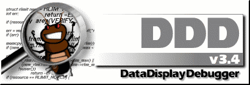
Next: Summary of DDD [Contents][Index]
DDD is a graphical front-end for GDB and other command-line debuggers.
This is the First Edition of Debugging with DDD, 20 Jan, 2023, for DDD Version 3.4.0.
Copyright © 2023 Michael J. Eager and Stefan Eickeler.
Copyright © 2004 Universität des Saarlandes
Lehrstuhl Softwaretechnik
Postfach 15 11 50
66041 Saarbrücken
GERMANY
Distributed by
Free Software Foundation, Inc.
51 Franklin Street, Fifth Floor
Boston, MA 02110
USA
DDD and this manual are available via the DDD WWW page.
Permission is granted to copy, distribute and/or modify this document under the terms of the GNU Free Documentation License, Version 1.3 or any later version published by the Free Software Foundation; with no Invariant Sections, no Front-Cover Texts and no Back-Cover Texts. A copy of the license is included in the section entitled “GNU Free Documentation License”; See GNU Free Documentation License, for details.
Send questions, comments, suggestions, etc. to ddd@gnu.org.
Submit bug reports at http://savannah.gnu.org/bugs/?group=ddd,
the DDD bug tracker. Incoming bug reports are automatically copied
to the developers’ mailing list bug-ddd@gnu.org.
Next: A Sample DDD Session, Previous: Debugging with DDD, Up: Debugging with DDD [Contents][Index]
The purpose of a debugger such as DDD is to allow you to see what is going on “inside” another program while it executes—or what another program was doing at the moment it crashed.
DDD can do four main kinds of things (plus other things in support of these) to help you catch bugs in the act:
Technically speaking, DDD is a front-end to a command-line debugger (called inferior debugger, because it lies at the layer beneath DDD). DDD supports the following inferior debuggers:
pydb. To get this, see
http://bashdb.sourceforge.net/pydb.
See Choosing an Inferior Debugger, for choosing the appropriate inferior debugger. See A Sample DDD Session, for getting a first impression of DDD.
Next: Typographic conventions, Up: Summary of DDD [Contents][Index]
This manual comes in several formats:
info program, or from
DDD via ‘Help ⇒ DDD Reference’.
The DDD source distribution
ddd-3.4.0.tar.gz contains this manual as
pre-formatted info files; you can also download them from
the DDD WWW page.
The DDD source distribution
ddd-3.4.0.tar.gz contains this manual as
pre-formatted PDF file; you can also download it from
the DDD WWW page.
A pre-formatted HTML version of this manual comes
in a separate DDD package
ddd-3.4.0-html-manual.tar.gz; you can browse
and download it via
the DDD WWW page.
The manual itself is written in TeXinfo format; its source code ddd.texi is contained in the DDD source distribution ddd-3.4.0.tar.gz.
The picture sources come in a separate package ddd-3.4.0-pics.tar.gz; you need this package only if you want to re-create the PostScript, HTML, or PDF versions.
Next: Free software, Previous: About this Manual, Up: Summary of DDD [Contents][Index]
The name for a key on the keyboard (or multiple keys pressed simultaneously)
A sequence of characters to be typed on the keyboard.
A file.
A graphical control element, such as a button or menu item.
A sequence of menu items, starting at the top-level menu bar.
argc - 1Program code or debugger command.
A command-line option.
$System prompt.
(gdb) Debugger prompt.
_Cursor position.
A metasyntactic variable; something that stands for another piece of text.
A definition.
Emphasis.
Strong emphasis.
An acronym.
Here’s an example. ‘break location’ is a typed command
at the ‘(gdb) ’ prompt; the metasyntactic variable
‘location’ would be replaced by the actual location.
‘_’ is the cursor position after entering the command.
(gdb) break location Breakpoint number at location (gdb) _
Next: Getting DDD, Previous: Typographic conventions, Up: Summary of DDD [Contents][Index]
DDD is free; this means that everyone is free to use it and free to redistribute it on a free basis. DDD is not in the public domain; it is copyrighted and there are restrictions on its distribution, but these restrictions are designed to permit everything that a good cooperating citizen would want to do. What is not allowed is to try to prevent others from further sharing any version of DDD that they might get from you. The precise conditions are found in the GNU General Public License that comes with DDD; See GNU General Public License, for details.
The easiest way to get a copy of DDD is from someone else who has it. You need not ask for permission to do so, or tell any one else; just copy it.
Next: Contributors to DDD, Previous: Free software, Up: Summary of DDD [Contents][Index]
You can get the latest version of DDD from the anonymous FTP server ‘ftp.gnu.org’ in the directory /gnu/ddd. This server is also available by directing your web browser to the same address. This should contain the following files:
The DDD source distribution. This should be all you need. The source distribution also contains the DDD manual and the DDD() Themes manuals in both PDF and HTML formats.
Next: History of DDD, Previous: Getting DDD, Up: Summary of DDD [Contents][Index]
Dorothea Lütkehaus and Andreas Zeller were the original authors of DDD. Many others have contributed to its development. The files ChangeLog and THANKS in the DDD distribution approximates a blow-by-blow account.
Previous: Contributors to DDD, Up: Summary of DDD [Contents][Index]
The history of DDD is a story of code recycling. The oldest parts of DDD were written in 1990, when Andreas Zeller designed VSL, a box-based visual structure language for visualizing data and program structures. The VSL interpreter and the Box library became part of Andreas’ Diploma Thesis, a graphical syntax editor based on the Programming System Generator PSG.
In 1992, the VSL and Box libraries were recycled for the NORA project. For NORA, an experimental inference-based software development tool set, Andreas wrote a graph editor (based on VSL and the Box libraries) and facilities for inter-process knowledge exchange. Based on these tools, Dorothea Lütkehaus (now Dorothea Krabiell) realized DDD as her Diploma Thesis, 1994.
The original DDD had no source window; this was added by Dorothea during the winter of 1994–1995. In the first quarter of 1995, finally, Andreas completed DDD by adding command and execution windows, extensions for DBX and remote debugging as well as configuration support for several architectures. Since then, Andreas has further maintained and extended DDD, based on the comments and suggestions of several DDD users around the world. See the comments in the DDD source for details.
Major DDD events:
DDD 0.9: First DDD beta release.
DDD 1.0: First public DDD release.
DDD 1.4: Machine-level debugging, glyphs, Emacs integration.
DDD 2.0: Color displays, XDB support, generic DBX support, command tool.
DDD 2.1: Alias detection, button tips, status displays.
DDD 2.2: Sessions, display shortcuts.
DDD 3.0: Icon tool bar, Java support, JDB support.
DDD 3.1: Data plotting, Perl support, Python support, Undo/Redo.
DDD 3.2: New manual, Readline support, Ladebug support.
DDD 3.3: Data themes, JDB 1.2 support, VxWorks support.
DDD 3.3.2: Bash support.
DDD 3.3.3: Better Bash support. Compiles using modern tools thanks to Daniel Schepler.
DDD 3.3.12-test: GNU Make support added.
DDD 3.3.12-test3: Modernize Python debugging
DDD 3.3.12: First mainstream release to include improved support for Python, Bash and Make.
DDD() 3.4.0: Update host system support; bug fixes.
Next: Getting In and Out of DDD, Previous: Summary of DDD, Up: Debugging with DDD [Contents][Index]
You can use this manual at your leisure to read all about DDD. However, a handful of features are enough to get started using the debugger. This chapter illustrates those features.
The sample program sample.c (see Sample Program) exhibits the
following bug. Normally, sample should sort and print its
arguments numerically, as in the following example:
$ ./sample 8 7 5 4 1 3 1 3 4 5 7 8 $ _
However, with certain arguments, this goes wrong:
$ ./sample 8000 7000 5000 1000 4000 1000 1913 4000 5000 7000 $ _
Although the output is sorted and contains the right number of
arguments, some arguments are missing and replaced by bogus numbers;
here, 8000 is missing and replaced by
1913.3
Let us use DDD to see what is going on. First, you must compile sample.c for debugging (see Compiling for Debugging), giving the -g flag while compiling:
$ gcc -g -o sample sample.c $ _
Now, you can invoke DDD (see Getting In and Out of DDD) on the
sample executable:
$ ddd sample
After a few seconds, DDD comes up. The Source Window contains the source of your debugged program; use the Scroll Bar to scroll through the file.
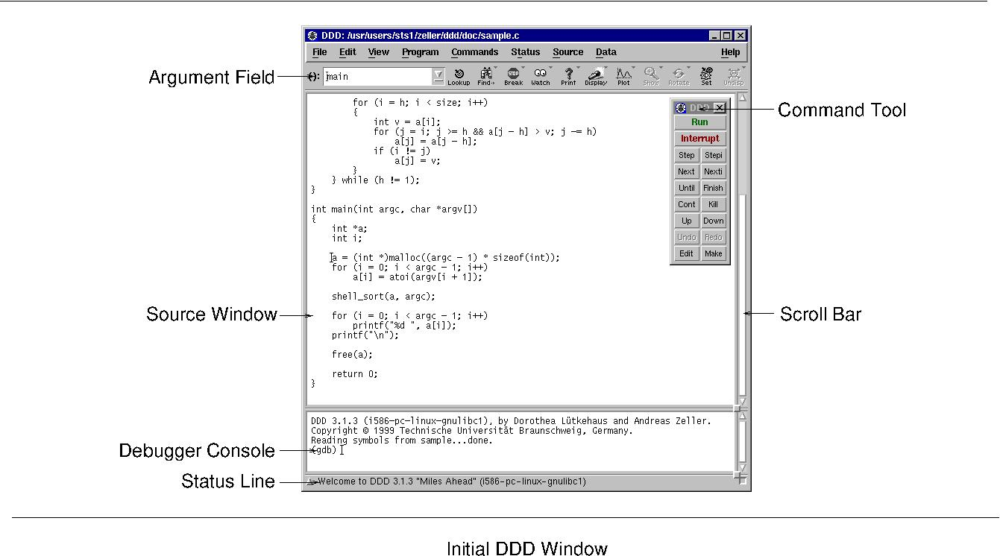
The Debugger Console (at the bottom) contains DDD version information as well as a GDB prompt.4
GNU DDD Version 3.4.0, by Dorothea Lütkehaus and Andreas Zeller. Copyright © 1995-1999 Technische Universität Braunschweig, Germany. Copyright © 1999-2001 Universität Passau, Germany. Copyright © 2001-2004 Universität des Saarlandes, Germany. Reading symbols from sample…done. (gdb) _
The first thing to do now is to place a Breakpoint
(see Breakpoints), making sample stop at a location you are
interested in. Click on the blank space left to the initialization of
a. The Argument field ‘():’ now contains the location
(‘sample.c:31’). Now, click on ‘Break’ to create a breakpoint
at the location in ‘()’. You see a little red stop sign appear in
line 31.
The next thing to do is to actually execute the program, such that you can examine its behavior (see Running the Program). Select ‘Program ⇒ Run’ to execute the program; the ‘Run Program’ dialog appears.
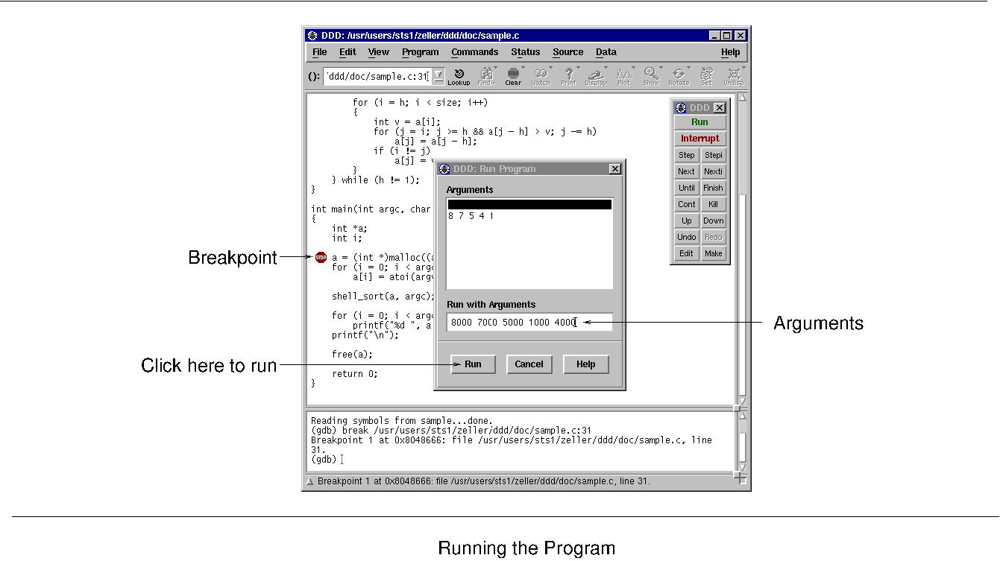
In ‘Run with Arguments’, you can now enter arguments for the
sample program. Enter the arguments resulting in erroneous
behavior here—that is, ‘8000 7000 5000 1000 4000’. Click on
‘Run’ to start execution with the arguments you just entered.
GDB now starts sample. Execution stops after a few moments as
the breakpoint is reached. This is reported in the debugger console.
(gdb) break sample.c:31 Breakpoint 1 at 0x8048666: file sample.c, line 31. (gdb) run 8000 7000 5000 1000 4000 Starting program: sample 8000 7000 5000 1000 4000 Breakpoint 1, main (argc=6, argv=0xbffff918) at sample.c:31 (gdb) _
The current execution line is indicated by a green arrow.
⇒ a = (int *)malloc((argc - 1) * sizeof(int));
You can now examine the variable values. To examine a simple variable,
you can simply move the mouse pointer on its name and leave it there.
After a second, a small window with the variable value pops up
(see Showing Simple Values using Value Tips). Try this with ‘argc’ to see its value
(6). The local variable ‘a’ is not yet initialized; you’ll
probably see 0x0 or some other invalid pointer value.
To execute the current line, click on the ‘Next’ button on the command tool. The arrow advances to the following line. Now, point again on ‘a’ to see that the value has changed and that ‘a’ has actually been initialized.
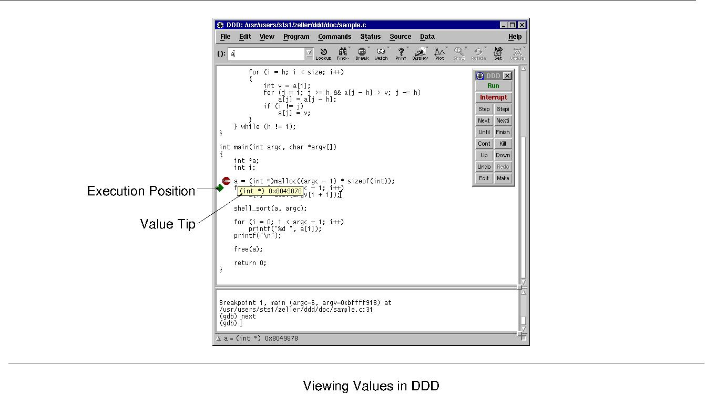
To examine the individual values of the ‘a’ array, enter ‘a[0]’ in the argument field (you can clear it beforehand by clicking on ‘():’) and then click on the ‘Print’ button. This prints the current value of ‘()’ in the debugger console (see Printing Simple Values in the Debugger Console). In our case, you’ll get
(gdb) print a[0] $1 = 0 (gdb) _
or some other value (note that ‘a’ has only been allocated, but the contents have not yet been initialized).
To see all members of ‘a’ at once, you must use a special GDB
operator. Since ‘a’ has been allocated dynamically, GDB does not
know its size; you must specify it explicitly using the ‘@’
operator (see Array Slices). Enter ‘a[0]@(argc - 1)’ in the
argument field and click on the ‘Print’ button. You get the first
argc - 1 elements of ‘a’, or
(gdb) print a[0]@(argc - 1)
$2 = {0, 0, 0, 0, 0}
(gdb) _
Rather than using ‘Print’ at each stop to see the current value of ‘a’, you can also display ‘a’, such that its is automatically displayed. With ‘a[0]@(argc - 1)’ still being shown in the argument field, click on ‘Display’. The contents of ‘a’ are now shown in a new window, the Data Window. Click on ‘Rotate’ to rotate the array horizontally.
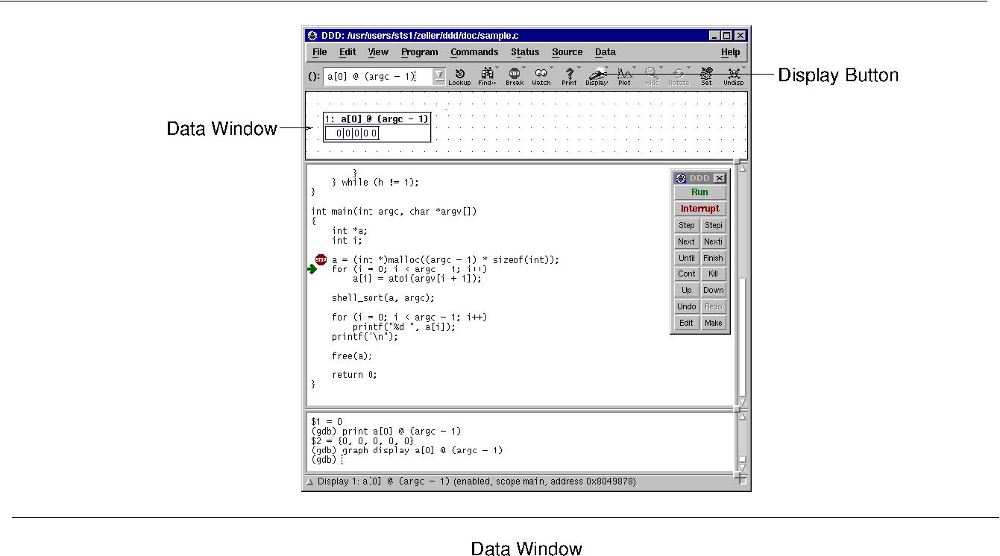
Now comes the assignment of ‘a’’s members:
⇒ for (i = 0; i < argc - 1; i++)
a[i] = atoi(argv[i + 1]);
You can now click on ‘Next’ and ‘Next’ again to see how the individual members of ‘a’ are being assigned. Changed members are highlighted.
To resume execution of the loop, use the ‘Until’ button. This makes GDB execute the program until a line greater than the current is reached. Click on ‘Until’ until you end at the call of ‘shell_sort’ in
⇒ shell_sort(a, argc);
At this point, ‘a’’s contents should be ‘8000 7000 5000 1000 4000’. Click again on ‘Next’ to step over the call to ‘shell_sort’. DDD ends in
⇒ for (i = 0; i < argc - 1; i++)
printf("%d ", a[i]);
and you see that after ‘shell_sort’ has finished, the contents of ‘a’ are ‘1000, 1913, 4000, 5000, 7000’—that is, ‘shell_sort’ has somehow garbled the contents of ‘a’.
To find out what has happened, execute the program once again. This time, you do not skip through the initialization, but jump directly into the ‘shell_sort’ call. Delete the old breakpoint by selecting it and clicking on ‘Clear’. Then, create a new breakpoint in line 35 before the call to ‘shell_sort’. To execute the program once again, select ‘Program ⇒ Run Again’.
Once more, DDD ends up before the call to ‘shell_sort’:
⇒ shell_sort(a, argc);
This time, you want to examine closer what ‘shell_sort’ is doing. Click on ‘Step’ to step into the call to ‘shell_sort’. This leaves your program in the first executable line, or
⇒ int h = 1;
while the debugger console tells us the function just entered:
(gdb) step shell_sort (a=0x8049878, size=6) at sample.c:9 (gdb) _
This output that shows the function where ‘sample’ is now suspended (and its arguments) is called a stack frame display. It shows a summary of the stack. You can use ‘Status ⇒ Backtrace’ to see where you are in the stack as a whole; selecting a line (or clicking on ‘Up’ and ‘Down’) will let you move through the stack. Note how the ‘a’ display disappears when its frame is left.
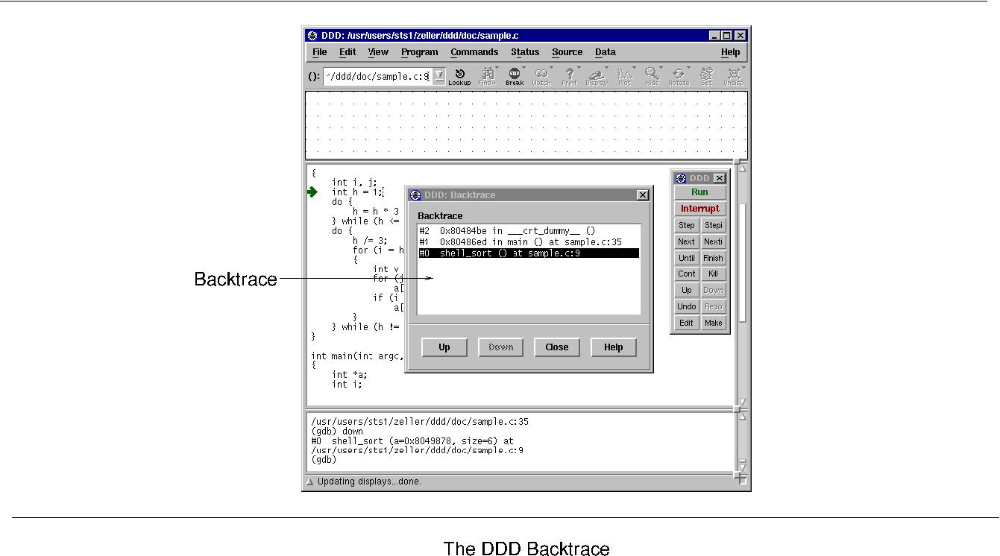
Let us now check whether ‘shell_sort’’s arguments are correct. After returning to the lowest frame, enter ‘a[0]@size’ in the argument field and click on ‘Print’:
(gdb) print a[0] @ size
$4 = {8000, 7000, 5000, 1000, 4000, 1913}
(gdb) _
Surprise! Where does this additional value 1913 come from? The
answer is simple: The array size as passed in ‘size’ to
‘shell_sort’ is too large by one—1913 is a bogus
value which happens to reside in memory after ‘a’. And this last
value is being sorted in as well.
To see whether this is actually the problem cause, you can now assign the correct value to ‘size’ (see Assignment to Variables). Select ‘size’ in the source code and click on ‘Set’. A dialog pops up where you can edit the variable value.
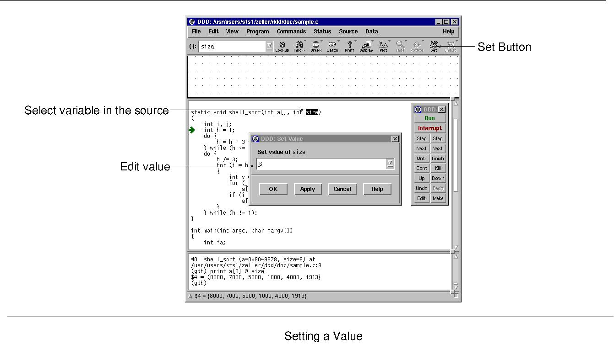
Change the value of ‘size’ to 5 and click on ‘OK’.
Then, click on ‘Finish’ to resume execution of the
‘shell_sort’ function:
(gdb) set variable size = 5 (gdb) finish Run till exit from #0 shell_sort (a=0x8049878, size=5) at sample.c:9 0x80486ed in main (argc=6, argv=0xbffff918) at sample.c:35 (gdb) _
Success! The ‘a’ display now contains the correct values ‘1000, 4000, 5000, 7000, 8000’.
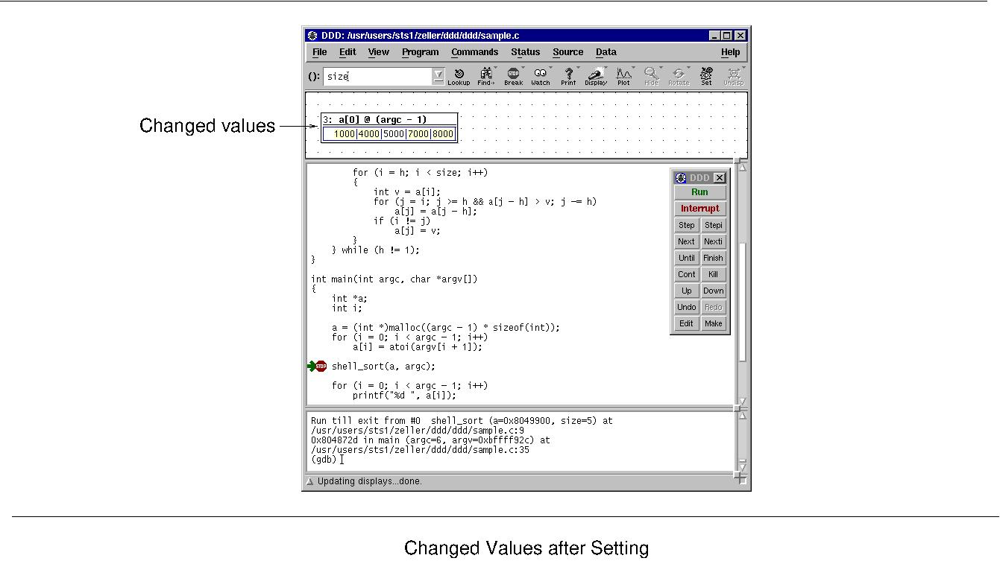
You can verify that these values are actually printed to standard output by further executing the program. Click on ‘Cont’ to continue execution.
(gdb) cont 1000 4000 5000 7000 8000 Program exited normally. (gdb) _
The message ‘Program exited normally.’ is from GDB; it indicates
that the sample program has finished executing.
Having found the problem cause, you can now fix the source code. Click on ‘Edit’ to edit sample.c, and change the line
shell_sort(a, argc);
to the correct invocation
shell_sort(a, argc - 1);
You can now recompile sample
$ gcc -g -o sample sample.c $ _
and verify (via ‘Program ⇒ Run Again’) that sample
works fine now.
(gdb) run `sample' has changed; re-reading symbols. Reading in symbols…done. Starting program: sample 8000 7000 5000 1000 4000 1000 4000 5000 7000 8000 Program exited normally. (gdb) _
All is done; the program works fine now. You can end this DDD session with ‘Program ⇒ Exit’ or Ctrl+Q.
Up: A Sample DDD Session [Contents][Index]
Here’s the source sample.c of the sample program.
/* sample.c -- Sample C program to be debugged with DDD */
#include <stdio.h>
#include <stdlib.h>
static void shell_sort(int a[], int size)
{
int i, j;
int h = 1;
do {
h = h * 3 + 1;
} while (h <= size);
do {
h /= 3;
for (i = h; i < size; i++)
{
int v = a[i];
for (j = i; j >= h && a[j - h] > v; j -= h)
a[j] = a[j - h];
if (i != j)
a[j] = v;
}
} while (h != 1);
}
int main(int argc, char *argv[])
{
int *a;
int i;
a = (int *)malloc((argc - 1) * sizeof(int));
for (i = 0; i < argc - 1; i++)
a[i] = atoi(argv[i + 1]);
shell_sort(a, argc);
for (i = 0; i < argc - 1; i++)
printf("%d ", a[i]);
printf("\n");
free(a);
return 0;
}
|
Next: The DDD Windows, Previous: A Sample DDD Session, Up: Debugging with DDD [Contents][Index]
This chapter discusses how to start DDD, and how to get out of it. The essentials are:
Next: Quitting DDD, Up: Getting In and Out of DDD [Contents][Index]
Normally, you can run DDD by invoking the program
ddd.
You can also run DDD with a variety of arguments and options, to specify more of your debugging environment at the outset.
The most usual way to start DDD is with one argument, specifying an executable program:
ddd program
If you use GDB, DBX, Ladebug, or XDB as inferior debuggers, you can also start with both an executable program and a core file specified:
ddd program core
You can, instead, specify a process ID as a second argument, if you want to debug a running process:
ddd program 1234
would attach DDD to process 1234 (unless you also have a file
named 1234; DDD does check for a core file first).
You can further control DDD by invoking it with specific options. To get a list of DDD options, invoke DDD as
ddd --help
Most important are the options to specify the inferior debugger (see Choosing an Inferior Debugger), but you can also customize several aspects of DDD upon invocation (see DDD Options).
DDD also understands the usual X options such as -display or -geometry. See X Options, for details.
All arguments and options that are not understood by DDD are passed to the inferior debugger; See Inferior Debugger Options, for a survey. To pass an option to the inferior debugger that conflicts with an X option, or with a DDD option listed here, use the --debugger option (see DDD Options).
Next: DDD Options, Up: Invoking DDD [Contents][Index]
The most frequently required options are those to choose a specific inferior debugger.
Normally, the inferior debugger is determined by the program to analyze:
pydb, Bash, or inferior debugger.
Use
ddd --bash program ddd --interpreter='path-to-debugger-bash --debugger' program
ddd --jdb program
ddd --make program ddd --interpreter='path-to-debugger-make --debugger' program
ddd --perl program
ddd --pydb program
to run DDD with JDB, pydb, Perl, Bash, or GNU Make as an inferior
debugger.
Use
ddd --dbx program
ddd --gdb program
ddd --ladebug program
ddd --wdb program
ddd --xdb program
to run DDD with GDB, WDB, DBX, Ladebug, or XDB as inferior debugger.
If you invoke DDD without any of these options, but give a program to analyze, then DDD will automatically determine the inferior debugger:
See Customizing Interaction with the Inferior Debugger, for more details on determining the inferior debugger.
Next: X Options, Previous: Choosing an Inferior Debugger, Up: Invoking DDD [Contents][Index]
You can further control how DDD starts up using the following options. All options may be abbreviated, as long as they are unambiguous; single dashes - instead of double dashes -- may also be used. Almost all options control a specific DDD resource or resource class (see Customizing DDD).
Attach the source and data windows to the debugger console, creating one single big DDD window. This is the default setting.
Giving this option is equivalent to setting the DDD ‘Separate’ resource class to ‘off’. See Window Layout, for details.
Attach only the source window to the debugger console.
Giving this option is equivalent to setting the DDD ‘separateSourceWindow’ resource to ‘off’. See Window Layout, for details.
Attach only the source window to the debugger console.
Giving this option is equivalent to setting the DDD ‘separateDataWindow’ resource to ‘off’. See Window Layout, for details.
Determine the inferior debugger automatically from the given arguments.
Giving this option is equivalent to setting the DDD ‘autoDebugger’ resource to ‘on’. See Customizing Interaction with the Inferior Debugger, for details.
Enable button tips.
Giving this option is equivalent to setting the DDD ‘buttonTips’ resource to ‘on’. See Customizing DDD Help, for details.
Print the DDD configuration settings on standard output and exit.
Giving this option is equivalent to setting the DDD ‘showConfiguration’ resource to ‘on’. See Getting Diagnostics, for details.
Check the DDD environment (in particular, the X configuration), report any possible problem causes and exit.
Giving this option is equivalent to setting the DDD ‘checkConfiguration’ resource to ‘on’. See Getting Diagnostics, for details.
Open the data window upon start-up.
Giving this option is equivalent to setting the DDD ‘openDataWindow’ resource to ‘on’. See Toggling Windows, for details.
Run DBX as inferior debugger.
Giving this option is equivalent to setting the DDD ‘debugger’ resource to ‘dbx’. See Customizing Interaction with the Inferior Debugger, for details.
Invoke the inferior debugger name. This is useful if you have
several debugger versions around, or if the inferior debugger cannot be
invoked under its usual name (i.e. gdb, wdb,
dbx, xdb, jdb, pydb, or
perl).
This option can also be used to pass options to the inferior debugger that would otherwise conflict with DDD options. For instance, to pass the option -d directory to XDB, use:
ddd --debugger "xdb -d directory"
If you use the --debugger option, be sure that the type of inferior debugger is specified as well. That is, use one of the options --gdb, --dbx, --xdb, --jdb, --pydb, or --perl (unless the default setting works fine).
Giving this option is equivalent to setting the DDD ‘debuggerCommand’ resource to name. See Customizing Interaction with the Inferior Debugger, for details.
Open the debugger console upon start-up.
Giving this option is equivalent to setting the DDD ‘openDebuggerConsole’ resource to ‘on’. See Toggling Windows, for details.
Disassemble the source code. See also the --no-disassemble option, below.
Giving this option is equivalent to setting the DDD ‘disassemble’ resource to ‘on’. See Customizing the Source Window, for details.
Run the debugged program in a specially created execution window. This is useful for programs that have special terminal requirements not provided by the debugger window, as raw keyboard processing or terminal control sequences. See Using the Execution Window, for details.
Giving this option is equivalent to setting the DDD ‘separateExecWindow’ resource to ‘on’. See Customizing the Execution Window, for details.
Use fontname as default font.
Giving this option is equivalent to setting the DDD ‘defaultFont’ resource to ‘fontname’. See Customizing Fonts, for details.
Show the font definitions used by DDD on standard output.
Giving this option is equivalent to setting the DDD ‘showFonts’ resource to ‘on’. See Getting Diagnostics, for details.
Set the default font size to size (in 1/10 points). To make DDD use 12-point fonts, say --fontsize 120.
Giving this option is equivalent to setting the DDD ‘FontSize’ resource class to ‘size’. See Customizing Fonts, for details.
Enable the TTY interface, taking additional debugger commands from standard input and forwarding debugger output on standard output. Current positions are issued in GDB -fullname format suitable for debugger front-ends. By default, both the debugger console and source window are disabled. See Entering Commands at the TTY, for a discussion.
Giving this option is equivalent to setting the DDD ‘TTYMode’ resource class to ‘on’. See Entering Commands at the TTY, for details.
Run GDB as inferior debugger.
Giving this option is equivalent to setting the DDD ‘debugger’ resource to ‘gdb’. See Customizing Interaction with the Inferior Debugger, for details.
Display the current execution position and breakpoints as glyphs. See also the --no-glyphs option, below.
Giving this option is equivalent to setting the DDD ‘displayGlyphs’ resource to ‘on’. See Customizing the Source Window, for details.
Give a list of frequently used options. Show options of the inferior debugger as well.
Giving this option is equivalent to setting the DDD ‘showInvocation’ resource to ‘on’. See Getting Diagnostics, for details.
Invoke the inferior debugger directly on the remote host hostname. If username is given and the --login option is not used, use username as remote user name. See Using DDD with a Remote Inferior Debugger, for details.
Giving this option is equivalent to setting the DDD ‘debuggerHost’ resource to hostname. See Using DDD with a Remote Inferior Debugger, for details.
Run JDB as inferior debugger.
Giving this option is equivalent to setting the DDD ‘debugger’ resource to ‘jdb’. See Customizing Interaction with the Inferior Debugger, for details.
Run Ladebug as inferior debugger.
Giving this option is equivalent to setting the DDD ‘debugger’ resource to ‘ladebug’. See Customizing Interaction with the Inferior Debugger, for details.
Print the DDD license on standard output and exit.
Giving this option is equivalent to setting the DDD ‘showLicense’ resource to on. See Getting Diagnostics, for details.
Use username as remote user name. See Using DDD with a Remote Inferior Debugger, for details.
Giving this option is equivalent to setting the DDD ‘debuggerHostLogin’ resource to username. See Using DDD with a Remote Inferior Debugger, for details.
Enable the top-level ‘Maintenance’ menu with options for debugging DDD. See The Maintenance Menu, for details.
Giving this option is equivalent to setting the DDD ‘maintenance’ resource to on. See The Maintenance Menu, for details.
Print the DDD manual on standard output and exit.
Giving this option is equivalent to setting the DDD ‘showManual’ resource to on. See Getting Diagnostics, for details.
Print the DDD news on standard output and exit.
Giving this option is equivalent to setting the DDD ‘showNews’ resource to on. See Getting Diagnostics, for details.
Disable button tips.
Giving this option is equivalent to setting the DDD ‘buttonTips’ resource to ‘off’. See Customizing DDD Help, for details.
Do not open the data window upon start-up.
Giving this option is equivalent to setting the DDD ‘openDataWindow’ resource to ‘off’. See Toggling Windows, for details.
Do not open the debugger console upon start-up.
Giving this option is equivalent to setting the DDD ‘openDebuggerConsole’ resource to ‘off’. See Toggling Windows, for details.
Do not disassemble the source code.
Giving this option is equivalent to setting the DDD ‘disassemble’ resource to ‘off’. See Customizing the Source Window, for details.
Do not run the debugged program in a specially created execution window; use the debugger console instead. Useful for programs that have little terminal input/output, or for remote debugging. See Using the Execution Window, for details.
Giving this option is equivalent to setting the DDD ‘separateExecWindow’ resource to ‘off’. See Customizing the Execution Window, for details.
Do not use glyphs; display the current execution position and breakpoints as text characters.
Giving this option is equivalent to setting the DDD ‘displayGlyphs’ resource to ‘off’. See Customizing the Source Window, for details.
Do not enable the top-level ‘Maintenance’ menu with options for debugging DDD. This is the default. See The Maintenance Menu, for details.
Giving this option is equivalent to setting the DDD ‘maintenance’ resource to off. See The Maintenance Menu, for details.
Do not open the source window upon start-up.
Giving this option is equivalent to setting the DDD ‘openSourceWindow’ resource to ‘off’. See Toggling Windows, for details.
Disable value tips.
Giving this option is equivalent to setting the DDD ‘valueTips’ resource to ‘off’. See Showing Simple Values using Value Tips, for details.
Do not use the X window interface. Start the inferior debugger on the local host.
Run Perl as inferior debugger.
Giving this option is equivalent to setting the DDD ‘debugger’ resource to ‘perl’. See Customizing Interaction with the Inferior Debugger, for details.
Run pydb as inferior debugger.
Giving this option is equivalent to setting the DDD ‘debugger’ resource to ‘pydb’. See Customizing Interaction with the Inferior Debugger, for details.
Use an Athena panner to scroll the data window. Most people prefer panners on scroll bars, since panners allow two-dimensional scrolling. However, the panner is off by default, since some Motif implementations do not work well with Athena widgets. See Display Resources, for details; see also --scrolled-graph-editor, below.
Giving this option is equivalent to setting the DDD ‘pannedGraphEditor’ resource to ‘on’. See Display Resources, for details.
Recapitulate a previous DDD session.
ddd --play-log log-file
invokes DDD as inferior debugger, simulating the inferior debugger given in log-file (see below). This is useful for debugging DDD.
Giving this option is equivalent to setting the DDD ‘playLog’ resource to ‘on’. See Customizing Interaction with the Inferior Debugger, for details.
Simulate an inferior debugger. log-file is a ~/.ddd/log file as generated by some previous DDD session (see Logging). When a command is entered, scan log-file for this command and re-issue the logged reply; if the command is not found, do nothing. This is used by the --play option.
Run the inferior debugger interactively on the remote host hostname. If username is given and the --login option is not used, use username as remote user name. See Using DDD with a Remote Inferior Debugger, for details.
Giving this option is equivalent to setting the DDD ‘debuggerRHost’ resource to hostname. See Using DDD with a Remote Inferior Debugger, for details.
Use Motif scroll bars to scroll the data window. This is the default in most DDD configurations. See Display Resources, for details; see also --panned-graph-editor, above.
Giving this option is equivalent to setting the DDD ‘pannedGraphEditor’ resource to ‘off’. See Display Resources, for details.
Separate the console, source and data windows. See also the --attach options, above.
Giving this option is equivalent to setting the DDD ‘Separate’ resource class to ‘off’. See Window Layout, for details.
Load session upon start-up. See Resuming Sessions, for details.
Giving this option is equivalent to setting the DDD ‘session’ resource to session. See Resuming Sessions, for details.
Open the source window upon start-up.
Giving this option is equivalent to setting the DDD ‘openSourceWindow’ resource to ‘on’. See Toggling Windows, for details.
Place the status line at the bottom of the source window.
Giving this option is equivalent to setting the DDD ‘statusAtBottom’ resource to ‘on’. See Window Layout, for details.
Place the status line at the top of the source window.
Giving this option is equivalent to setting the DDD ‘statusAtBottom’ resource to ‘off’. See Window Layout, for details.
Do not process X events while the debugger is busy. This may result in slightly better performance on single-processor systems.
Giving this option is equivalent to setting the DDD ‘synchronousDebugger’ resource to ‘on’. See Customizing Interaction with the Inferior Debugger, for details.
Place the toolbars at the bottom of the respective window.
Giving this option is equivalent to setting the DDD ‘toolbarsAtBottom’ resource to ‘on’. See Window Layout, for details.
Place the toolbars at the top of the respective window.
Giving this option is equivalent to setting the DDD ‘toolbarsAtBottom’ resource to ‘off’. See Window Layout, for details.
Show the interaction between DDD and the inferior debugger on standard error. This is useful for debugging DDD. If --trace is not specified, this information is written into ~/.ddd/log (~ stands for your home directory), such that you can also do a post-mortem debugging. See Logging, for details about logging.
Giving this option is equivalent to setting the DDD ‘trace’ resource to on. See Getting Diagnostics, for details.
Enable TTY interface, taking additional debugger commands from standard input and forwarding debugger output on standard output. Current positions are issued in a format readable for humans. By default, the debugger console is disabled.
Giving this option is equivalent to setting the DDD ‘ttyMode’ resource to ‘on’. See Entering Commands at the TTY, for details.
Enable value tips.
Giving this option is equivalent to setting the DDD ‘valueTips’ resource to ‘on’. See Showing Simple Values using Value Tips, for details.
Print the DDD version on standard output and exit.
Giving this option is equivalent to setting the DDD ‘showVersion’ resource to ‘on’. See Getting Diagnostics, for details.
Load the VSL library library instead of using the DDD built-in library. This is useful for customizing display shapes and fonts.
Giving this option is equivalent to setting the DDD ‘vslLibrary’ resource to library. See VSL Resources, for details.
Search VSL libraries in path (a colon-separated directory list).
Giving this option is equivalent to setting the DDD ‘vslPath’ resource to path. See VSL Resources, for details.
Show a list of further options controlling the VSL interpreter. These options are intended for debugging purposes and are subject to change without further notice.
Run WDB as inferior debugger.
Giving this option is equivalent to setting the DDD ‘debugger’ resource to ‘wdb’. See Customizing Interaction with the Inferior Debugger, for details.
Run XDB as inferior debugger.
Giving this option is equivalent to setting the DDD ‘debugger’ resource to ‘xdb’. See Customizing Interaction with the Inferior Debugger, for details.
Stops the processing of the options and passes all options after this option to the inferior debugger.
Next: Inferior Debugger Options, Previous: DDD Options, Up: Invoking DDD [Contents][Index]
DDD also understands the following X options. Note that these options only take a single dash -.
Use the X server display. By default, display is taken from
the DISPLAY environment variable.
Specify the initial size and location of the debugger console.
Start DDD iconified.
Give DDD the name name.
Specify the timeout in milliseconds within which two communicating applications must respond to one another for a selection request.
Give the DDD window the title name.
Specify a resource name and value to override any defaults.
Next: Multiple DDD Instances, Previous: X Options, Up: Invoking DDD [Contents][Index]
All options that DDD does not recognize are passed to the inferior debugger. This section lists the most useful options of the different inferior debuggers supported by DDD. In case these options do not work as expected, please lookup the appropriate reference.
Next: DBX and Ladebug Options, Up: Inferior Debugger Options [Contents][Index]
These GDB options are useful when using DDD with GDB as inferior debugger. Single dashes - instead of double dashes -- may also be used.
Pass any arguments after the executable file to the debugged program. Options after this option are not processed by DDD.
Set serial port baud rate used for remote debugging.
Change current directory to dir.
Execute GDB commands from file.
Analyze the core dump corefile.
Add directory to the path to search for source files.
Use execfile as the executable.
Use mapped symbol files if supported on this system.
Do not read .gdbinit file.
Fully read symbol files on first access.
Use file as symbol file and executable file.
Read symbols from symfile.
See Invoking GDB in Debugging with GDB, for further options that can be used with GDB.
Next: XDB Options, Previous: GDB Options, Up: Inferior Debugger Options [Contents][Index]
DBX variants differ widely in their options, so we cannot give a list here. Check out the dbx(1) and ladebug(1) manual pages.
Next: JDB Options, Previous: DBX and Ladebug Options, Up: Inferior Debugger Options [Contents][Index]
These XDB options are useful when using DDD with XDB as inferior debugger.
Specify dir as an alternate directory where source files are located.
Specify the process ID of an existing process the user wants to debug.
Pre-load information about the shared library library. -l ALL means always pre-load shared library information.
Set the size of the string cache to num bytes (default is 1024, which is also the minimum).
Enable debugging of shared libraries.
Further options can be found in the xdb(1) manual page.
Next: Bash Options, Previous: XDB Options, Up: Inferior Debugger Options [Contents][Index]
The following JDB options are useful when using DDD with JDB (from JDK 1.2) as inferior debugger.
attach to a running virtual machine (VM) at address using standard connector
wait for a running VM to connect at address using standard connector
wait for a running VM to connect at any available address using standard connector
launch VM immediately instead of waiting for ‘run’ command
These JDB options are forwarded to the debuggee:
Turn on verbose mode.
Set the system property name to value.
List directories in which to look for classes. path is a list of directories separated by colons.
Non-standard target VM option
The following JDB options are useful when using DDD with JDB (from JDK 1.1) as inferior debugger.
host machine of interpreter to attach to
password of interpreter to attach to (from -debug)
These JDB options are forwarded to the debuggee:
Turn on verbose mode.
Enable remote Java debugging,
Don’t allow asynchronous garbage collection.
Print a message when garbage collection occurs.
Disable class garbage collection.
Check if source is newer when loading classes.
Set the maximum native stack size for any thread.
Set the maximum Java stack size for any thread.
Set the initial Java heap size.
Set the maximum Java heap size.
Set the system property name to value.
List directories in which to look for classes. path is a list of directories separated by colons.
Output profiling data to ./java.prof. If file is given, write the data to ./file.
Verify all classes when read in.
Verify classes read in over the network (default).
Do not verify any class.
Print info for debugging JDB.
Further options can be found in the JDB documentation.
Next: GNU Make Options, Previous: JDB Options, Up: Inferior Debugger Options [Contents][Index]
If you have the proper bash installed, the option needed to specify debugging support is --debugger. If your bash doesn’t understand this option you need to pick up a version of bash that does from http://bashdb.sourceforge.net. Other options can be found from the on-line documentation at http://bashdb.sourceforge.net/bashdb.html
Next: Perl Options, Previous: Bash Options, Up: Inferior Debugger Options [Contents][Index]
If you have the proper remake installed (GNU Make with debugging
support), the option needed to specify debugging support
is --debugger. You can pick up a debugger-enabled version
from http://bashdb.sourceforge.net/remake. Other options can be
found from the on-line documentation at
http://bashdb.sourceforge.net/remake/mdb.html
Next: PYDB Options, Previous: GNU Make Options, Up: Inferior Debugger Options [Contents][Index]
The most important Perl option to use with DDD is -w; it enables several important warnings. For further options, see the perlrun(1) manual page.
Previous: Perl Options, Up: Inferior Debugger Options [Contents][Index]
An older version of pydb used to come with DDD. That is no
longer the case. Pick up the newer version of pydb from
http://bashdb.sourceforge.net/pydb. For a list of useful
pydb options, check out the pydb documentation,
http://bashdb.sourceforge.net/pydb/pydb/lib/index.html.
Next: X warnings, Previous: Inferior Debugger Options, Up: Invoking DDD [Contents][Index]
If you have multiple DDD instances running, they share common preferences and history files. This means that changes applied to one instance may get lost when being overwritten by the other instance. DDD has two means to protect you against unwanted losses. The first means is an automatic reloading of changed options, controlled by the following resource (see Customizing DDD):
Every n seconds, where n is the value of this resource,
DDD checks whether the options file has changed. Default is
30, which means that every 30 seconds, DDD checks for the
options file. Setting this resource to 0 disables checking for
changed option files.
Normally, automatic reloading of options should already suffice. If you need stronger protection, DDD also provides a warning against multiple instances. This warning is disabled by default, If you want to be warned about multiple DDD invocations sharing the same preferences and history files, enable ‘Edit ⇒ Preferences ⇒ Warn if Multiple DDD Instances are Running’.
This setting is tied to the following resource (see Customizing DDD):
Whether to warn if multiple DDD instances are running (‘on’) or not (‘off’, default).
Previous: Multiple DDD Instances, Up: Invoking DDD [Contents][Index]
If you are bothered by X warnings, you can suppress them by setting ‘Edit ⇒ Preferences ⇒ General ⇒ Suppress X warnings’.
This setting is tied to the following resource (see Customizing DDD):
If ‘on’, X warnings are suppressed. This is sometimes useful for executables that were built on a machine with a different X or Motif configuration. By default, this is ‘off’.
Next: Persistent Sessions, Previous: Invoking DDD, Up: Getting In and Out of DDD [Contents][Index]
To exit DDD, select ‘File ⇒ Exit’. You may also
type the quit command at the debugger prompt or press
Ctrl+Q. GDB and XDB also accept the q command or an
end-of-file character (usually Ctrl+D). Closing the last
DDD window will also exit DDD.
An interrupt (ESC or ‘Interrupt’) does not exit from DDD, but rather terminates the action of any debugger command that is in progress and returns to the debugger command level. It is safe to type the interrupt character at any time because the debugger does not allow it to take effect until a time when it is safe.
In case an ordinary interrupt does not succeed, you can also use an
abort (Ctrl+\ or ‘Abort’), which sends a SIGABRT
signal to the inferior debugger. Use this in emergencies only; the
inferior debugger may be left inconsistent or even exit after a
SIGABRT signal.
As a last resort (if DDD hangs, for example), you may also
interrupt DDD itself using an interrupt signal (SIGINT).
This can be done by typing the interrupt character (usually
Ctrl+C) in the shell DDD was started from, or by using the
UNIX ‘kill’ command. An interrupt signal interrupts any
DDD action; the inferior debugger is interrupted as well. Since
this interrupt signal can result in internal inconsistencies, use this
as a last resort in emergencies only; save your work as soon as possible
and restart DDD.
Next: Remote Debugging, Previous: Quitting DDD, Up: Getting In and Out of DDD [Contents][Index]
If you want to interrupt your current DDD session, you can save the entire the entire DDD state as session on disk and resume later.
Next: Resuming Sessions, Up: Persistent Sessions [Contents][Index]
To save a session, select ‘File ⇒ Save Session As’. You will be asked for a symbolic session name session.
If your program is running (see Running the Program), or if you have opened a core file (see Opening Core Dumps), DDD can also include a core file in the session such that the debuggee data will be restored when re-opening it. To get a core file, DDD typically must kill the debuggee. This means that you cannot resume program execution after saving a session. Depending on your architecture, other options for getting a core file may also be available.
Including a core dump is necessary for restoring memory contents and the current execution position. To include a core dump, enable ‘Include Core Dump’.
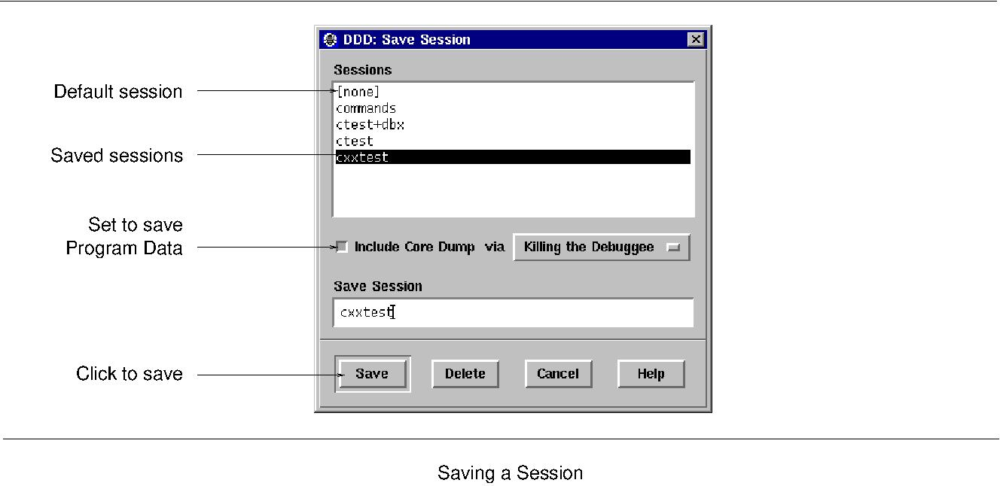
After clicking on ‘Save’, the session is saved in ~/.ddd/sessions/session.
Here’s a list of the items whose state is saved in a session:
After saving the current state as a session, the session becomes active. This means that DDD state will be saved as session defaults:
To make the current session inactive, open the default session named ‘[None]’. See Resuming Sessions, for details on opening sessions.
Next: Deleting Sessions, Previous: Saving Sessions, Up: Persistent Sessions [Contents][Index]
To resume a previously saved session, select ‘File ⇒ Open Session’ and choose a session name from the list. After clicking on ‘Open’, the entire DDD state will be restored from the given session.
The session named ‘[None]’ is the default session which is active when starting DDD. To save options for default sessions, choose the default session before exiting DDD. See Saving Options, for details.
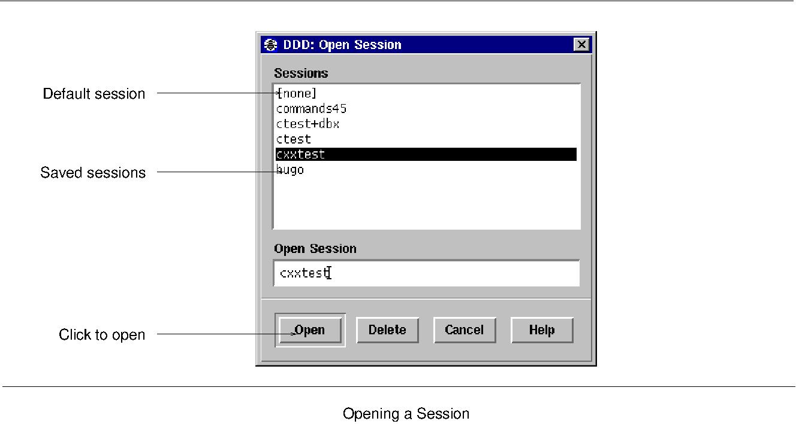
If a the restored session includes a core dump, the program being debugged will be in the same state at the time the session was saved; in particular, you can examine the program data. However, you will not be able to resume program execution since the process and its environment (open files, resources, etc.) no longer exist. However, you can restart the program, re-using the restored breakpoints and data displays.
Opening sessions also restores command definitions, buttons, display shortcuts and the source tab width. This way, you can maintain a different set of definitions for each session.
You can also specify a session to open when starting DDD. To invoke DDD with a session session, use
ddd --session session
There is also a shortcut that opens the session session and invokes the inferior debugger on an executable named session (in case session cannot be opened):
ddd =session
There is no need to give further command-line options when restarting a session, as they will be overridden by the options saved in the session.
You can also use an X session manager such as xsm to save and
restore DDD sessions.7 When
being shut down by a session manager, DDD saves its state under
the name specified by the session manager; resuming the X session makes
DDD reload its saved state.
Next: Customizing Sessions, Previous: Resuming Sessions, Up: Persistent Sessions [Contents][Index]
To delete sessions that are no longer needed, select ‘File ⇒ Open Session’ or ‘File ⇒ Save Session’. Select the sessions you want to delete and click on ‘Delete’.
The default session ‘[None]’ cannot be deleted.
Previous: Deleting Sessions, Up: Persistent Sessions [Contents][Index]
You can change the place where DDD saves its sessions by setting
the environment variable DDD_SESSIONS to the name of a directory.
Default is ~/.ddd/sessions/.
Where applicable, DDD supports a gcore command to obtain
core files of the running program. You can enter its path via
‘Edit ⇒ Preferences ⇒ Helpers ⇒ Get Core
File’. Leave the value empty if you have no gcore or similar
command.
This setting is tied to the following resource (see Customizing DDD):
A command to get a core dump of a running process (typically,
gcore) ‘@FILE@’ is replaced by the base name of the file
to create; ‘@PID@’ is replaced by the process id. The output
must be written to ‘@FILE@.@PID@’.
Leave the value empty if you have no gcore or similar command.
Next: Customizing Interaction with the Inferior Debugger, Previous: Persistent Sessions, Up: Getting In and Out of DDD [Contents][Index]
You can have each of DDD, the inferior debugger, and the debugged program run on different machines.
You can run DDD on a remote host, using your current host as X display. On the remote host, invoke DDD as
ddd -display display
where display is the name of the X server to connect to (for instance, ‘hostname:0.0’, where hostname is your host).
Instead of specifying -display display, you can also set
the DISPLAY environment variable to display.
Next: Debugging a Remote Program, Previous: Running DDD on a Remote Host, Up: Remote Debugging [Contents][Index]
In order to run the inferior debugger on a remote host, you need ‘remsh’ (called ‘rsh’ on BSD systems) access on the remote host.
To run the debugger on a remote host hostname, invoke DDD as
ddd --host hostname remote-program
If your remote username differs from the local username, use
ddd --host hostname --login username remote-program
or
ddd --host username@hostname remote-program
instead.
There are a few caveats in remote mode:
Note: using --rhost, DDD invokes the inferior debugger as soon as a shell prompt appears. The first output on the remote host ending in a space character or ‘>’ and not followed by a newline is assumed to be a shell prompt. If necessary, adjust your shell prompt on the remote host.
See Customizing Remote Debugging, for customizing remote mode.
When having the inferior debugger run on a remote host (see Remote Debugging), all commands to access the inferior debugger as well as its files must be run remotely. This is controlled by the following resources (see Customizing DDD):
The remote shell command to invoke TTY-based commands on
remote hosts. Usually, remsh, rsh, ssh,
or on.
The command to list all core files on the remote host. The string ‘@MASK@’ is replaced by a file filter. The default setting is:
Ddd*listCoreCommand: \ file @MASK@ | grep '.*:.*core.*' | cut -d: -f1
The command to list all directories on the remote host. The string ‘@MASK@’ is replaced by a file filter. The default setting is:
Ddd*listDirCommand: \ file @MASK@ | grep '.*:.*directory.*' | cut -d: -f1
The command to list all executable files on the remote host. The string ‘@MASK@’ is replaced by a file filter. The default setting is:
Ddd*listExecCommand: \ file @MASK@ | grep '.*:.*exec.*' \ | grep -v '.*:.*script.*' \ | cut -d: -f1 | grep -v '.*\.o$'
The command to list all source files on the remote host. The string ‘@MASK@’ is replaced by a file filter. The default setting is:
Ddd*listSourceCommand: \ file @MASK@ | grep '.*:.*text.*' | cut -d: -f1
Previous: Using DDD with a Remote Inferior Debugger, Up: Remote Debugging [Contents][Index]
The GDB debugger allows you to run the debugged program on a remote machine (called remote target), while GDB runs on the local machine.
See Remote Debugging in Debugging with GDB, for details. Basically, the following steps are required:
gdbserver on the remote target.
file command.
target remote
command.
The local .gdbinit file is useful for setting up directory search paths, etc.
Of course, you can also combine DDD remote mode and GDB remote mode, running DDD, GDB, and the debugged program each on a different machine.
Previous: Remote Debugging, Up: Getting In and Out of DDD [Contents][Index]
These settings control the interaction of DDD with its inferior debugger.
Next: Initializing the Inferior Debugger, Up: Customizing Interaction with the Inferior Debugger [Contents][Index]
To choose the default inferior debugger, select ‘Edit ⇒ Preferences ⇒ Startup ⇒ Debugger Type’. You can
The following DDD resources control the invocation of the inferior debugger (see Customizing DDD).
If this is ‘on’ (default), DDD will attempt to determine the debugger type from its arguments, possibly overriding the ‘debugger’ resource (see below). If this is ‘off’, DDD will invoke the debugger specified by the ‘debugger’ resource regardless of DDD arguments.
The type of the inferior debugger to invoke (‘bash’ ‘dbx’, ‘gdb’, ‘jdb’, ‘ladebug’, ‘make’, ‘perl’, ‘pydb’, or ‘xdb’).
This resource is usually set through the --bash, --dbx, --gdb, --jdb, --ladebug, --make, --perl, --pydb, and --xdb, options; See DDD Options, for details.
The name under which the inferior debugger is to be invoked. If this string is empty (default), the debugger type (‘debugger’ resource) is used.
This resource is usually set through the --debugger option; See DDD Options, for details.
Next: Communication with the Inferior Debugger, Previous: Invoking an Inferior Debugger, Up: Customizing Interaction with the Inferior Debugger [Contents][Index]
DDD uses a number of resources to initialize the inferior debugger (see Customizing DDD).
Next: DBX Initialization, Up: Initializing the Inferior Debugger [Contents][Index]
This string contains a list of newline-separated commands that are initially sent to the Bash debugger. By default, it is empty.
This resource may be used to customize the Bash debugger.
This string contains a list of newline-separated commands that are also initially sent to the Bash debugger. By default, it is empty.
This resource is used by DDD to save and restore Bash debugger settings.
Next: GDB Initialization, Previous: Bash Initialization, Up: Initializing the Inferior Debugger [Contents][Index]
This string contains a list of newline-separated commands that are initially sent to DBX. By default, it is empty.
Do not use this resource to customize DBX; instead, use a personal ~/.dbxinit or ~/.dbxrc file. See your DBX documentation for details.
This string contains a list of newline-separated commands that are also initially sent to DBX. By default, it is empty.
Next: JDB Initialization, Previous: DBX Initialization, Up: Initializing the Inferior Debugger [Contents][Index]
This string contains a list of newline-separated commands that are initially sent to GDB. As a side-effect, all settings specified in this resource are considered fixed and cannot be changed through the GDB settings panel, unless preceded by white space. By default, the ‘gdbInitCommands’ resource contains some settings vital to DDD:
Ddd*gdbInitCommands: \ set height 0\n\ set width 0\n\ set verbose off\n\ set prompt (gdb) \n
While the ‘set height’, ‘set width’, and ‘set prompt’ settings are fixed, the ‘set verbose’ settings can be changed through the GDB settings panel (although being reset upon each new DDD invocation).
Do not use this resource to customize GDB; instead, use a personal ~/.gdbinit file. See your GDB documentation for details.
This string contains a list of newline-separated commands that are also initially sent to GDB. Its default value is
Ddd*gdbSettings: \ set print asm-demangle on\n
This resource is used to save and restore the debugger settings.
If ‘on’ (default), DDD writes all GDB initialization commands into a temporary file and makes GDB read this file, rather than sending each initialization command separately. This results in faster startup (especially if you have several user-defined commands). If ‘off’, DDD makes GDB process each command separately.
Next: GNU Make Initialization, Previous: GDB Initialization, Up: Initializing the Inferior Debugger [Contents][Index]
This string contains a list of newline-separated commands that are initially sent to JDB. This resource may be used to customize JDB. By default, it is empty.
This string contains a list of newline-separated commands that are also initially sent to JDB. By default, it is empty.
This resource is used by DDD to save and restore JDB settings.
Next: Perl Initialization, Previous: JDB Initialization, Up: Initializing the Inferior Debugger [Contents][Index]
This string contains a list of newline-separated commands that are initially sent to the Bash debugger. By default, it is empty.
This resource may be used to customize GNU Make debugging.
This string contains a list of newline-separated commands that are also initially sent to the GNU Make debugger. By default, it is empty.
This resource is used by DDD to save and restore GNU Make debugger settings.
Next: PYDB Initialization, Previous: GNU Make Initialization, Up: Initializing the Inferior Debugger [Contents][Index]
This string contains a list of newline-separated commands that are initially sent to the Perl debugger. By default, it is empty.
This resource may be used to customize the Perl debugger.
This string contains a list of newline-separated commands that are also initially sent to the Perl debugger. By default, it is empty.
This resource is used by DDD to save and restore Perl debugger settings.
Next: XDB Initialization, Previous: Perl Initialization, Up: Initializing the Inferior Debugger [Contents][Index]
This string contains a list of newline-separated commands that are
initially sent to pydb. By default, it is empty.
This resource may be used to customize pydb.
This string contains a list of newline-separated commands that are
also initially sent to pydb. By default, it is empty.
This resource is used by DDD to save and restore pydb
settings.
Next: Finding a Place to Start, Previous: PYDB Initialization, Up: Initializing the Inferior Debugger [Contents][Index]
This string contains a list of newline-separated commands that are initially sent to XDB. By default, it is empty.
Do not use this resource to customize DBX; instead, use a personal ~/.xdbrc file. See your XDB documentation for details.
This string contains a list of newline-separated commands that are also initially sent to XDB. By default, it is empty.
Next: Opening the Selection, Previous: XDB Initialization, Up: Initializing the Inferior Debugger [Contents][Index]
When loading an executable, DDD queries the inferior debugger for the
initial source location—typically the main function. If this
location is not found, DDD tries other symbols from this
newline-separated list. The default value makes DDD look for a
variety of main functions (especially FORTRAN main functions):
main\n\ MAIN\n\ main_\n\ MAIN_\n\ main__\n\ MAIN__\n\ _main\n\ _MAIN\n\ __main\n\ __MAIN
Previous: Finding a Place to Start, Up: Initializing the Inferior Debugger [Contents][Index]
If this is ‘on’, DDD invoked without argument checks whether the current selection or clipboard contains the file name or URL of an executable program. If this is so, DDD will automatically open this program for debugging. If this resource is ‘off’ (default), DDD invoked without arguments will always start without a debugged program.
Previous: Initializing the Inferior Debugger, Up: Customizing Interaction with the Inferior Debugger [Contents][Index]
The following resources control the communication with the inferior debugger.
Whether DDD should block when reading data from the inferior debugger via the pseudo-tty interface. Most UNIX systems except GNU/Linux require this; set it to ‘on’. On GNU/Linux, set it to ‘off’. The value ‘auto’ (default) will always select the “best” choice (that is, the best choice known to the DDD developers).
If this is ‘on’, all output from the inferior debugger is buffered until a debugger prompt appears. This makes it easier for DDD to parse the output, but has the drawback that interaction with a running debuggee in the debugger console is not possible. If ‘off’, output is shown as soon as it arrives, enabling interaction, but making it harder for DDD to parse the output. If ‘auto’ (default), output is buffered if and only if the execution window is open, which redirects debuggee output and thus enables interaction. See Using the Execution Window, for details.
The time (in ms) to wait before automatically interrupting a ‘cont’
command. DDD cannot interrupt a ‘cont’ command immediately,
because this may disturb the status change of the process. Default is
200.
The time (in ms) to wait for the inferior debugger to finish a partial
display information. Default is 2000.
The time (in ms) to wait for the inferior debugger to finish a partial
position information. Default is 500.
The time (in seconds) to wait for the inferior debugger to reply.
Default is 10.
The time (in ms) to wait before automatically interrupting a ‘run’
command. DDD cannot interrupt a ‘run’ command immediately,
because this may disturb process creation. Default is 2000.
If ‘on’ (default), debugger commands interrupt program execution, resuming execution after the command has completed. This only happens if the last debugger command was either a ‘run’ or a ‘continue’ command. If ‘off’, debugger commands do not interrupt program execution.
If ‘on’, X events are not processed while the debugger is busy. This may result in slightly better performance on single-processor systems. See DDD Options, for the --sync-debugger option.
If ‘on’, DDD terminates the inferior debugger when DDD detects an EOF condition (that is, as soon as the inferior debugger closes its output channel). This was the default behavior in DDD 2.x and earlier. If ‘off’ (default), DDD takes no special action.
If ‘on’, use the GDB tty command for redirecting
input/output to the separate execution window. If ‘off’, use
explicit redirection through shell redirection operators ‘<’ and
‘>’. The default is ‘off’ (explicit redirection), since on
some systems, the tty command does not work properly on some
GDB versions.
Next: Navigating through the Code, Previous: Getting In and Out of DDD, Up: Debugging with DDD [Contents][Index]
DDD is composed of three main windows. From top to bottom, we have:
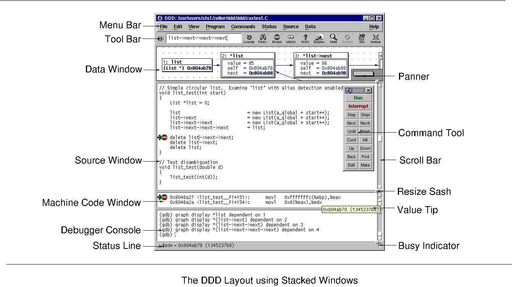
Besides these three main windows, there are some other optional windows:
Next: The Tool Bar, Up: The DDD Windows [Contents][Index]
The DDD Menu Bar gives you access to all DDD functions.
File ¶Perform file-related operations such as selecting programs, processes, and sessions, printing graphs, recompiling, as well as exiting DDD.
Edit ¶Perform standard editing operations, such as cutting, copying, pasting, and killing selected text. Also allows editing DDD options and preferences.
View ¶Allows accessing the individual DDD windows.
Program ¶Perform operations related to the program being debugged, such as starting and stopping the program.
Commands ¶Perform operations related to DDD commands, such as accessing the command history or defining new commands.
Status ¶Examine the program status, such as the stack traces, registers, or threads.
Source ¶Perform source-related operations such as looking up items or editing breakpoints.
Data ¶Perform data-related operations such as editing displays or layouting the display graph.
Maintenance ¶Perform operations that are useful for debugging DDD. By default, this menu is disabled.
Help ¶Give help on DDD usage.
There are two ways of selecting an item from a pull-down menu:
The menus can also be torn off (i.e. turned into a persistent window) by selecting the dashed line at the top.
If a command in the pull-down menu is not applicable in a given situation, the command is disabled and its name appears faded. You cannot invoke items that are faded. For example, many commands on the ‘Edit’ menu appear faded until you select text on which they are to operate; after you select a block of text, edit commands are enabled.
Next: The Edit Menu, Up: The Menu Bar [Contents][Index]
The ‘File’ menu contains file-related operations such as selecting programs, processes, and sessions, printing graphs, recompiling, as well as exiting DDD.
Open Program ¶Open ClassOpen a program or class to be debugged (Ctrl+O). See Opening Programs, for details.
Open Recent ¶Re-open a recently opened program to be debugged. See Opening Programs, for details.
Open Core Dump ¶Open a core dump for the currently debugged program. See Opening Core Dumps, for details.
Open Source ¶Open a source file of the currently debugged program. See Opening Source Files, for details.
Open Session ¶Resume a previously saved DDD session (Ctrl+N). See Resuming Sessions, for details.
Save Session As ¶Save the current DDD session such that you can resume it later (Ctrl+S). See Saving Sessions, for details.
Attach to Process ¶Attach to a running process of the debugged program. See Attaching to a Running Process, for details.
Detach Process ¶Detach from the running process. See Attaching to a Running Process, for details.
Print Graph ¶Print the current graph on a printer. See Printing the Graph, for details.
Change Directory ¶Change the working directory of your program. See Your Program’s Working Directory, for details.
Make ¶Run the make program (Ctrl+M). See Recompiling, for
details.
Close ¶Close this DDD window (Ctrl+W). See Quitting DDD, for details.
Restart ¶Restart DDD.
Exit ¶Exit DDD (Ctrl+Q). See Quitting DDD, for details.
Next: The View Menu, Previous: The File Menu, Up: The Menu Bar [Contents][Index]
The ‘Edit’ menu contains standard editing operations, such as cutting, copying, pasting, and killing selected text. Also allows editing DDD options and preferences.
Undo ¶Undo the most recent action (Ctrl+Z). Almost all commands can be undone this way. See Undoing and Redoing Commands, for details.
Redo ¶Redo the action most recently undone (Ctrl+Y). Every command undone can be redone this way. See Undoing and Redoing Commands, for details.
Cut ¶Removes the selected text block from the current text area and makes it the X clipboard selection (Ctrl+X or Shift+Del; See Customizing the Edit Menu, for details). Before executing this command, you have to select a region in a text area—either with the mouse or with the usual text selection keys.
This item can also be applied to displays (see Deleting Displays).
Copy ¶Makes a selected text block the X clipboard selection (Ctrl+C or Ctrl+Ins; See Customizing the Edit Menu, for details). You can select text by selecting a text region with the usual text selection keys or with the mouse. See Customizing the Edit Menu, for changing the default accelerator.
This item can also be applied to displays (see Deleting Displays).
Paste ¶Inserts the current value of the X clipboard selection in the most recently selected text area (Ctrl+V or Shift+Ins; See Customizing the Edit Menu, for details). You can paste in text you have placed in the clipboard using ‘Copy’ or ‘Cut’. You can also use ‘Paste’ to insert text that was pasted into the clipboard from other applications.
Clear ¶Clears the most recently selected text area (Ctrl+U).
Delete ¶Removes the selected text block from the most recently selected text area, but does not make it the X clipboard selection.
This item can also be applied to displays (see Deleting Displays).
Select All ¶Selects all characters from the most recently selected text area (Ctrl+A or or Ctrl+Shift+A; see Customizing the Edit Menu, for details).
Preferences ¶Allows you to customize DDD interactively. See Customizing DDD, for details.
Debugger Settings ¶Allows you to customize the inferior debugger. See Debugger Settings, for details.
Save Options ¶If set, all preferences and settings will be saved for the next DDD invocation. See Saving Options, for details.
Next: The Program Menu, Previous: The Edit Menu, Up: The Menu Bar [Contents][Index]
The ‘View’ menu allows accessing the individual DDD windows.
Command Tool ¶Open and recenter the command tool (Alt+8). See The Command Tool, for details.
Execution Window ¶Open the separate execution window (Alt+9). See Using the Execution Window, for details.
Debugger Console ¶Open the debugger console (Alt+1). See The Command-Line Interface, for details.
Source Window ¶Open the source window (Alt+2). See Navigating through the Code, for details.
Data Window ¶Open the data window (Alt+3). See Displaying Complex Values in the Data Window, for details.
Machine Code Window ¶Show machine code (Alt+4). See Examining Machine Code, for details.
Next: The Commands Menu, Previous: The View Menu, Up: The Menu Bar [Contents][Index]
The ‘Program’ menu performs operations related to the program being debugged, such as starting and stopping the program.
Most of these operations are also found on the command tool (see The Command Tool).
Run ¶Start program execution, prompting for program arguments (F2). See Starting Program Execution, for details.
Run Again ¶Start program execution with the most recently used arguments (F3). See Starting Program Execution, for details.
Run in Execution Window ¶If enabled, start next program execution in separate execution window. See Using the Execution Window, for details.
Step ¶Continue running your program until control reaches a different source line, then stop it and return control to DDD (F5). See Resuming Execution, for details.
Step Instruction ¶Execute one machine instruction, then stop and return to DDD (Shift+F5). See Machine Code Execution, for details.
Next ¶Continue to the next source line in the current (innermost) stack frame (F6). This is similar to ‘Step’, but function calls that appear within the line of code are executed without stopping. See Resuming Execution, for details.
Next Instruction ¶Execute one machine instruction, but if it is a function call, proceed until the function returns (Shift+F6). See Machine Code Execution, for details.
Until ¶Continue running until a source line past the current line, in the current stack frame, is reached (F7). See Resuming Execution, for details.
Finish ¶Continue running until just after function in the selected stack frame returns (F8). Print the returned value (if any). See Resuming Execution, for details.
Continue ¶Resume program execution, at the address where your program last stopped (F9); any breakpoints set at that address are bypassed. See Resuming Execution, for details.
Continue Without Signal ¶Continue execution without giving a signal (Shift+F9). This is useful when your program stopped on account of a signal and would ordinary see the signal when resumed with ‘Continue’. See Handling Signals, for details.
Kill ¶Kill the process of the debugged program (F4). See Killing the Program, for details.
Interrupt ¶Interrupt program execution (Esc or Ctrl+C; see Customizing the Edit Menu, for details). This is equivalent to sending an interrupt signal to the process. See Interrupting, for details.
Abort ¶Abort program execution (and maybe debugger execution, too;
Ctrl+\). This is equivalent to sending a SIGABRT signal to
the process. See Quitting DDD, for details.
Next: The Status Menu, Previous: The Program Menu, Up: The Menu Bar [Contents][Index]
The ‘Commands’ menu performs operations related to DDD commands, such as accessing the command history or defining new commands.
Most of these items are not meant to be actually executed via the menu; instead, they serve as reminder for the equivalent keyboard commands.
Command History ¶View the command history. See Command History, for details.
Previous ¶Show the previous command from the command history (Up). See Command History, for details.
Next ¶Show the next command from the command history (Down). See Command History, for details.
Find Backward ¶Do an incremental search backward through the command history (Ctrl+B). See Command History, for details.
Find Forward ¶Do an incremental search forward through the command history (Ctrl+F). See Command History, for details.
Quit Search ¶Quit incremental search through the command history (Esc). See Command History, for details.
Complete ¶Complete the current command in the debugger console (Tab). See Entering Commands, for details.
Apply ¶Apply the current command in the debugger console (Apply). See Entering Commands, for details.
Clear Line ¶Clear the current command line in the debugger console (Ctrl+U). See Entering Commands, for details.
Clear Window ¶Clear the debugger console (Shift+Ctrl+U). See Entering Commands, for details.
Define Command ¶Define a new debugger command. See Defining Commands, for details.
Edit Buttons ¶Customize DDD buttons. See Defining Buttons, for details.
Next: The Source Menu, Previous: The Commands Menu, Up: The Menu Bar [Contents][Index]
The ‘Status’ menu lets you examine the program status, such as the stack traces, registers, or threads.
Backtrace ¶View the current backtrace. See Backtraces, for a discussion.
Registers ¶View the current register contents. See Examining Registers, for details.
Threads ¶View the current threads. See Examining Threads, for details.
Signals ¶View and edit the current signal handling. See Handling Signals, for details.
Up ¶Select the stack frame (i.e. the function) that called this one (Ctrl+Up). This advances toward the outermost frame, to higher frame numbers, to frames that have existed longer. See Examining the Stack, for details.
Down ¶Select the stack frame (i.e. the function) that was called by this one (Ctrl+Down). This advances toward the innermost frame, to lower frame numbers, to frames that were created more recently. See Examining the Stack, for details.
Next: The Data Menu, Previous: The Status Menu, Up: The Menu Bar [Contents][Index]
The ‘Source’ menu performs source-related operations such as looking up items or editing breakpoints.
Breakpoints ¶Edit all Breakpoints. See Editing all Breakpoints, for details.
Lookup () ¶Look up the argument ‘()’ in the source code (Ctrl+/). See Looking up Definitions, for details.
Find >> () ¶Look up the next occurrence of the argument ‘()’ in the current source code (Ctrl+.). See Textual Search, for details.
Find << () ¶Look up the previous occurrence of the argument ‘()’ in the current source code (Ctrl+,). See Textual Search, for details.
Find Words Only ¶If enabled, find only complete words (Alt+W). See Textual Search, for details.
Find Case Sensitive ¶If enabled, find is case-sensitive (Alt+I). See Textual Search, for details.
Display Line Numbers ¶If enabled, prefix source lines with their line number (Alt+N). See Customizing the Source Window, for details.
Display Machine Code ¶If enabled, show machine code (Alt+4). See Examining Machine Code, for details.
Edit Source ¶Invoke an editor for the current source file (Shift+Ctrl+V). See Editing Source Code, for details.
Reload Source ¶Reload the current source file (Shift+Ctrl+L). See Editing Source Code, for details.
Next: The Maintenance Menu, Previous: The Source Menu, Up: The Menu Bar [Contents][Index]
The ‘Data’ menu performs data-related operations such as editing displays or layouting the display graph.
Displays ¶Invoke the Display Editor. See Editing all Displays, for details.
Watchpoints ¶Edit all Watchpoints. See Editing all Watchpoints, for details.
Memory ¶View a memory dump. See Examining Memory, for details.
Print () ¶Print the value of ‘()’ in the debugger console (Ctrl+=). See Printing Simple Values in the Debugger Console, for details.
Display () ¶Display the value of ‘()’ in the data window (Ctrl+-). See Displaying Complex Values in the Data Window, for details.
Detect Aliases ¶If enabled, detect shared data structures (Alt+A). See Shared Structures, for a discussion.
Display Local Variables ¶Show all local variables in a display (Alt+L). See Displaying Local Variables, for details.
Display Arguments ¶Show all arguments of the current function in a display (Alt+U). See Displaying Local Variables, for details.
Status Displays ¶Show current debugging information in a display. See Displaying Program Status, for details.
Align on Grid ¶Align all displays on the grid (Alt+G). See Aligning Displays, for a discussion.
Rotate Graph ¶Rotate the graph by 90 degrees (Alt+R). See Rotating the Graph, for details.
Layout Graph ¶Layout the graph (Alt+Y). See Layouting the Graph, for details.
Refresh ¶Update all values in the data window (Ctrl+L). See Refreshing the Data Window, for details.
Next: The Help Menu, Previous: The Data Menu, Up: The Menu Bar [Contents][Index]
The ‘Maintenance’ menu performs operations that are useful for debugging DDD.
By default, this menu is disabled; it is enabled by specifically requesting it at DDD invocation (via the --maintenance option; see DDD Options). It is also enabled when DDD gets a fatal signal.
Debug DDD ¶Invoke a debugger (typically, GDB) and attach it to this DDD process (F12). This is useful only if you are a DDD maintainer.
Dump Core Now ¶Make this DDD process dump core. This can also be achieved by
sending DDD a SIGUSR1 signal.
Tic Tac Toe ¶Invoke a Tic Tac Toe game. You must try to get three stop signs in a row, while preventing DDD from doing so with its skulls. Click on ‘New Game’ to restart.
When DDD Crashes ¶Select what to do when DDD gets a fatal signal.
Debug DDD ¶Invoke a debugger on the DDD core dump when DDD crashes. This is useful only if you are a DDD maintainer.
Dump Core ¶Just dump core when DDD crashes; don’t invoke a debugger. This is the default setting, as the core dump may contain important information required for debugging DDD.
Do Nothing ¶Do not dump core or invoke a debugger when DDD crashes.
Remove Menu ¶Make this menu inaccessible again.
Next: Customizing the Menu Bar, Previous: The Maintenance Menu, Up: The Menu Bar [Contents][Index]
The ‘Help’ menu gives help on DDD usage. See Getting Help, for a discussion on how to get help within DDD.
Overview ¶Explains the most important concepts of DDD help.
On Item ¶Lets you click on an item to get help on it.
On Window ¶Gives you help on this DDD window.
What Now? ¶Gives a hint on what to do next.
Tip of the Day ¶Shows the current tip of the day.
DDD Reference ¶Shows the DDD Manual.
DDD News ¶Shows what’s new in this DDD release.
Debugger Reference ¶Shows the on-line documentation for the inferior debugger.
DDD License ¶Shows the DDD License (see GNU General Public License).
DDD WWW Page ¶Invokes a WWW browser for the DDD WWW page.
About DDD ¶Shows version and copyright information.
Previous: The Help Menu, Up: The Menu Bar [Contents][Index]
The Menu Bar can be customized in various ways (see Customizing DDD).
Next: Customizing the Edit Menu, Up: Customizing the Menu Bar [Contents][Index]
You can cause pull-down menus to be raised automatically.
If ‘on’ (default), DDD will always keep the pull down menu on top of the DDD main window. If this setting interferes with your window manager, or if your window manager does not auto-raise windows, set this resource to ‘off’.
The time (in ms) during which an initial auto-raised window blocks
further auto-raises. This is done to prevent two overlapping
auto-raised windows from entering an auto-raise loop. Default is
100.
Previous: Auto-Raise Menus, Up: Customizing the Menu Bar [Contents][Index]
In the Menu Bar, the ‘Edit’ Menu can be customized in various ways. Use ‘Edit ⇒ Preferences ⇒ Startup’ to customize these keys.
The Ctrl+C key can be bound to different actions, each in accordance with a specific style guide.
Copy ¶This setting binds Ctrl+C to the Copy operation, as specified by the KDE style guide. In this setting, use ESC to interrupt the debuggee.
Interrupt ¶This (default) setting binds Ctrl+C to the Interrupt operation, as used in several UNIX command-line programs. In this setting, use Ctrl+Ins to copy text to the clipboard.
The Ctrl+A key can be bound to different actions, too.
Select All ¶This (default) setting binds Ctrl+A to the ‘Select All’ operation, as specified by the KDE style guide. In this setting, use Home to move the cursor to the beginning of a line.
Beginning of Line ¶This setting binds Ctrl+A to the ‘Beginning of Line’ operation, as used in several UNIX text-editing programs. In this setting, use Ctrl+Shift+A to select all text.
Here are the related DDD resources:
Controls the key bindings for clipboard operations.
Controls the key bindings for the ‘Select All’ operation.
Next: The Command Tool, Previous: The Menu Bar, Up: The DDD Windows [Contents][Index]
Some DDD commands require an argument. This argument is specified in the argument field, labeled ‘():’. Basically, there are four ways to set arguments:
Using GDB and Perl, the argument field provides a completion mechanism. You can enter the first few characters of an item an press the TAB key to complete it. Pressing TAB again shows alternative completions.
After having entered an argument, you can select one of the buttons on the right. Most of these buttons also have menus associated with them; this is indicated by a small arrow in the upper right corner. Pressing and holding mouse button 1 on such a button will pop up a menu with further operations.
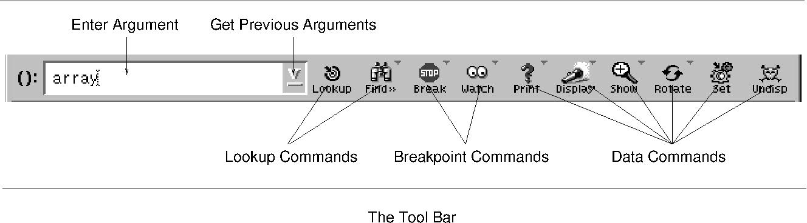
These are the buttons of the tool bar. Note that not all buttons may be inactive, depending on the current state and the capabilities of the inferior debugger.
Lookup ¶Look up the argument ‘()’ in the source code. See Looking up Definitions, for details.
Find >> ¶Look up the next occurrence of the argument ‘()’ in the current source code. See Textual Search, for details.
Break/Clear ¶Toggle a breakpoint (see Breakpoints) at the location ‘()’.
Break ¶If there is no breakpoint at ‘()’, then this button is labeled ‘Break’. Clicking on ‘Break’ sets a breakpoint at the location ‘()’. See Setting Breakpoints, for details.
Clear ¶If there already is a breakpoint at ‘()’, then this button is labeled ‘Clear’. Clicking on ‘Clear’ clears (deletes) the breakpoint at the location ‘()’. See Deleting Breakpoints, for details.
Watch/Unwatch ¶Toggle a watchpoint (see Watchpoints) on the expression ‘()’.
Watch ¶If ‘()’ is not being watched, then this button is labeled ‘Watch’. Clicking on ‘Watch’ creates a watchpoint on the expression ‘()’. See Setting Watchpoints, for details.
Unwatch ¶If ‘()’ is being watched, then this button is labeled ‘Unwatch’. Clicking on ‘Unwatch’ clears (deletes) the watchpoint on ‘()’. See Deleting Watchpoints, for details.
Print ¶Print the value of ‘()’ in the debugger console. See Printing Simple Values in the Debugger Console, for details.
Display ¶Display the value of ‘()’ in the data window. See Displaying Complex Values in the Data Window, for details.
Plot ¶Plot ‘()’ in a plot window. See Plotting Values, for details.
Show/Hide ¶Toggle details of the selected display(s). See Showing and Hiding Details, for a discussion.
Rotate ¶Rotate the selected display(s). See Rotating Displays, for details.
Set ¶Set (change) the value of ‘()’. See Assignment to Variables, for details.
Undisp ¶Undisplay (delete) the selected display(s). See Deleting Displays, for details.
Up: The Tool Bar [Contents][Index]
The DDD tool bar buttons can appear in a variety of styles, customized via ‘Edit ⇒ Preferences ⇒ Startup’.
ImagesThis lets each tool bar button show an image illustrating the action.
CaptionsThis shows the action name below the image.
The default is to have images as well as captions, but you can choose to have only images (saving space) or only captions.
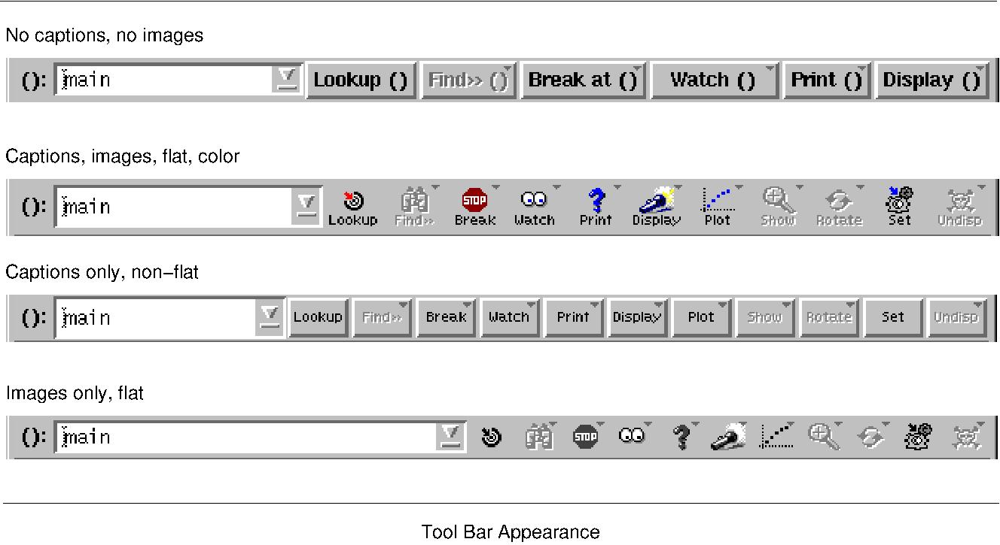
If you choose to have neither images nor captions, tool bar buttons are labeled like other buttons, as in DDD 2.x. Note that this implies that in the stacked window configuration, the common tool bar cannot be displayed; it is replaced by two separate tool bars, as in DDD 2.x.
If you enable ‘Flat’ buttons (default), the border of tool bar buttons will appear only if the mouse pointer is over them. This latest-and-greatest GUI invention can be disabled, such that the button border is always shown.
If you enable ‘Color’ buttons, tool bar images will be colored when entered. If DDD was built using Motif 2.0 and later, you can also choose a third setting, where buttons appear in color all the time.
Here are the related resources (see Customizing DDD):
The XPM color key to use for the images of active buttons (entered or armed). ‘c’ means color, ‘g’ (default) means grey, and ‘m’ means monochrome.
Whether the tool bar buttons should be shown using captions (‘on’, default) or not (‘off’). If neither captions nor images are enabled, tool bar buttons are shown using ordinary labels. See also ‘buttonImages’, below.
The geometry of the caption subimage within the button icons. Default is ‘29x7+0-0’.
Whether the tool bar buttons should be shown using images (‘on’, default) or not (‘off’). If neither captions nor images are enabled, tool bar buttons are shown using ordinary labels. See also ‘buttonCaptions’, above.
The geometry of the image within the button icon. Default is ‘25x21+2+0’.
The XPM color key to use for the images of inactive buttons (non-entered or insensitive). ‘c’ means color, ‘g’ (default) means grey, and ‘m’ means monochrome.
If ‘on’ (default), all tool bar buttons with images or captions are given a ‘flat’ appearance—the 3-D border only shows up when the pointer is over the icon. If ‘off’, the 3-D border is shown all the time.
If ‘on’ (default), all dialog buttons with images or captions are given a ‘flat’ appearance—the 3-D border only shows up when the pointer is over the icon. If ‘off’, the 3-D border is shown all the time.
Next: Getting Help, Previous: The Tool Bar, Up: The DDD Windows [Contents][Index]
The command tool is a small window that gives you access to the most frequently used DDD commands. It can be moved around on top of the DDD windows, but it can also be placed besides them.
By default, the command tool sticks to the DDD source window: Whenever you move the DDD source window, the command tool follows such that the distance between source window and command tool remains the same. By default, the command tool is also auto-raised, such that it stays on top of other DDD windows.
The command tool can be configured to appear as a command tool bar above the source window; see ‘Edit ⇒ Preferences ⇒ Source ⇒ Tool Buttons Location’ for details.
Whenever you save DDD state, DDD also saves the distance between command tool and source window, such that you can select your own individual command tool placement. To move the command tool to its saved position, use ‘View ⇒ Command Tool’.
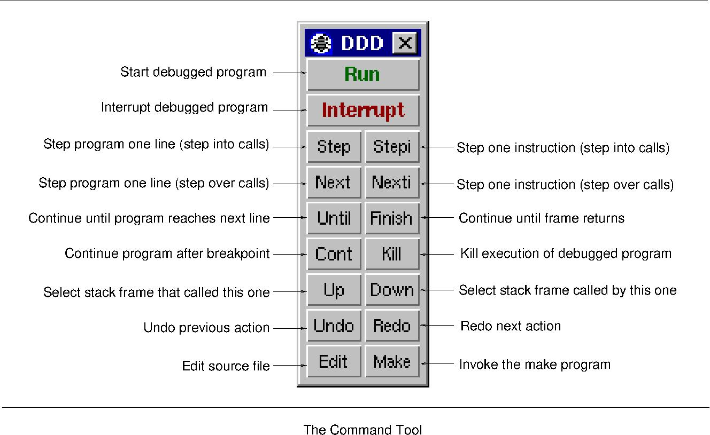
These are the buttons of the command tool. Note that not all buttons may be inactive, depending on the current state and the capabilities of the inferior debugger.
Run ¶Start program execution. When you click this button, your program will begin to execute immediately. See Starting Program Execution, for details.
Interrupt ¶Interrupt program execution. This is equivalent to sending an interrupt signal to the process. See Interrupting, for details.
Step ¶Continue running your program until control reaches a different source line, then stop it and return control to DDD. See Resuming Execution, for details.
Stepi ¶Execute one machine instruction, then stop and return to DDD. See Machine Code Execution, for details.
Next ¶Continue to the next source line in the current (innermost) stack frame. This is similar to ‘Step’, but function calls that appear within the line of code are executed without stopping. See Resuming Execution, for details.
Nexti ¶Execute one machine instruction, but if it is a function call, proceed until the function returns. See Machine Code Execution, for details.
Until ¶Continue running until a source line past the current line, in the current stack frame, is reached. See Resuming Execution, for details.
Finish ¶Continue running until just after function in the selected stack frame returns. Print the returned value (if any). See Resuming Execution, for details.
Cont ¶Resume program execution, at the address where your program last stopped; any breakpoints set at that address are bypassed. See Resuming Execution, for details.
Kill ¶Kill the process of the debugged program. See Killing the Program, for details.
Up ¶Select the stack frame (i.e. the function) that called this one. This advances toward the outermost frame, to higher frame numbers, to frames that have existed longer. See Examining the Stack, for details.
Down ¶Select the stack frame (i.e. the function) that was called by this one. This advances toward the innermost frame, to lower frame numbers, to frames that were created more recently. See Examining the Stack, for details.
Undo ¶Undo the most recent action. Almost all commands can be undone this way. See Undoing and Redoing Commands, for details.
Redo ¶Redo the action most recently undone. Every command undone can be redone this way. See Undoing and Redoing Commands, for details.
Edit ¶Invoke an editor for the current source file. See Editing Source Code, for details.
Make ¶Run the make program with the most recently given arguments.
See Recompiling, for details.
Next: Command Tool Position, Up: The Command Tool [Contents][Index]
The Command Tool can be customized in various ways.
See Customizing Buttons, for details on customizing the tool buttons.
You can disable the command tool and show its buttons in a separate row beneath the tool bar. To disable the command tool, set ‘Edit ⇒ Preferences ⇒ Source ⇒ Tool Buttons Location ⇒ Source Window’.
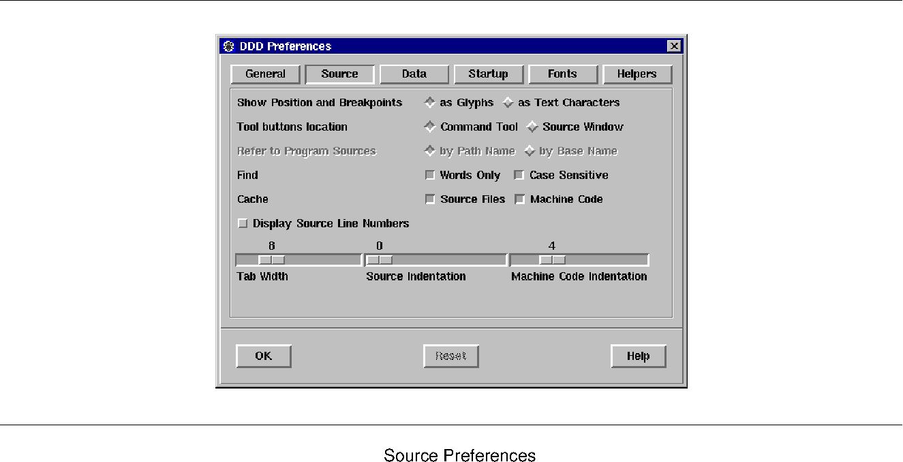
Here’s the related resource:
Whether the tool buttons should be shown in a tool bar above the source window (‘on’) or within the command tool (‘off’, default). Enabling the command tool bar disables the command tool and vice versa.
Previous: Customizing the Command Tool, Up: The Command Tool [Contents][Index]
The following resources control the position of the command tool (see Customizing DDD):
If ‘on’ (default), DDD will always keep the command tool on top of other DDD windows. If this setting interferes with your window manager, or if your window manager keeps the command tool on top anyway, set this resource to ‘off’.
If ‘on’ (default), the command tool automatically follows every movement of the source window. Whenever the source window is moved, the command tool is moved by the same offset such that its position relative to the source window remains unchanged. If ‘off’, the command tool does not follow source window movements.
The distance between the right border of the command tool and the right border of the source text (in pixels). Default is 8.
The distance between the upper border of the command tool and the upper border of the source text (in pixels). Default is 8.
Up: Command Tool Position [Contents][Index]
The following resources control the decoration of the command tool (see Customizing DDD):
This resource controls the decoration of the command tool.
Next: Undoing and Redoing Commands, Previous: The Command Tool, Up: The DDD Windows [Contents][Index]
DDD has an extensive on-line help system. Here’s how to get help while working with DDD.
help at the
debugger prompt. See Entering Commands, for details on entering
commands.
All these functions can be customized in various ways (see Customizing DDD Help).
If, after all, you made a mistake, don’t worry: almost every DDD command can be undone. See Undoing and Redoing Commands, for details.
Next: Customizing DDD, Previous: Getting Help, Up: The DDD Windows [Contents][Index]
Almost every DDD command can be undone, using ‘Edit ⇒ Undo’ or the ‘Undo’ button on the command tool.
Likewise, ‘Edit ⇒ Redo’ repeats the command most recently undone.
The ‘Edit’ menu shows which commands are to be undone and redone next; this is also indicated by the popup help on the ‘Undo’ and ‘Redo’ buttons.
Previous: Undoing and Redoing Commands, Up: The DDD Windows [Contents][Index]
DDD is controlled by several resources—user-defined variables that take specific values in order to control and customize DDD behavior.
Most DDD resources can be set interactively while DDD is running or when invoking DDD. See Resource Index, for the full list of DDD resources.
We first discuss how customizing works in general; then we turn to customizing parts of DDD introduced so far.
Next: Customizing DDD Help, Up: Customizing DDD [Contents][Index]
Next: Changing Resources, Up: How Customizing DDD Works [Contents][Index]
Just like any X program, DDD has a number of places to get resource values from. For DDD, the most important places to specify resources are:
If the environment variable DDD_STATE is set, its value
is used instead of ~/.ddd/.
DDD_SESSION is set, it
indicates the name of a session to start, overriding all options and
resources. This is used by DDD when restarting itself.
Not every resource has a matching command-line option. Each resource (whether in ~/.ddd/init or Ddd) is specified using a line
Ddd*resource: value
For instance, to set the ‘pollChildStatus’ resource to ‘off’, you would specify in ~/.ddd/init:
Ddd*pollChildStatus: off
For more details on the syntax of resource specifications, see the section RESOURCES in the X(1) manual page.
Next: Saving Options, Previous: Resources, Up: How Customizing DDD Works [Contents][Index]
You can change DDD resources by three methods:
Previous: Changing Resources, Up: How Customizing DDD Works [Contents][Index]
You can save the current option settings by setting ‘Edit ⇒ Save Options’. Options are saved in a file named .ddd/init in your home directory when DDD exits. If a session session is active, options will be saved in ~/.ddd/sessions/session/init instead.
The options are automatically saved when exiting DDD. You can turn off this feature by unsetting ‘Edit ⇒ Save Options’. This is tied to the following resource:
If ‘on’ (default), the current option settings are automatically saved when DDD exits.
Next: Customizing Undo, Previous: How Customizing DDD Works, Up: Customizing DDD [Contents][Index]
DDD Help can be customized in various ways.
Next: Tip of the day, Up: Customizing DDD Help [Contents][Index]
Button tips are helpful for novices, but may be distracting for experienced users. You can turn off button tips via ‘Edit ⇒ Preferences ⇒ General ⇒ Automatic display of Button Hints ⇒ as Popup Tips’.
You can also turn off the hint that is displayed in the status line. Just toggle ‘Edit ⇒ Preferences ⇒ General ⇒ Automatic Display of Button Hints ⇒ in the Status Line’.
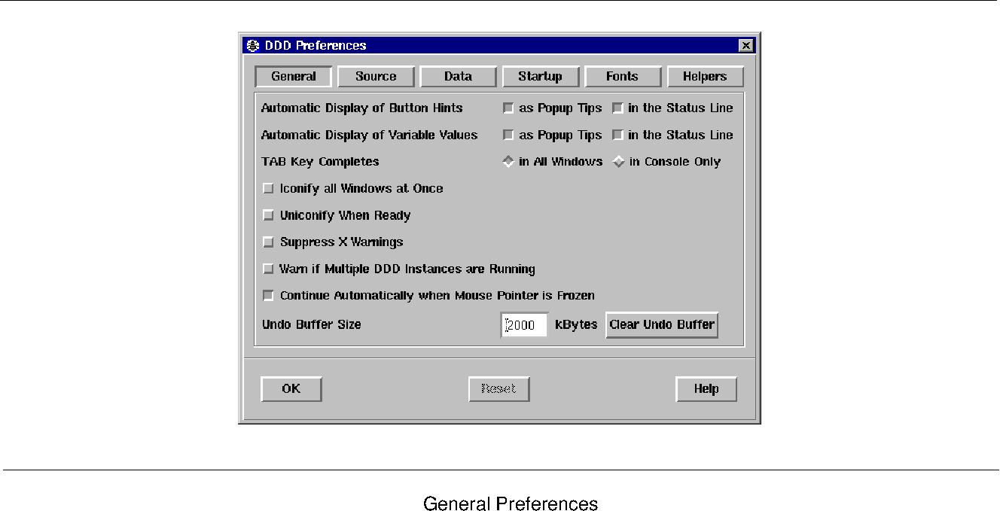
These are the related DDD resources (see Customizing DDD):
If ‘on’ (default), enable button tips.
If ‘on’ (default), show button hints in the status line.
Next: Help Helpers, Previous: Button Tips, Up: Customizing DDD Help [Contents][Index]
You can turn off the tip of the day by toggling ‘Edit ⇒ Preferences ⇒ Startup ⇒ Startup Windows ⇒ Tip of the Day’.
Here is the related DDD resource (see Customizing DDD):
If ‘on’ (default), show a tip of the day upon DDD startup.
See DDD Options, for options to set this resource upon DDD invocation.
The actual tips are controlled by these resources (see Customizing DDD):
The number n of the tip of the day to be shown at startup. See also the ‘tipn’ resources.
The tip of the day numbered n (a string).
Previous: Tip of the day, Up: Customizing DDD Help [Contents][Index]
DDD relies on a number of external commands, specified via ‘Edit ⇒ Preferences ⇒ Helpers’.
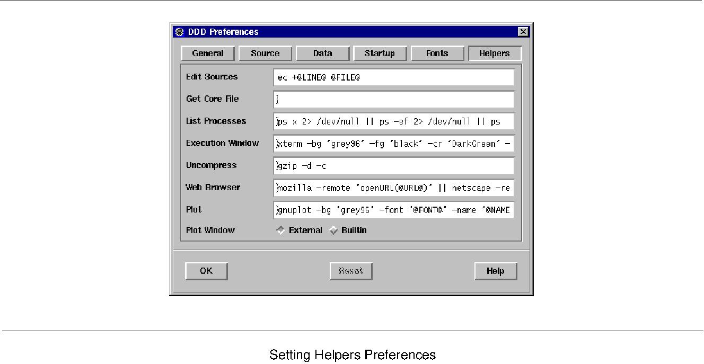
To uncompress help texts, you can define a ‘Uncompress’ command:
The command to uncompress the built-in DDD manual, the
DDD license, and the DDD news. Takes a compressed text
from standard input and writes the uncompressed text to standard output.
The default value is gzip -d -c; typical values include
zcat and gunzip -c.
To view WWW pages, you can define a ‘Web Browser’ command:
The command to invoke a WWW browser. The string ‘@URL@’ is
replaced by the URL to open. Default is to try a running
Netscape first (trying mozilla, then netscape), then
$WWWBROWSER, then to invoke a new Netscape process, then to
let a running Emacs or XEmacs do the job (via gnudoit), then
to invoke Firefox, then to invoke Lynx in an xterm.
To specify ‘netscape-6.0’ as browser, use the setting:
Ddd*wwwCommand: \
netscape-6.0 -remote 'openURL(@URL@)' \
|| netscape-6.0 '@URL@'
This command first tries to connect to a running netscape-6.0
browser; if this fails, it starts a new netscape-6.0 process.
This is the default WWW Page shown by ‘Help ⇒ DDD WWW Page’:
The DDD WWW page. Value: http://www.gnu.org/software/ddd/
Next: Customizing the DDD Windows, Previous: Customizing DDD Help, Up: Customizing DDD [Contents][Index]
DDD Undo can be customized in various ways.
To set a maximum size for the undo buffer, set ‘Edit ⇒ Preferences ⇒ General ⇒ Undo Buffer Size’.
This is related to the ‘maxUndoSize’ resource:
The maximum memory usage (in bytes) of the undo buffer. Useful for
limiting DDD memory usage. A negative value means to place no
limit. Default is 2000000, or 2000 kBytes.
You can also limit the number of entries in the undo buffer, regardless of size (see Customizing DDD):
The maximum number of entries in the undo buffer. This limits the number of actions that can be undone, and the number of states that can be shown in historic mode. Useful for limiting DDD memory usage. A negative value (default) means to place no limit.
To clear the undo buffer at any time, thus reducing memory usage, use ‘Edit ⇒ Preferences ⇒ General ⇒ Clear Undo Buffer’
Next: Debugger Settings, Previous: Customizing Undo, Up: Customizing DDD [Contents][Index]
You can customize the DDD Windows in various ways.
Next: Window Layout, Up: Customizing the DDD Windows [Contents][Index]
You can turn off the DDD splash screen shown upon startup. Just select ‘Edit ⇒ Preferences ⇒ Startup DDD Splash Screen’.
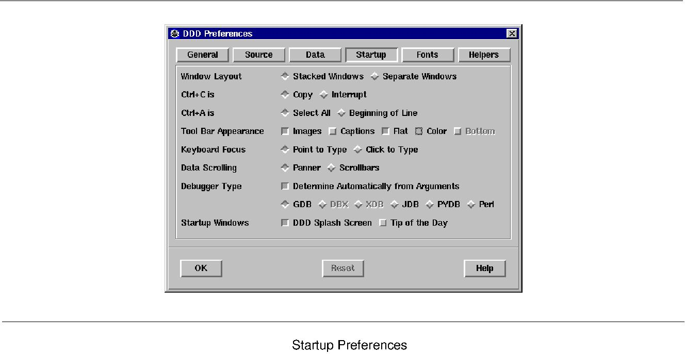
The value applies only to the next DDD invocation.
This setting is related to the following resource:
If ‘on’ (default), show a DDD splash screen upon start-up.
You can also customize the appearance of the splash screen (see Customizing DDD):
The color key to use for the DDD splash screen. Possible values include:
Please note: if DDD runs on a monochrome display, or if DDD was compiled without the XPM library, only the monochrome version (‘m’) can be shown.
Next: Customizing Fonts, Previous: Splash Screen, Up: Customizing the DDD Windows [Contents][Index]
By default, DDD stacks commands, source, and data in one single top-level window. To have separate top-level windows for source, data, and debugger console, set ‘Edit ⇒ Preferences ⇒ Startup ⇒ Window Layout ⇒ Separate Windows’.
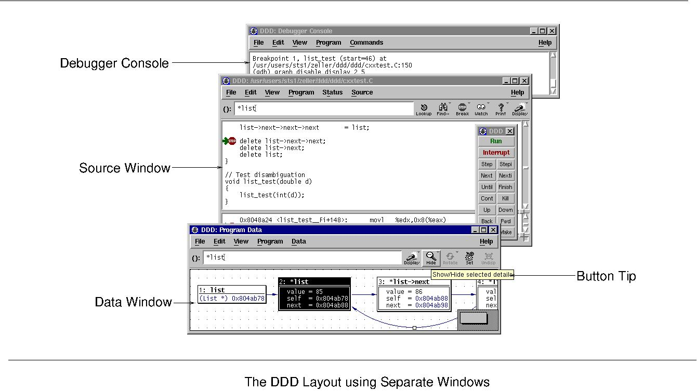
Here are the related DDD resources:
If ‘on’, the data window and the debugger console are realized in different top-level windows. If ‘off’ (default), the data window is attached to the debugger console.
If ‘on’, the source window and the debugger console are realized in different top-level windows. If ‘off’ (default), the source window is attached to the debugger console.
By default, the DDD tool bars are located on top of the window. If you prefer the tool bar being located at the bottom, as in DDD 2.x and earlier, set ‘Edit ⇒ Preferences ⇒ Startup ⇒ Tool Bar Appearance ⇒ Bottom’.
This is related to the ‘toolbarsAtBottom’ resource:
Whether source and data tool bars should be placed above source and data, respectively (‘off’, default), or below, as in DDD 2.x (‘on’).
The bottom setting is only supported for separate tool bars—that is, you must either choose separate windows or configure the tool bar to have neither images nor captions (see Customizing the Tool Bar).
If you use stacked windows, you can choose whether there should be one tool bar or two tool bars. By default, DDD uses two tool bars if you use separate windows and disable captions and images, but you can also explicitly change the setting via this resource:
Whether the tool bar buttons should be shown in one common tool bar at the top of the common DDD window (‘on’, default), or whether they should be placed in two separate tool bars, one for data, and one for source operations, as in DDD 2.x (‘off’).
You can also change the location of the status line (see Customizing DDD):
If ‘on’ (default), the status line is placed at the bottom of the DDD source window. If ‘off’, the status line is placed at the top of the DDD source window (as in DDD 1.x).
See DDD Options, for options to set these resources upon DDD invocation.
Next: Toggling Windows, Previous: Window Layout, Up: Customizing the DDD Windows [Contents][Index]
You can configure the basic DDD fonts at run-time. Each font is specified using two members:
To specify fonts, select ‘Edit ⇒ Preferences ⇒ Fonts’.
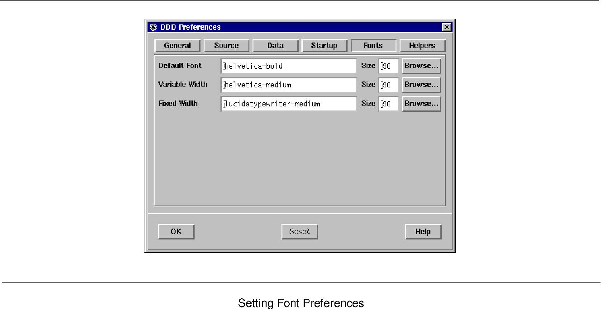
The ‘Browse’ button opens a font selection program, where you can select fonts and attributes interactively. Clicking ‘quit’ or ‘select’ in the font selector causes all non-default values to be transferred to the DDD font preferences panel.
The following fonts can be set using the preferences panel:
Default FontThe default DDD font to use for labels, menus, and buttons. Default is ‘liberation sans-bold’ (similar to Helvetica Bold).
Variable WidthThe variable width DDD font to use for help texts and messages. Default is ‘liberation sans-medium’ (similar to Helvetica Medium).
Fixed WidthThe fixed width DDD font to use for source code, the debugger console, text fields, and the execution window. Default is ‘liberation mono-bold’ (similar to Courier Bold).
DataThe DDD font to use for data displays. Default is ‘liberation mono-bold’. (similar to Courier Bold).
Changes in this panel will take effect only in the next DDD session. To make it effective right now, restart DDD (using ‘File ⇒ Restart DDD’).
After having made changes in the panel, DDD will automatically offer you to restart itself, such that you can see the changes taking effect.
The ‘Reset’ button restores the most recently saved preferences.
Here are the resources related to font specifications:
The default DDD font to use for labels, menus, buttons, etc. The font is specified as an X font spec, where the initial Foundry specification may be omitted, as well as any specification after Family.
Default value is ‘liberation sans-bold’ (similar to Helvetica Bold).
To set the default DDD font to, say, ‘liberation sans medium’ (similar to Helvetica Medium), insert a line
Ddd*defaultFont: liberation sans-medium
in your ~/.ddd/init file.
The size of the default DDD font, in 1/10 points. This resource
overrides any font size specification in the ‘defaultFont’ resource
(see above). The default value is 120 for a 12.0 point font.
The variable width DDD font to use for help texts and messages. The font is specified as an X font spec, where the initial Foundry specification may be omitted, as well as any specification after Family.
Default value is ‘liberation sans-medium-r’.
To set the variable width DDD font family to, say, ‘liberation serif’ (similar to Times Roman), insert a line
Ddd*fixedWidthFont: liberation serif-medium
in your ~/.ddd/init file.
The size of the variable width DDD font, in 1/10 points. This
resource overrides any font size specification in the
‘variableWidthFont’ resource (see above). The default value is
120 for a 12.0 point font.
The fixed width DDD font to use for source code, the debugger console, text fields, and the execution window. The font is specified as an X font spec, where the initial Foundry specification may be omitted, as well as any specification after Family.
Default value is ‘liberation mono-bold’ (similar to Courier Bold)..
To set the fixed width DDD font family to, say, ‘liberation mono medium’ (similar to Courier Medium) insert a line
Ddd*fixedWidthFont: liberation mono-medium
in your ~/.ddd/init file.
The size of the fixed width DDD font, in 1/10 points. This
resource overrides any font size specification in the
‘fixedWidthFont’ resource (see above). The default value is
120 for a 12.0 point font.
The fixed width DDD font to use data displays. The font is specified as an X font spec, where the initial Foundry specification may be omitted, as well as any specification after Family.
Default value is ‘liberation mono-bold’ (similar to Courier Bold).
To set the DDD data font family to, say, ‘liberation mono medium’ (similar to Courier Medium), insert a line
Ddd*dataFont: liberation mono-medium
in your ~/.ddd/init file.
The size of the DDD data font, in 1/10 points. This
resource overrides any font size specification in the
‘dataFont’ resource (see above). The default value is
120 for a 12.0 point font.
As all font size resources have the same class (and by default the same value), you can easily change the default DDD font size to, say, 9.0 points by inserting a line
Ddd*FontSize: 90
in your ~/.ddd/init file.
Here’s how to specify the command to select fonts:
A command to select from a list of fonts. The string ‘@FONT@’ is
replaced by the current DDD default font; the string
‘@TYPE@’ is replaced by a symbolic name of the DDD font
to edit. The program must either place the name of the selected font in
the PRIMARY selection or print the selected font on standard
output. A typical value is:
Ddd*fontSelectCommand: xfontsel -print
See DDD Options, for options to set these resources upon DDD invocation.
Next: Text Fields, Previous: Customizing Fonts, Up: Customizing the DDD Windows [Contents][Index]
In the default stacked window setting, you can turn the individual DDD windows on and off by toggling the respective items in the ‘View’ menu (see The View Menu). When using separate windows (see Window Layout), you can close the individual windows via ‘File ⇒ Close’ or by closing them via your window manager.
Whether windows are opened or closed when starting DDD is controlled by the following resources, immediately tied to the ‘View’ menu items:
If ‘off’ (default), the data window is closed upon start-up.
If ‘off’, the debugger console is closed upon start-up.
If ‘off’, the source window is closed upon start-up.
See DDD Options, for options to set these resources upon DDD invocation.
Next: Icons, Previous: Toggling Windows, Up: Customizing the DDD Windows [Contents][Index]
The DDD text fields can be customized using the following resources:
The maximum number of items to display in pop-down value histories. A
value of 0 (default) means an unlimited number of values.
If ‘on’ (default), items in the pop-down value histories are sorted alphabetically. If ‘off’, most recently used values will appear at the top.
Next: Adding Buttons, Previous: Text Fields, Up: Customizing the DDD Windows [Contents][Index]
If you frequently switch between DDD and other multi-window applications, you may like to set ‘Edit ⇒ Preferences ⇒ General ⇒ Iconify all windows at once’. This way, all DDD windows are iconified and deiconified as a group.
This is tied to the following resource:
If this is ‘on’, (un)iconifying any DDD window causes all other DDD windows to (un)iconify as well. Default is ‘off’, meaning that each DDD window can be iconified on its own.
If you want to keep DDD off your desktop during a longer computation, you may like to set ‘Edit ⇒ Preferences ⇒ General ⇒ Uniconify when ready’. This way, you can iconify DDD while it is busy on a command (e.g. running a program); DDD will automatically pop up again after becoming ready (e.g. after the debugged program has stopped at a breakpoint). See Program Stops, for a discussion.
Here is the related resource:
If this is ‘on’ (default), the DDD windows are uniconified automatically whenever GDB becomes ready. This way, you can iconify DDD during some longer operation and have it uniconify itself as soon as the program stops. Setting this to ‘off’ leaves the DDD windows iconified.
Next: More Customizations, Previous: Icons, Up: Customizing the DDD Windows [Contents][Index]
You can extend DDD with new buttons. See Defining Buttons, for details.
Previous: Adding Buttons, Up: Customizing the DDD Windows [Contents][Index]
You can change just about any label, color, keyboard mapping, etc. by changing resources from the Ddd application defaults file which comes with the DDD source distribution. Here’s how it works:
See Application Defaults, for details on the application-defaults file.
Previous: Customizing the DDD Windows, Up: Customizing DDD [Contents][Index]
For most inferior debuggers, you can change their internal settings using ‘Edit ⇒ Settings’. Using the settings editor, you can determine whether C++ names are to be demangled, how many array elements are to print, and so on.
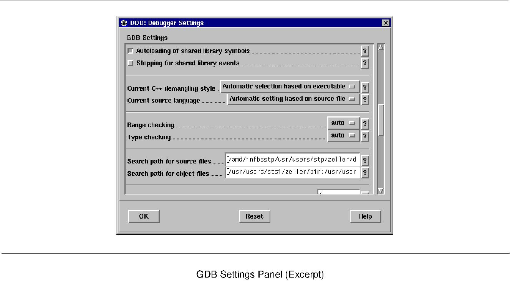
The capabilities of the settings editor depend on the capabilities of your inferior debugger. Clicking on ‘?’ gives an an explanation on the specific item; the GDB documentation gives more details.
Use ‘Edit ⇒ Undo’ to undo changes. Clicking on ‘Reset’ restores the most recently saved settings.
Some debugger settings are insensitive and cannot be changed, because doing so would endanger DDD operation. See the ‘gdbInitCommands’ and ‘dbxInitCommands’ resources for details.
All debugger settings (except source and object paths) are saved with DDD options.
Next: Running the Program, Previous: Navigating through the Code, Up: Debugging with DDD [Contents][Index]
The principal purposes of using a debugger are so that you can stop your program before it terminates; or so that, if your program runs into trouble, you can investigate and find out why.
Inside DDD, your program may stop for any of several reasons, such as a signal, a breakpoint, or reaching a new line after a DDD command such as ‘Step’. You may then examine and change variables, set new breakpoints or remove old ones, and then continue execution.
The inferior debuggers supported by DDD support two mechanisms for stopping a program upon specific events:
Next: Watchpoints, Up: Stopping the Program [Contents][Index]
Next: Deleting Breakpoints, Up: Breakpoints [Contents][Index]
You can set breakpoints by location or by name.
Breakpoints are set at a specific location in the program.
If the source line is visible, click with mouse button 1 on the left of the source line and then on the ‘Break’ button.
As a faster alternative, you can simply press mouse button 3 on the left of the source line and select the ‘Set Breakpoint’ item from the line popup menu.
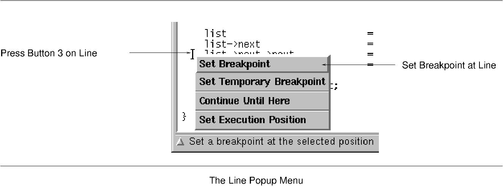
As an even faster alternative, you can simply double-click on the left of the source line to set a breakpoint.
As yet another alternative, you can select ‘Source ⇒ Breakpoints’. Click on the ‘Break’ button and enter the location.
(If you find this number of alternatives confusing, be aware that DDD users fall into three categories, which must all be supported. Novice users explore DDD and may prefer to use one single mouse button. Advanced users know how to use shortcuts and prefer popup menus. Experienced users prefer the command line interface.)
Breakpoints are indicated by a plain stop sign, or as ‘#n’, where n is the breakpoint number. A greyed out stop sign (or ‘_n_’) indicates a disabled breakpoint. A stop sign with a question mark (or ‘?n?’) indicates a conditional breakpoint or a breakpoint with an ignore count set.
If you set a breakpoint by mistake, use ‘Edit ⇒ Undo’ to delete it again.
If the function name is visible, click with mouse button 1 on the function name. The function name is then copied to the argument field. Click on the ‘Break’ button to set a breakpoint there.
As a shorter alternative, you can simply press mouse button 3 on the function name and select the ‘Break at’ item from the popup menu.
As yet another alternative, you can click on ‘Break…’ from the Breakpoint editor (invoked through ‘Source ⇒ Breakpoints’) and enter the function name.
Using GDB, you can also set a breakpoint on all functions that match a given string. ‘Break ⇒ Set Breakpoints at Regexp ()’ sets a breakpoint on all functions whose name matches the regular expression given in ‘()’. Here are some examples:
Next: Disabling Breakpoints, Previous: Setting Breakpoints, Up: Breakpoints [Contents][Index]
To delete a visible breakpoint, click with mouse button 1 on the breakpoint. The breakpoint location is copied to the argument field. Click on the ‘Clear’ button to delete all breakpoints there.
If the function name is visible, click with mouse button 1 on the function name. The function name is copied to the argument field. Click on the ‘Clear’ button to clear all breakpoints there.
As a faster alternative, you can simply press mouse button 3 on the breakpoint and select the ‘Delete Breakpoint’ item from the popup menu.
As yet another alternative, you can select the breakpoint and click on ‘Delete’ in the Breakpoint editor (invoked through ‘Source ⇒ Breakpoints’).
As an even faster alternative, you can simply double-click on the breakpoint while holding Ctrl.
Next: Temporary Breakpoints, Previous: Deleting Breakpoints, Up: Breakpoints [Contents][Index]
Rather than deleting a breakpoint or watchpoint, you might prefer to disable it. This makes the breakpoint inoperative as if it had been deleted, but remembers the information on the breakpoint so that you can enable it again later.12
To disable a breakpoint, press mouse button 3 on the breakpoint symbol and select the ‘Disable Breakpoint’ item from the breakpoint popup menu. To enable it again, select ‘Enable Breakpoint’.
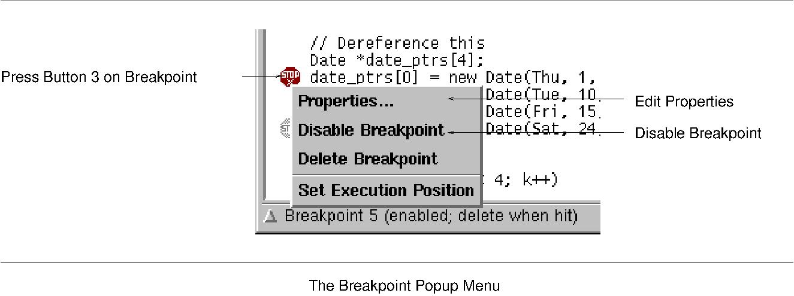
As an alternative, you can select the breakpoint and click on ‘Disable’ or ‘Enable’ in the Breakpoint editor (invoked through ‘Source ⇒ Breakpoints’.
Disabled breakpoints are indicated by a grey stop sign, or ‘_n_’, where n is the breakpoint number.
The ‘Disable Breakpoint’ item is also accessible via the ‘Clear’ button. Just press and hold mouse button 1 on the button to get a popup menu.
Next: Editing Breakpoint Properties, Previous: Disabling Breakpoints, Up: Breakpoints [Contents][Index]
A temporary breakpoint is immediately deleted as soon as it is reached.13
To set a temporary breakpoint, press mouse button 3 on the left of the source line and select the ‘Set Temporary Breakpoint’ item from the popup menu.
As a faster alternative, you can simply double-click on the left of the source line while holding Ctrl.
Temporary breakpoints are convenient to make the program continue up to a specific location: just set the temporary breakpoint at this location and continue execution.
The ‘Continue Until Here’ item from the popup menu sets a temporary breakpoint on the left of the source line and immediately continues execution. Execution stops when the temporary breakpoint is reached.
The ‘Set Temporary Breakpoint’ and ‘Continue Until Here’ items are also accessible via the ‘Break’ button. Just press and hold mouse button 1 on the button to get a popup menu.
Next: Breakpoint Conditions, Previous: Temporary Breakpoints, Up: Breakpoints [Contents][Index]
You can change all properties of a breakpoint by pressing mouse button 3 on the breakpoint symbol and select ‘Properties’ from the breakpoint popup menu. This will pop up a dialog showing the current properties of the selected breakpoint.
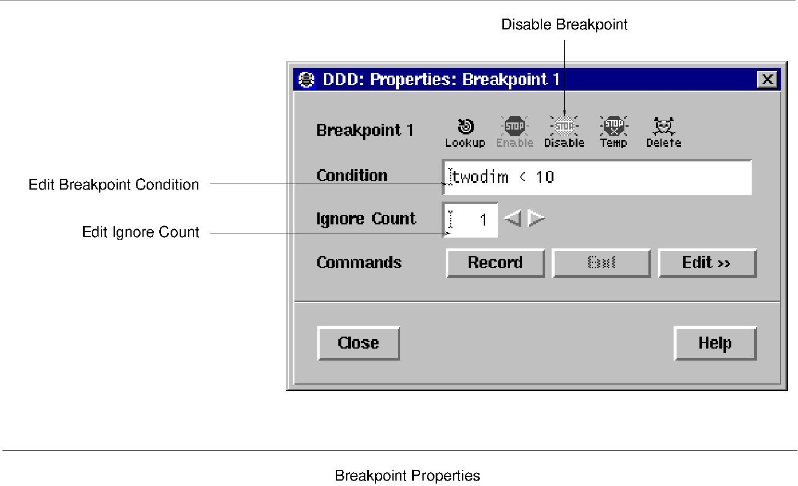
As an even faster alternative, you can simply double-click on the breakpoint.
Next: Breakpoint Ignore Counts, Previous: Editing Breakpoint Properties, Up: Breakpoints [Contents][Index]
The simplest sort of breakpoint breaks every time your program reaches a specified place. You can also specify a condition for a breakpoint. A condition is just a Boolean expression in your programming language. A breakpoint with a condition evaluates the expression each time your program reaches it, and your program stops only if the condition is true.
This is the converse of using assertions for program validation; in that situation, you want to stop when the assertion is violated–that is, when the condition is false. In C, if you want to test an assertion expressed by the condition assertion, you should set the condition ‘!assertion’ on the appropriate breakpoint.
Break conditions can have side effects, and may even call functions in your program. This can be useful, for example, to activate functions that log program progress, or to use your own print functions to format special data structures. The effects are completely predictable unless there is another enabled breakpoint at the same address. (In that case, DDD might see the other breakpoint first and stop your program without checking the condition of this one.)
Note that breakpoint commands are usually more convenient and flexible for the purpose of performing side effects when a breakpoint is reached. See Breakpoint Commands, for details.
Next: Breakpoint Commands, Previous: Breakpoint Conditions, Up: Breakpoints [Contents][Index]
A special case of a breakpoint condition is to stop only when the breakpoint has been reached a certain number of times. This is so useful that there is a special way to do it, using the ignore count of the breakpoint. Every breakpoint has an ignore count, which is an integer. Most of the time, the ignore count is zero, and therefore has no effect. But if your program reaches a breakpoint whose ignore count is positive, then instead of stopping, it just decrements the ignore count by one and continues. As a result, if the ignore count value is n, the breakpoint does not stop the next n times your program reaches it.
In the field ‘Ignore Count’ of the ‘Breakpoint Properties’ panel, you can specify the breakpoint ignore count.15
If a breakpoint has a positive ignore count and a condition, the condition is not checked. Once the ignore count reaches zero, DDD resumes checking the condition.
Next: Moving and Copying Breakpoints, Previous: Breakpoint Ignore Counts, Up: Breakpoints [Contents][Index]
You can give any breakpoint (or watchpoint) a series of DDD commands to execute when your program stops due to that breakpoint. For example, you might want to print the values of certain expressions, or enable other breakpoints.16
Using the ‘Commands’ buttons of the ‘Breakpoint Properties’ panel, you can edit commands to be executed when the breakpoint is hit.
To edit breakpoint commands, click on ‘Edit >>’ and enter the commands in the commands editor. When done with editing, click on ‘Edit <<’ to close the commands editor.
Using GDB, you can also record a command sequence to be executed. To record a command sequence, follow these steps:
Next: Looking up Breakpoints, Previous: Breakpoint Commands, Up: Breakpoints [Contents][Index]
To move a breakpoint to a different location, press mouse button 1 on the stop sign and drag it to the desired location.17 This is equivalent to deleting the breakpoint at the old location and setting a breakpoint at the new location. The new breakpoint inherits all properties of the old breakpoint, except the breakpoint number.
To copy a breakpoint to a new location, press Shift while dragging.
In GDB 6.8 and later, a breakpoint may have multiple locations. Each location is marked by a separate stop sign in the machine code window. However, these signs cannot be dragged, because GDB cannot modify individual locations within a breakpoint. Multi-location breakpoints may be distinguished from simple breakpoints by the color of the stop sign, which can be set using the resources
Ddd*multi_stop.foreground: value Ddd*multi_cond.foreground: value Ddd*multi_temp.foreground: value
Next: Editing all Breakpoints, Previous: Moving and Copying Breakpoints, Up: Breakpoints [Contents][Index]
If you wish to lookup a specific breakpoint, select ‘Source ⇒ Breakpoints ⇒ Lookup’. After selecting a breakpoint from the list and clicking the ‘Lookup’ button, the breakpoint location is displayed.
As an alternative, you can enter ‘#n’ in the argument field, where n is the breakpoint number, and click on the ‘Lookup’ button to find its definition.
Next: Hardware-Assisted Breakpoints, Previous: Looking up Breakpoints, Up: Breakpoints [Contents][Index]
To view and edit all breakpoints at once, select ‘Source ⇒ Breakpoints’. This will popup the Breakpoint Editor which displays the state of all breakpoints.
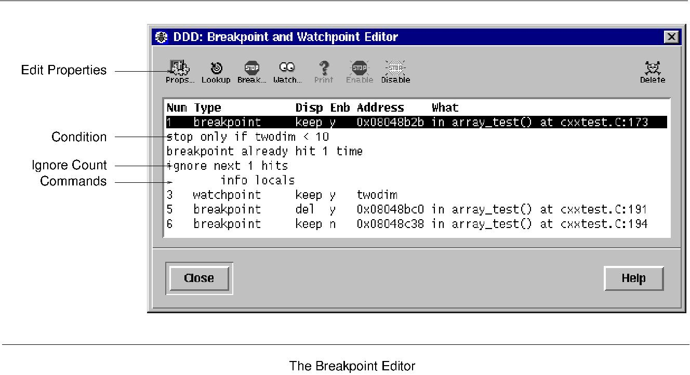
In the breakpoint editor, you can select individual breakpoints by clicking on them. Pressing Ctrl while clicking toggles the selection. To edit the properties of all selected breakpoints, click on ‘Props’.
Previous: Editing all Breakpoints, Up: Breakpoints [Contents][Index]
Using GDB, a few more commands related to breakpoints can be invoked through the debugger console:
hbreak position ¶Sets a hardware-assisted breakpoint at position. This command requires hardware support and some target hardware may not have this support. The main purpose of this is EPROM/ROM code debugging, so you can set a breakpoint at an instruction without changing the instruction.
thbreak pos ¶Set a temporary hardware-assisted breakpoint at pos.
See Setting Breakpoints in Debugging with GDB, for details.
Next: Interrupting, Previous: Breakpoints, Up: Stopping the Program [Contents][Index]
You can make the program stop as soon as some variable value changes, or when some variable is read or written. This is called setting a watchpoint on a variable.18
Watchpoints have much in common with breakpoints: in particular, you can enable and disable them. You can also set conditions, ignore counts, and commands to be executed when a watched variable changes its value.
Please note: on architectures without special watchpoint support, watchpoints currently make the program execute two orders of magnitude more slowly. This is so because the inferior debugger must interrupt the program after each machine instruction in order to examine whether the watched value has changed. However, this delay can be well worth it to catch errors when you have no clue what part of your program is the culprit.
Next: Editing Watchpoint Properties, Up: Watchpoints [Contents][Index]
If the variable name is visible, click with mouse button 1 on the variable name. The variable name is copied to the argument field. Otherwise, enter the variable name in the argument field. Click on the ‘Watch’ button to set a watchpoint there.
Using GDB and JDB 1.2, you can set different types of watchpoints. Click and hold mouse button 1 on the ‘Watch’ button to get a menu.
Next: Editing all Watchpoints, Previous: Setting Watchpoints, Up: Watchpoints [Contents][Index]
To change the properties of a watchpoint, enter the name of the watched variable in the argument field. Click and hold mouse button 1 on the ‘Watch’ button and select ‘Watchpoint Properties’.
The Watchpoint Properties panel has the same functionality as the Breakpoint Properties panel (see Editing Breakpoint Properties). As an additional feature, you can click on ‘Print’ to see the current value of a watched variable.
Next: Deleting Watchpoints, Previous: Editing Watchpoint Properties, Up: Watchpoints [Contents][Index]
To view and edit all watchpoints at once, select ‘Data ⇒ Watchpoints’. This will popup the Watchpoint Editor which displays the state of all watchpoints.
The Watchpoint Editor has the same functionality as the Breakpoint Editor (see Editing all Breakpoints). As an additional feature, you can click on ‘Print’ to see the current value of a watched variable.
Previous: Editing all Watchpoints, Up: Watchpoints [Contents][Index]
To delete a watchpoint, enter the name of the watched variable in the argument field and click the ‘Unwatch’ button.
Next: Stopping X Programs, Previous: Watchpoints, Up: Stopping the Program [Contents][Index]
If the program is already running (see Running the Program), you can interrupt
it any time by clicking the ‘Interrupt’ button or typing ESC
in a DDD window.19 Using GDB, this is
equivalent to sending a SIGINT (Interrupt) signal.
‘Interrupt’ and ESC also interrupt a running debugger command, such as printing data.
Previous: Interrupting, Up: Stopping the Program [Contents][Index]
If your program is a modal X application, DDD may interrupt it while it has grabbed the mouse pointer, making further interaction impossible—your X display will be unresponsive to any user actions.
By default, DDD will check after each interaction whether the pointer is grabbed. If the pointer is grabbed, DDD will continue the debugged program such that you can continue to use your X display.
This is how this feature works: When the program stops, DDD checks for input events such as keyboard or mouse interaction. If DDD does not receive any event within the next 5 seconds, DDD checks whether the mouse pointer is grabbed by attempting to grab and ungrab it. If this attempt fails, then DDD considers the pointer grabbed.
Unfortunately, DDD cannot determine the program that grabbed the pointer—it may be the debugged program, or another program. Consequently, you have another 10 seconds to cancel continuation before DDD continues the program automatically.
There is one situation where this fails: if you lock your X display while DDD is running, then DDD will consider a resulting pointer grab as a result of running the program—and automatically continue execution of the debugged program. Consequently, you can turn off this feature via ‘Edit ⇒ Preferences ⇒ General ⇒ Continue Automatically when Mouse Pointer is Frozen’.
Up: Stopping X Programs [Contents][Index]
The grab checks are controlled by the following resources:
If this is ‘on’ (default), DDD will check after each interaction whether the pointer is grabbed. If this is so, DDD will automatically continue execution of debugged program.
The time to wait (in ms) after a debugger command before checking for a
grabbed pointer. If DDD sees some pointer event within this
delay, the pointer cannot be grabbed and an explicit check for a grabbed
pointer is unnecessary. Default is 5000, or 5 seconds.
The action to take after having detected a grabbed mouse pointer.
This is a list of newline-separated commands. Default is
cont, meaning to continue the debuggee. Other possible
choices include kill (killing the debuggee) or quit
(exiting DDD).
The time to wait (in ms) before taking an action due to having
detected a grabbed pointer. During this delay, a working dialog pops
up telling the user about imminent execution of the grab action (see
the ‘grabAction’ resource, above). If the pointer grab is
released within this delay, the working dialog pops down and no action
is taken. This is done to exclude pointer grabs from sources other
than the debugged program (including DDD). Default is
10000, or 10 seconds.
Next: Examining Data, Previous: Stopping the Program, Up: Debugging with DDD [Contents][Index]
You may start the debugged program with its arguments, if any, in an environment of your choice. You may redirect your program’s input and output, debug an already running process, or kill a child process.
Next: Using the Execution Window, Up: Running the Program [Contents][Index]
To start execution of the debugged program, select ‘Program ⇒ Run’. You will then be prompted for the arguments to pass to your program. You can either select from a list of previously used arguments or enter own arguments in the text field. Afterwards, press the ‘Run’ button to start execution with the selected arguments.
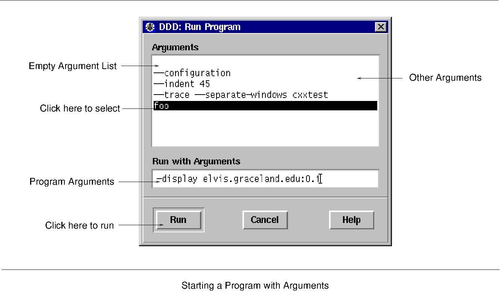
To run your program again, with the same arguments, select ‘Program
⇒ Run Again’ or press the ‘Run’ button on the command tool.
You may also enter run, followed by arguments at the debugger
prompt instead.
When you click on ‘Run’, your program begins to execute immediately. See Stopping the Program, for a discussion of how to arrange for your program to stop. Once your program has stopped, you may call functions in your program to examine data. See Examining Data, for details.
If the modification time of your symbol file has changed since the last time GDB read its symbols, GDB discards its symbol table, and reads it again. When it does this, GDB and DDD try to retain your current debugger state, such as breakpoints.
Next: Your Program’s Environment, Up: Starting Program Execution [Contents][Index]
The arguments to your program are specified by the arguments of the ‘run’ command, as composed in ‘Program ⇒ Run’.
In GDB, the arguments are passed to a shell, which expands wildcard
characters and performs redirection of I/O, and thence to your program.
Your SHELL environment variable (if it exists) specifies what
shell GDB uses. If you do not define SHELL, GDB uses
‘/bin/sh’.
If you use another inferior debugger, the exact semantics on how the arguments are interpreted depend on the inferior debugger you are using. Normally, the shell is used to pass the arguments, so that you may use normal conventions (such as wildcard expansion or variable substitution) in describing the arguments.
Next: Your Program’s Working Directory, Previous: Your Program’s Arguments, Up: Starting Program Execution [Contents][Index]
Your program normally inherits its environment from the inferior debugger, which again inherits it from DDD, which again inherits it from its parent process (typically the shell or desktop).
In GDB, you can use the commands set environment and
unset environment to change parts of the environment that
affect your program. See Your Program’s Environment in Debugging with GDB,
for details.
The following environment variables are set by DDD:
DDD ¶Set to a string indicating the DDD version. By testing
whether DDD is set, a debuggee (or inferior debugger) can
determine whether it was invoked by DDD.
TERM ¶Set to ‘dumb’, the DDD terminal type. This is set for the inferior debugger only.20
TERMCAP ¶Set to ‘’ (none), the DDD terminal capabilities.
PAGER ¶Set to ‘cat’, the preferred DDD pager.
The inferior debugger, in turn, might also set or unset some environment variables.
Next: Your Program’s Input and Output, Previous: Your Program’s Environment, Up: Starting Program Execution [Contents][Index]
Your program normally inherits its working directory from the inferior debugger, which again inherits it from DDD, which again inherits it from its parent process (typically the shell or desktop).
You can change the working directory of the inferior debugger via ‘File ⇒ Change Directory’ or via the ‘cd’ command of the inferior debugger.
Previous: Your Program’s Working Directory, Up: Starting Program Execution [Contents][Index]
By default, the program you run under DDD does input and output to the debugger console. Normally, you can redirect your program’s input and/or output using shell redirections with the arguments—that is, additional arguments like ‘< input’ or ‘> output’. You can enter these shell redirections just like other arguments (see Your Program’s Arguments).
Warning: While input and output redirection work, you cannot use pipes to pass the output of the program you are debugging to another program; if you attempt this, DDD may wind up debugging the wrong program. See Attaching to a Running Process, for an alternative.
If command output is sent to the debugger console, it is impossible for DDD to distinguish between the output of the debugged program and the output of the inferior debugger.
Program output that confuses DDD includes:
If your program outputs any of these strings, you may encounter problems with DDD mistaking them for debugger output. These problems can easily be avoided by redirecting program I/O, for instance to the separate execution window (see Using the Execution Window).
If the inferior debugger changes the default TTY settings, for
instance through a stty command in its initialization file,
DDD may also become confused. The same applies to debugged programs
which change the default TTY settings.
The behavior of the debugger console can be controlled using the following resource:
If this is ‘on’ (default), each line from the inferior debugger is output on each own, such that the final line is placed at the bottom of the debugger console. If this is ‘off’, all lines are output as a whole. This is faster, but results in a random position of the last line.
Next: Attaching to a Running Process, Previous: Starting Program Execution, Up: Running the Program [Contents][Index]
By default, input and output of your program go to the debugger console. As an alternative, DDD can also invoke an execution window, where the program terminal input and output is shown.21
To activate the execution window, select ‘Program ⇒ Run in Execution Window’.
Using the execution window has an important side effect: The output of your program no longer gets intermixed with the output of the inferior debugger. This makes it far easier for DDD to parse the debugger output correctly. See Communication with the Inferior Debugger, for details on the ‘bufferGDBOutput’ resource.
The execution window is opened automatically as soon as you start the debugged program. While the execution window is active, DDD redirects the standard input, output, and error streams of your program to the execution window. Note that the device ‘/dev/tty’ still refers to the debugger console, not the execution window.
You can override the DDD stream redirection by giving alternate redirection operations as arguments. For instance, to have your program read from file, but to write to the execution window, invoke your program with ‘< file’ as argument. Likewise, to redirect the standard error output to the debugger console, use ‘2> /dev/tty’ (assuming the inferior debugger and/or your UNIX shell support standard error redirection).
You can customize the DDD execution window and use a different TTY command. The command is set by ‘Edit ⇒ Preferences ⇒ Helpers ⇒ Execution Window’:
The command to invoke for the execution window—a TTY emulator that shows the input/output of the debugged program. A Bourne shell command to run in the separate TTY is appended to this string. The string ‘@FONT@’ is replaced by the name of the fixed width font used by DDD. A simple value is
Ddd*termCommand: xterm -fn @FONT@ -e /bin/sh -c
You can also set the terminal type:
The terminal type provided by the ‘termCommand’ resource—that is,
the value of the TERM environment variable to be passed to the
debugged program. Default: ‘xterm’.
Whether the execution window is active or not, as set by ‘Program ⇒ Run in Execution Window’, is saved using this resource:
If ‘on’, the debugged program is executed in a separate execution window. If ‘off’ (default), the debugged program is executed in the console window.
Next: Program Stops, Previous: Using the Execution Window, Up: Running the Program [Contents][Index]
If the debugged program is already running in some process, you can attach to this process (instead of starting a new one with ‘Run’).22
To attach DDD to a process, select ‘File ⇒ Attach to Process’. You can now choose from a list of processes. Then, press the ‘Attach’ button to attach to the specified process.
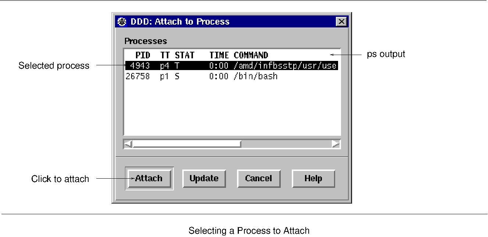
The first thing DDD does after arranging to debug the specified process is to stop it. You can examine and modify an attached process with all the DDD commands that are ordinarily available when you start processes with ‘Run’. You can insert breakpoints; you can step and continue; you can modify storage. If you would rather the process continue running, you may use ‘Continue’ after attaching DDD to the process.
When using ‘Attach to Process’, you should first use ‘Open Program’ to specify the program running in the process and load its symbol table.
When you have finished debugging the attached process, you can use the ‘File ⇒ Detach Process’ to release it from DDD control. Detaching the process continues its execution. After ‘Detach Process’, that process and DDD become completely independent once more, and you are ready to attach another process or start one with ‘Run’.
You can customize the list of processes shown by defining an alternate command to list processes. See ‘Edit ⇒ Preferences ⇒ Helpers ⇒ List Processes’; See Customizing Attaching to Processes, for details.
When attaching to a process (see Attaching to a Running Process),
DDD uses a ps command to get the list of processes. This
command is defined by the ‘psCommand’ resource.
The command to get a list of processes. Usually ps. Depending
on your system, useful alternate values include ps -ef and
ps ux. The first line of the output must either contain a
‘PID’ title, or each line must begin with a process ID.
Note that the output of this command is filtered by DDD; a process is only shown if it can be attached to. The DDD process itself as well as the process of the inferior debugger are suppressed, too.
Next: Resuming Execution, Previous: Attaching to a Running Process, Up: Running the Program [Contents][Index]
After the program has been started, it runs until one of the following happens:
DDD shows the current program status in the debugger console. The current execution position is highlighted by an arrow.
If ‘Edit ⇒ Preferences ⇒ General ⇒ Uniconify When Ready’ is set, DDD automatically deiconifies itself when the program stops. This way, you can iconify DDD during a lengthy computation and have it uniconify as soon as the program stops.
Next: Continuing at a Different Address, Previous: Program Stops, Up: Running the Program [Contents][Index]
To resume execution, at the current execution position, click on the ‘Continue’ button. Any breakpoints set at the current execution position are bypassed.
To execute just one source line, click on the ‘Step’ button. The program is executed until control reaches a different source line, which may be in a different function. Then, the program is stopped and control returns to DDD.
Warning: If you use the ‘Step’ button while control is within a function that was compiled without debugging information, execution proceeds until control reaches a function that does have debugging information. Likewise, it will not step into a function which is compiled without debugging information. To step through functions without debugging information, use the ‘Stepi’ button (see Machine Code Execution).
In GDB, the ‘Step’ button only stops at the first instruction of a source line. This prevents the multiple stops that used to occur in switch statements, for loops, etc. ‘Step’ continues to stop if a function that has debugging information is called within the line.
Also, the ‘Step’ in GDB only enters a subroutine if there is line number information for the subroutine. Otherwise it acts like the ‘Next’ button.
To continue to the next line in the current function, click on the ‘Next’ button. This is similar to ‘Step’, but any function calls appearing within the line of code are executed without stopping.
Execution stops when control reaches a different line of code at the original stack level that was executing when you clicked on ‘Next’.
To continue running until a specific location is reached, use the ‘Continue Until Here’ facility from the line popup menu. See Temporary Breakpoints, for a discussion.
To continue until a greater line in the current function is reached, click on the ‘Until’ button. This is useful to avoid single stepping through a loop more than once.
‘Until’ is like ‘Next’, except that when ‘Until’ encounters a jump, it automatically continues execution until the program counter is greater than the address of the jump.
This means that when you reach the end of a loop after single stepping though it, ‘until’ makes your program continue execution until it exits the loop. In contrast, clicking on ‘Next’ at the end of a loop simply steps back to the beginning of the loop, which forces you to step through the next iteration.
‘Until’ always stops your program if it attempts to exit the current stack frame.
‘Until’ works by means of single instruction stepping, and hence is slower than continuing until a breakpoint is reached.
To continue running until the current function returns, use the ‘Finish’ button. The returned value (if any) is printed.
Next: Examining the Stack, Previous: Resuming Execution, Up: Running the Program [Contents][Index]
Ordinarily, when you continue your program, you do so at the place where it stopped. You can instead continue at an address of your own choosing.
The most common occasion to use this feature is to back up—perhaps with more breakpoints set-over a portion of a program that has already executed, in order to examine its execution in more detail.
To set the execution position to the current location, use ‘Set Execution Position’ from the breakpoint popup menu. This item is also accessible by pressing and holding the ‘Break/Clear’ button.23
As a quicker alternative, you can also press mouse button 1 on the arrow and drag it to a different location.24
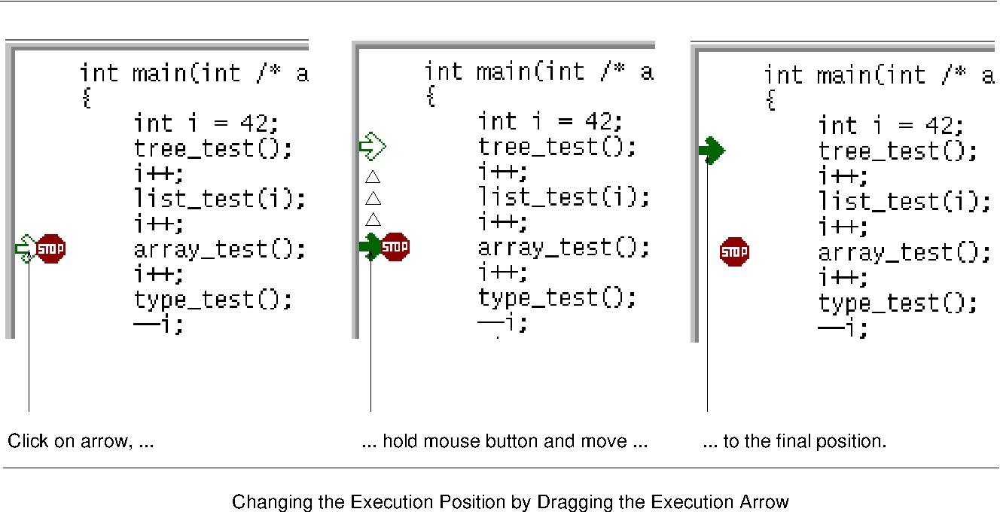
Moving the execution position does not change the current stack frame, or the stack pointer, or the contents of any memory location or any register other than the program counter.
Some inferior debuggers (notably GDB) allow you to set the new execution position into a different function from the one currently executing. This may lead to bizarre results if the two functions expect different patterns of arguments or of local variables. For this reason, moving the execution position requests confirmation if the specified line is not in the function currently executing.
After moving the execution position, click on ‘Continue’ to resume execution.
Next: “Undoing” Program Execution, Previous: Continuing at a Different Address, Up: Running the Program [Contents][Index]
When your program has stopped, the first thing you need to know is where it stopped and how it got there.
Each time your program performs a function call, information about the call is generated. That information includes the location of the call in your program, the arguments of the call, and the local variables of the function being called. The information is saved in a block of data called a stack frame. The stack frames are allocated in a region of memory called the call stack.
When your program stops, the DDD commands for examining the stack allow you to see all of this information.
One of the stack frames is selected by DDD and many DDD commands refer implicitly to the selected frame. In particular, whenever you ask DDD for the value of a variable in your program, the value is found in the selected frame. There are special DDD commands to select whichever frame you are interested in.
Next: Backtraces, Up: Examining the Stack [Contents][Index]
The call stack is divided up into contiguous pieces called stack frames, or frames for short; each frame is the data associated with one call to one function. The frame contains the arguments given to the function, the function’s local variables, and the address at which the function is executing.
When your program is started, the stack has only one frame, that of the
function main. This is called the initial frame or the
outermost frame. Each time a function is called, a new frame is
made. Each time a function returns, the frame for that function invocation
is eliminated. If a function is recursive, there can be many frames for
the same function. The frame for the function in which execution is
actually occurring is called the innermost frame. This is the most
recently created of all the stack frames that still exist.
Inside your program, stack frames are identified by their addresses. A stack frame consists of many bytes, each of which has its own address; each kind of computer has a convention for choosing one byte whose address serves as the address of the frame. Usually this address is kept in a register called the frame pointer register while execution is going on in that frame.
GDB assigns numbers to all existing stack frames, starting with zero for the innermost frame, one for the frame that called it, and so on upward. These numbers do not really exist in your program; they are assigned by GDB to give you a way of designating stack frames in GDB commands.
Next: Selecting a Frame, Previous: Stack Frames, Up: Examining the Stack [Contents][Index]
DDD provides a backtrace window showing a summary of how your program got where it is. It shows one line per frame, for many frames, starting with the currently executing frame (frame zero), followed by its caller (frame one), and on up the stack.
To enable the backtrace window, select ‘Status ⇒ Backtrace’.
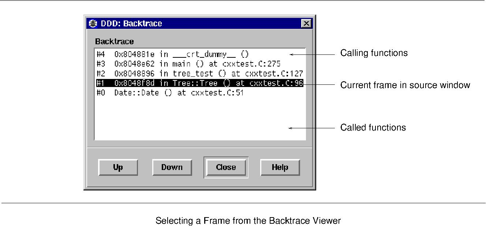
Using GDB, each line in the backtrace shows the frame number and the function name. The program counter value is also shown—unless you use the GDB command ‘set print address off’. The backtrace also shows the source file name and line number, as well as the arguments to the function. The program counter value is omitted if it is at the beginning of the code for that line number.
Previous: Backtraces, Up: Examining the Stack [Contents][Index]
Most commands for examining the stack and other data in your program work on whichever stack frame is selected at the moment. Here are the commands for selecting a stack frame.25
In the backtrace window, you can select an arbitrary frame to move from one stack frame to another. Just click on the desired frame.
The ‘Up’ button selects the function that called the current one—that is, it moves one frame up.
The ‘Down’ button selects the function that was called by the current one—that is, it moves one frame down.
You can also directly type the up and down commands at
the debugger prompt. Typing Ctrl+Up and Ctrl+Down,
respectively, will also move you through the stack.
‘Up’ and ‘Down’ actions can be undone via ‘Edit ⇒ Undo’.
Next: Examining Threads, Previous: Examining the Stack, Up: Running the Program [Contents][Index]
If you take a look at the ‘Edit ⇒ Undo’ menu item after an execution command, you’ll find that DDD offers you to undo execution commands just as other commands. Does this mean that DDD allows you to go backwards in time, undoing program execution as well as undoing any side-effects of your program?
Sorry—we must disappoint you. DDD cannot undo what your program did. (After a little bit of thought, you’ll find that this would be impossible in general.) However, DDD can do something different: it can show previously recorded states of your program.
After “undoing” an execution command (via ‘Edit ⇒ Undo’, or the ‘Undo’ button), the execution position moves back to the earlier position and displayed variables take their earlier values. Your program state is in fact unchanged, but DDD gives you a view on the earlier state as recorded by DDD.
In this so-called historic mode, most normal DDD commands that would query further information from the program are disabled, since the debugger cannot be queried for the earlier state. However, you can examine the current execution position, or the displayed variables. Using ‘Undo’ and ‘Redo’, you can move back and forward in time to examine how your program got into the present state.
To let you know that you are operating in historic mode, the execution arrow gets a dashed-line appearance (indicating a past position); variable displays also come with dashed lines. Furthermore, the status line informs you that you are seeing an earlier program state.
Here’s how historic mode works: each time your program stops, DDD collects the current execution position and the values of displayed variables. Backtrace, thread, and register information is also collected if the corresponding dialogs are open. When “undoing” an execution command, DDD updates its view from this collected state instead of querying the program.
If you want to collect this information without interrupting your
program—within a loop, for instance—you can place a breakpoint with
an associated cont command (see Breakpoint Commands).
When the breakpoint is hit, DDD will stop, collect the data, and
execute the ‘cont’ command, resuming execution. Using a later
‘Undo’, you can step back and look at every single loop iteration.
To leave historic mode, you can use ‘Redo’ until you are back in the current program state. However, any DDD command that refers to program state will also leave historic mode immediately by applying to the current program state instead. For instance, ‘Up’ leaves historic mode immediately and selects an alternate frame in the restored current program state.
If you want to see the history of a specific variable, as recorded during program stops, you can enter the DDD command
graph history name
This returns a list of all previously recorded values of the variable name, using array syntax. Note that name must have been displayed at earlier program stops in order to record values.
Next: Handling Signals, Previous: “Undoing” Program Execution, Up: Running the Program [Contents][Index]
In some operating systems, a single program may have more than one thread of execution. The precise semantics of threads differ from one operating system to another, but in general the threads of a single program are akin to multiple processes—except that they share one address space (that is, they can all examine and modify the same variables). On the other hand, each thread has its own registers and execution stack, and perhaps private memory.
For debugging purposes, DDD lets you display the list of threads currently active in your program and lets you select the current thread—the thread which is the focus of debugging. DDD shows all program information from the perspective of the current thread.26
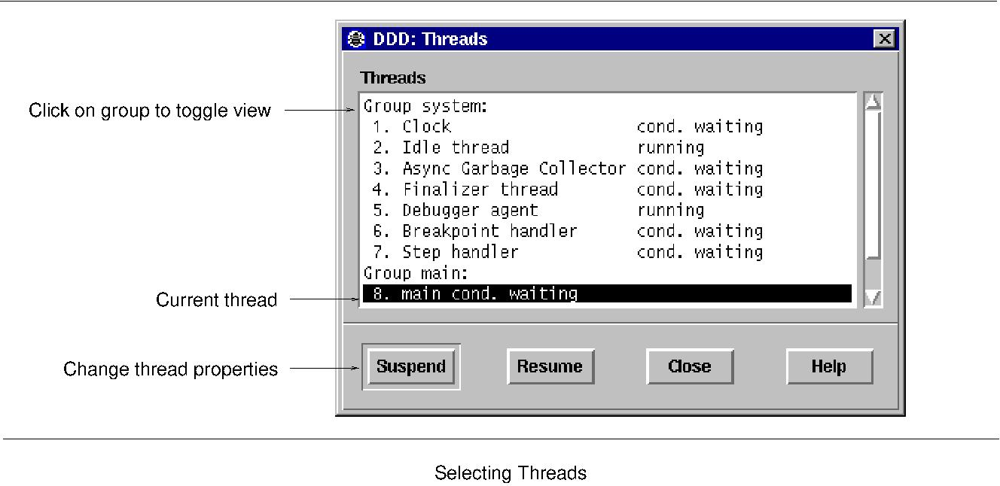
To view all currently active threads in your program, select ‘Status ⇒ Threads’. The current thread is highlighted. Select any thread to make it the current thread.
Using JDB, additional functionality is available:
For more information on threads, see the JDB and GDB documentation (see Debugging Programs with Multiple Threads in Debugging with GDB).
Next: Killing the Program, Previous: Examining Threads, Up: Running the Program [Contents][Index]
A signal is an asynchronous event that can happen in a program. The
operating system defines the possible kinds of signals, and gives each
kind a name and a number. For example, in UNIX, SIGINT is the
signal a program gets when you type an interrupt; SIGSEGV is
the signal a program gets from referencing a place in memory far away
from all the areas in use; SIGALRM occurs when the alarm clock
timer goes off (which happens only if your program has requested an
alarm).
Some signals, including SIGALRM, are a normal part of the
functioning of your program. Others, such as SIGSEGV, indicate
errors; these signals are fatal (kill your program immediately)
if the program has not specified in advance some other way to handle the
signal. SIGINT does not indicate an error in your program, but
it is normally fatal so it can carry out the purpose of the interrupt:
to kill the program.
GDB has the ability to detect any occurrence of a signal in your program. You can tell GDB in advance what to do for each kind of signal.
Normally, DDD is set up to ignore non-erroneous signals like
SIGALRM (so as not to interfere with their role in the
functioning of your program) but to stop your program immediately
whenever an error signal happens. In DDD, you can view and edit
these settings via ‘Status ⇒ Signals’.
‘Status ⇒ Signals’ pops up a panel showing all the kinds of signals and how GDB has been told to handle each one. The settings available for each signal are:
Stop ¶If set, GDB should stop your program when this signal happens. This also implies ‘Print’ being set.
Print ¶If set, GDB should print a message when this signal happens.
If unset, GDB should not mention the occurrence of the signal at all. This also implies ‘Stop’ being unset.
Pass ¶If set, GDB should allow your program to see this signal; your program can handle the signal, or else it may terminate if the signal is fatal and not handled.
If unset, GDB should not allow your program to see this signal.
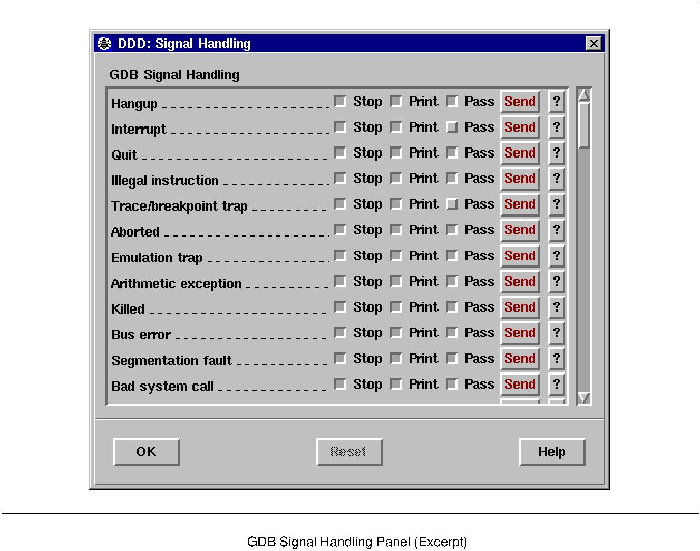
The entry ‘All Signals’ is special. Changing a setting here
affects all signals at once—except those used by the debugger,
typically SIGTRAP and SIGINT.
To undo any changes, use ‘Edit ⇒ Undo’. The ‘Reset’ button restores the saved settings.
When a signal stops your program, the signal is not visible until you continue. Your program sees the signal then, if ‘Pass’ is in effect for the signal in question at that time. In other words, after GDB reports a signal, you can change the ‘Pass’ setting in ‘Status ⇒ Signals’ to control whether your program sees that signal when you continue.
You can also cause your program to see a signal it normally would not see, or to give it any signal at any time. The ‘Send’ button will resume execution where your program stopped, but immediately give it the signal shown.
On the other hand, you can also prevent your program from seeing a signal. For example, if your program stopped due to some sort of memory reference error, you might store correct values into the erroneous variables and continue, hoping to see more execution; but your program would probably terminate immediately as a result of the fatal signal once it saw the signal. To prevent this, you can resume execution using ‘Commands ⇒ Continue Without Signal’.
Signal settings are not saved across DDD invocations, since changed signal settings are normally useful within specific projects only. Instead, signal settings are saved with the current session, using ‘File ⇒ Save Session As’.
Previous: Handling Signals, Up: Running the Program [Contents][Index]
You can kill the process of the debugged program at any time using the ‘Kill’ button.
Killing the process is useful if you wish to debug a core dump instead of a running process. GDB ignores any core dump file while your program is running.
The ‘Kill’ button is also useful if you wish to recompile and relink your program, since on many systems it is impossible to modify an executable file while it is running in a process. In this case, when you next click on ‘Run’, GDB notices that the file has changed, and reads the symbol table again (while trying to preserve your current debugger state).
Next: Machine-Level Debugging, Previous: Running the Program, Up: Debugging with DDD [Contents][Index]
DDD provides several means to examine data.
To display the value of a simple variable, move the mouse pointer on its name. After a second, a small window (called value tip) pops up showing the value of the variable pointed at. The window disappears as soon as you move the mouse pointer away from the variable. The value is also shown in the status line.
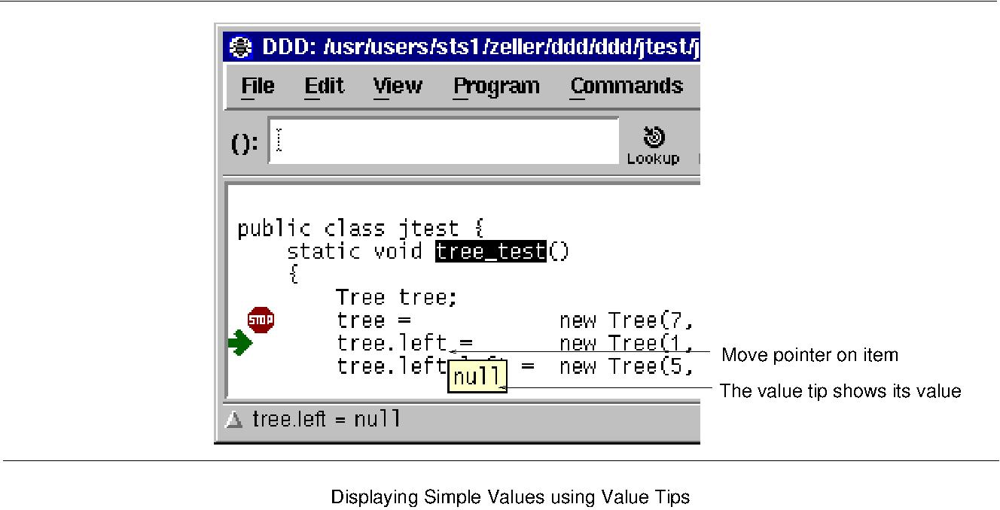
You can disable value tips via ‘Edit ⇒ Preferences ⇒ General ⇒ Automatic display of variable values as popup tips’.
You can disable displaying variable values in the status line via ‘Edit ⇒ Preferences ⇒ General ⇒ Automatic display of variable values in the status line’.
These customizations are tied to the following resources:
Whether value tips are enabled (‘on’, default) or not (‘off’). Value tips affect DDD performance and may be distracting for some experienced users.
Whether the display of variable values in the status line is enabled (‘on’, default) or not (‘off’).
You can turn off value tips via ‘Edit ⇒ Preferences ⇒ General ⇒ Automatic Display of Variable Values’.
Next: Displaying Complex Values in the Data Window, Previous: Showing Simple Values using Value Tips, Up: Examining Data [Contents][Index]
The variable value can also be printed in the debugger console, making it available for future operations. To print a variable value, select the desired variable by clicking mouse button 1 on its name. The variable name is copied to the argument field. By clicking the ‘Print’ button, the value is printed in the debugger console. The printed value is also shown in the status line.
As a shorter alternative, you can simply press mouse button 3 on the variable name and select the ‘Print’ item from the popup menu.
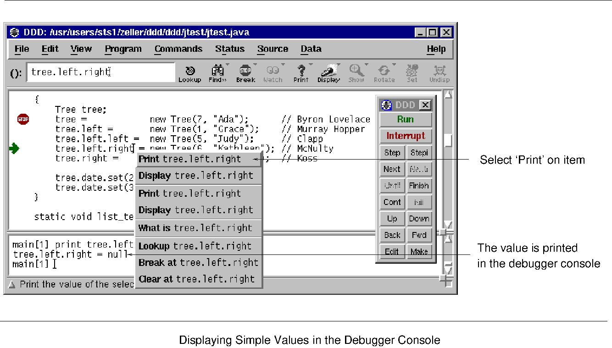
In GDB, the ‘Print’ button generates a print command, which
has several more options. See Examining Data in Debugging with GDB, for GDB-specific expressions, variables, and
output formats.
Next: Plotting Values, Previous: Printing Simple Values in the Debugger Console, Up: Examining Data [Contents][Index]
To explore complex data structures, you can display them permanently in the data window. The data window displays selected data of your program, showing complex data structures graphically. It is updated each time the program stops.
Next: Arrays, Up: Displaying Complex Values in the Data Window [Contents][Index]
This section discusses how to create, manipulate, and delete displays. The essentials are:
Next: Selecting Displays, Up: Display Basics [Contents][Index]
To create a new display showing a specific variable, select the variable by clicking mouse button 1 on its name. The variable name is copied to the argument field. By clicking the ‘Display’ button, a new display is created in the data window. The data window opens automatically as soon as you create a display.
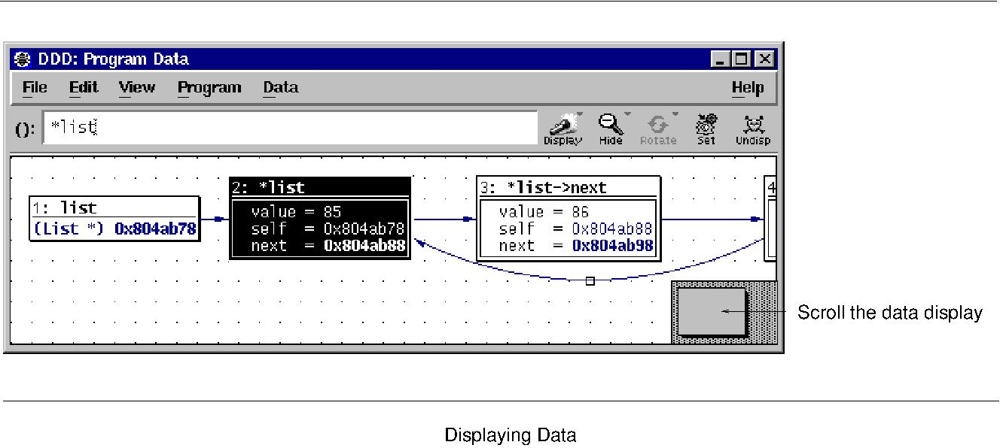
As a shorter alternative, you can simply press mouse button 3 on the variable name and select ‘Display’ from the popup menu.
As an even faster alternative, you can also double-click on the variable name.
As another alternative, you may also enter the expression to be displayed in the argument field and press the ‘Display’ button.
Finally, you may also type in a command at the debugger prompt:
graph display expr [clustered] [at (x, y)]
[dependent on display] [[now or] when in scope]
This command creates a new display showing the value of the expression expr. The optional parts have the following meaning:
clustered ¶If given, the new display is created in a cluster. See Clustering Displays, for a discussion.
at (x, y) ¶If given, the new display is created at the position (x, y). Otherwise, a default position is assigned.
dependent on display ¶If given, an edge from the display numbered or named display to the new display is created. Otherwise, no edge is created. See Displaying Dependent Values, for details.
when in scope ¶now or when in scopeIf ‘when in’ is given, the display creation is deferred until execution reaches the given scope (a function name, as in the backtrace output).
If ‘now or when in’ is given, DDD first attempts to create the display immediately. The display is deferred only if display creation fails.
If neither ‘when in’ suffix nor ‘now or when in’ suffix is given, the display is created immediately.
Next: Showing and Hiding Details, Previous: Creating Single Displays, Up: Display Basics [Contents][Index]
Each display in the data window has a title bar containing the display number and the displayed expression (the display name). Below the title, the display value is shown.
You can select single displays by clicking on them with mouse button 1.
You can extend an existing selection by pressing the Shift key while selecting. You can also toggle an existing selection by pressing the Shift key while selecting already selected displays.
Single displays may also be selected by using the arrow keys Up, Down, Left, and Right.
Multiple displays are selected by pressing and holding mouse button 1 somewhere on the window background. By moving the pointer while holding the button, a selection rectangle is shown; all displays fitting in the rectangle are selected when mouse button 1 is released.
If the Shift key is pressed while selecting, the existing selection is extended.
By double-clicking on a display title, the display itself and all connected displays are automatically selected.
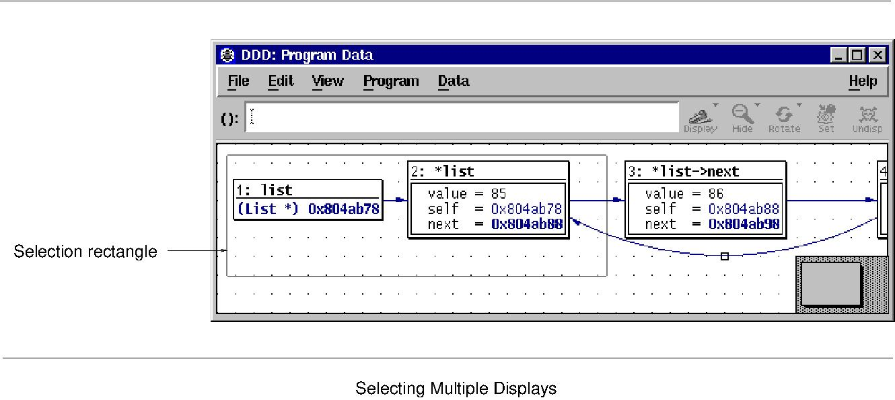
Next: Rotating Displays, Previous: Selecting Displays, Up: Display Basics [Contents][Index]
Aggregate values (i.e. records, structs, classes, and arrays) can be shown expanded, that is, displaying all details, or hidden, that is, displayed as ‘{…}’.
To show details about an aggregate, select the aggregate by clicking mouse button 1 on its name or value and click on the ‘Show’ button. Details are shown for the aggregate itself as well as for all contained sub-aggregates.
To hide details about an aggregate, select the aggregate by clicking mouse button 1 on its name or value and click on the ‘Hide’ button.
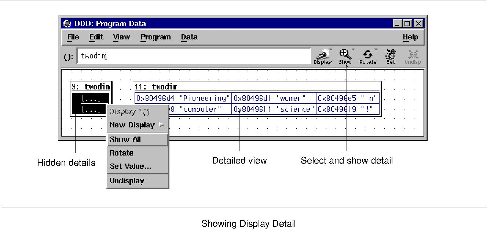
When pressing and holding mouse button 1 on the ‘Show/Hide’ button, a menu pops up with even more alternatives:
Show More () ¶Shows details of all aggregates currently hidden, but not of their sub-aggregates. You can invoke this item several times in a row to reveal more and more details of the selected aggregate.
Show Just () ¶Shows details of the selected aggregate, but hides all sub-aggregates.
Show All () ¶Shows all details of the selected aggregate and of its sub-aggregates. This item is equivalent to the ‘Show’ button.
Hide ()Hide all details of the selected aggregate. This item is equivalent to the ‘Hide’ button.
As a faster alternative, you can also press mouse button 3 on the aggregate and select the appropriate menu item.
As an even faster alternative, you can also double-click mouse button 1 on a value. If some part of the value is hidden, more details will be shown; if the entire value is shown, double-clicking will hide the value instead. This way, you can double-click on a value until you get the right amount of details.
If all details of a display are hidden, the display is called disabled; this is indicated by the string ‘(Disabled)’.
Displays can also be disabled or enabled via a DDD command, which you enter at the debugger prompt:
graph disable display displays…
disables the given displays.
graph enable display displays…
re-enables the given displays.
In both commands, displays… is either
Use ‘Edit ⇒ Undo’ to undo disabling or enabling displays.
Next: Displaying Local Variables, Previous: Showing and Hiding Details, Up: Display Basics [Contents][Index]
Arrays, structures and lists can be oriented horizontally or vertically. To change the orientation of a display, select it and then click on the ‘Rotate’ button.
As a faster alternative, you can also press mouse button 3 on the array and select ‘Rotate’ from the popup menu.
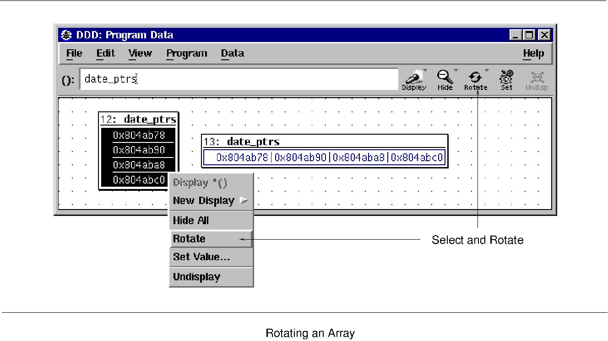
If a structure or list is oriented horizontally, DDD automatically suppresses the member names. This can be handy for saving space.
The last chosen display orientation is used for the creation of new displays. If you recently rotated an array to horizontal orientation, the next array you create will also be oriented horizontally. These settings are tied to the following resources:
How arrays are to be oriented. Possible values are ‘XmVERTICAL’ (default) and ‘XmHORIZONTAL’.
Whether to show struct member names or not. Default is ‘on’.
How structs are to be oriented. Possible values are ‘XmVERTICAL’ (default) and ‘XmHORIZONTAL’.
Next: Displaying Program Status, Previous: Rotating Displays, Up: Display Basics [Contents][Index]
You can display all local variables at once by choosing ‘Data
⇒ Display Local Variables’. When using DBX, XDB, JDB, or Perl,
this displays all local variables, including the arguments of the
current function. When using GDB or pydb, function arguments are
contained in a separate display, activated by ‘Data ⇒
Display Arguments’.
The display showing the local variables can be manipulated just like any other data display. Individual variables can be selected and dereferenced.
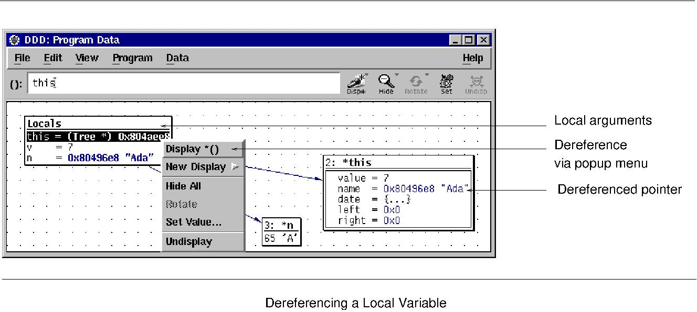
Next: Refreshing the Data Window, Previous: Displaying Local Variables, Up: Display Basics [Contents][Index]
You can create a display from the output of an arbitrary debugger command. By entering
graph display `command`
the output of command is turned into a status display updated each time the program stops.
For instance, the command
graph display `where`
creates a status display named ‘Where’ that shows the current backtrace.
If you are using GDB, DDD provides a panel from which you can choose useful status displays. Select ‘Data ⇒ Status Displays’ and pick your choice from the list.
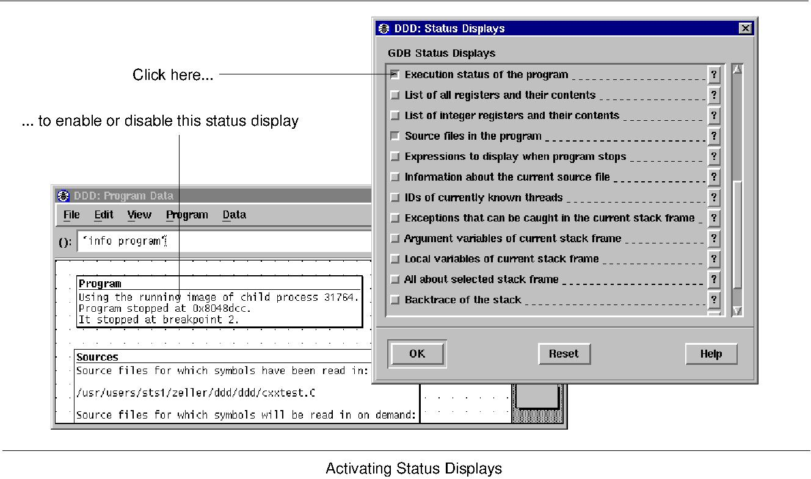
Refreshing status displays at each stop takes time; you should delete status displays as soon as you don’t need them any more.
Next: Display Placement, Previous: Displaying Program Status, Up: Display Basics [Contents][Index]
The data window is automatically updated or refreshed each time the program stops. Values that have changed since the last refresh are highlighted.
However, there may be situations where you should refresh the data window explicitly. This is especially the case whenever you changed debugger settings that could affect the data format, and want the data window to reflect these settings.
You can refresh the data window by selecting ‘Data ⇒ Refresh Displays’.
As an alternative, you can press mouse button 3 on the background of the data window and select the ‘Refresh Displays’ item.
Typing
graph refresh
at the debugger prompt has the same effect.
Next: Clustering Displays, Previous: Refreshing the Data Window, Up: Display Basics [Contents][Index]
By default, displays are created from top to bottom—that is, each new display is placed below the downmost one. You can change this setting to left to right via ‘Edit ⇒ Preferences ⇒ Data ⇒ Placement ⇒ Left to right’.
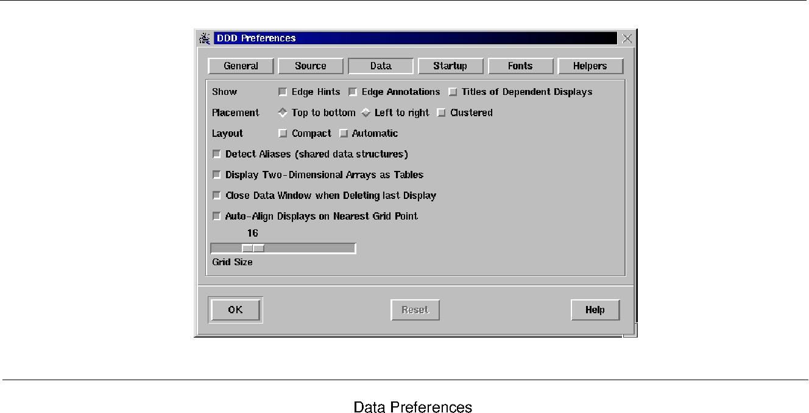
This setting is tied to the following resource:
If this is ‘XmVERTICAL’ (default), DDD places each new independent display below the downmost one. If this is ‘XmHORIZONTAL’, each new independent display is placed on the right of the rightmost one.
Note that changing the placement of new displays also affects the placement of dependent displays (see Displaying Dependent Values). In top to bottom mode, dependent displays are created on the right of the originating display; in left to right mode, dependent displays are created on the below the originating display.
Next: Creating Multiple Displays, Previous: Display Placement, Up: Display Basics [Contents][Index]
If you examine several variables at once, having a separate display for each of them uses a lot of screen space. This is why DDD supports clusters. A cluster merges several logical data displays into one physical display, saving screen space.
There are two ways to create clusters:
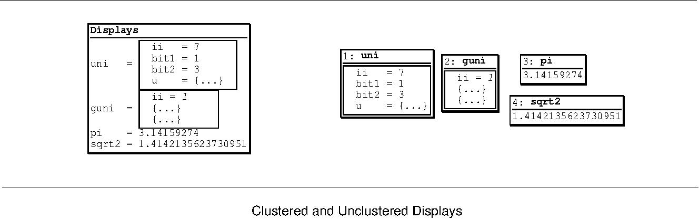
Displays in a cluster can be selected and manipulated like parts of an ordinary display; in particular, you can show and hide details, or dereference pointers. However, edges leading to clustered displays can not be shown, and you must either select one or all clustered displays.
Disabling a cluster is called unclustering, and again, there are two ways of doing it:
Next: Editing all Displays, Previous: Clustering Displays, Up: Display Basics [Contents][Index]
To display several successive objects of the same type (a section of an array, or an array of dynamically determined size), you can use the notation ‘from..to’ in display expressions.
from and to are numbers that denote the first and last expression to display. Thus,
graph display argv[0..9]
creates 10 new displays for ‘argv[0]’, ‘argv[1]’, …, ‘argv[9]’. The displays are clustered automatically (see Clustering Displays), such that you can easily handle the set just like an array.
The ‘from..to’ notation can also be used multiple times. For instance,
graph display 1..5 * 1..5
creates a handy small multiplication table.
The ‘from..to’ notation creates several displays, which takes time to create and update. If you want to display only a part of an array, array slices are a more efficient way. See Array Slices, for a discussion.
Next: Deleting Displays, Previous: Creating Multiple Displays, Up: Display Basics [Contents][Index]
You can view the state of all displays by selecting ‘Data ⇒ Displays’. This invokes the Display Editor.
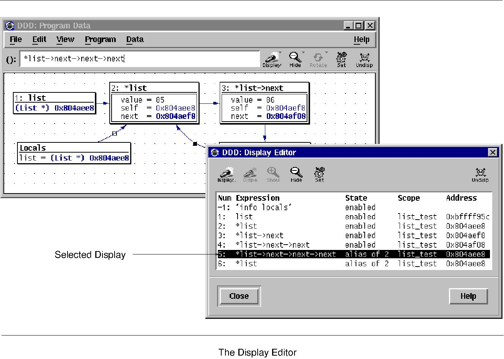
The Display Editor shows the properties of each display, using the following fields:
The display number.
The displayed expression.
One of
Normal state.
Disabled; all details are hidden. Use ‘Show’ to enable.
Out of scope.
Will be created as soon as its ‘Scope’ is reached (see Creating Single Displays).
Part of a cluster (see Clustering Displays). Use ‘Undisp ⇒ Uncluster’ to uncluster.
A suppressed alias of display display (see Shared Structures).
The scope in which the display was created. For deferred displays, this is the scope in which the display will be created.
The address of the displayed expression. Used for resolving aliases (see Shared Structures).
Previous: Editing all Displays, Up: Display Basics [Contents][Index]
To delete a single display, select its title or value and click on the ‘Undisp’ button. As an alternative, you can also press mouse button 3 on the display and select the ‘Undisplay’ item.
When a display is deleted, its immediate ancestors and descendants are automatically selected, so that you can easily delete entire graphs.
If you have selected only part of a display, clicking on the ‘Undisp’ button allows you to suppress this part—by applying the Suppress Values theme on the part. You’ll be asked for confirmation first. See Using Data Themes, for details.
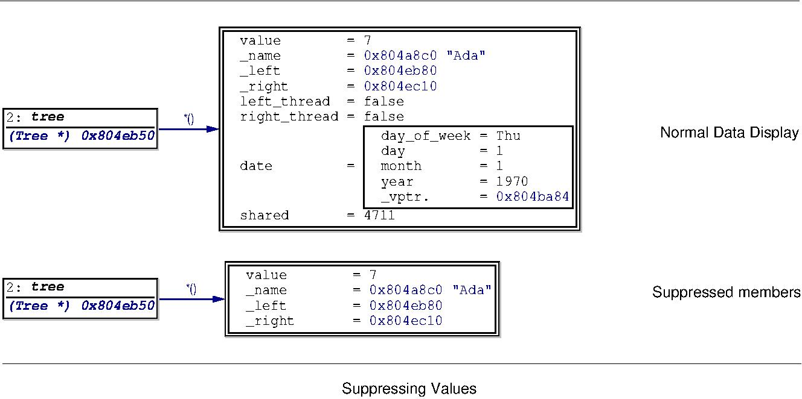
To delete several displays at once, use the ‘Undisp’ button in the Display Editor (invoked via ‘Data ⇒ Displays’). Select any number of display items in the usual way and delete them by pressing ‘Undisp’.
As an alternative, you can also use a DDD command:
graph undisplay displays…
Here, displays… is either
If you are using stacked windows, deleting the last display from the data window also automatically closes the data window. (You can change this via ‘Edit ⇒ Preferences ⇒ Data ⇒ Close data window when deleting last display’.)
If you deleted a display by mistake, use ‘Edit ⇒ Undo’ to re-create it.
Finally, you can also cut, copy, and paste displays using the ‘Cut’, ‘Copy’, and ‘Paste’ items from the ‘Edit’ menu. The clipboard holds the commands used to create the displays; ‘Paste’ inserts the display commands in the debugger console. This allows you to save displays for later usage or to copy displays across multiple DDD instances.
Next: Assignment to Variables, Previous: Display Basics, Up: Displaying Complex Values in the Data Window [Contents][Index]
DDD has some special features that facilitate handling of arrays.
Next: Repeated Values, Up: Arrays [Contents][Index]
It is often useful to print out several successive objects of the same type in memory; a slice (section) of an array, or an array of dynamically determined size for which only a pointer exists in the program.
Using DDD, you can display slices using the ‘from..to’ notation (see Creating Multiple Displays). But this requires that you already know from and to; it is also inefficient to create several single displays. If you use GDB, you have yet another alternative.
Using GDB, you can display successive objects by referring to a contiguous span of memory as an artificial array, using the binary operator ‘@’. The left operand of ‘@’ should be the first element of the desired array and be an individual object. The right operand should be the desired length of the array. The result is an array value whose elements are all of the type of the left argument. The first element is actually the left argument; the second element comes from bytes of memory immediately following those that hold the first element, and so on.
Here is an example. If a program says
int *array = (int *) malloc (len * sizeof (int));
you can print the contents of array with
print array[0]@len
and display the contents with
graph display array[0]@len
The general form of displaying an array slice is thus
graph display array[first]@nelems
where array is the name of the array to display, first is the index of the first element, and nelems is the number of elements to display.
The left operand of ‘@’ must reside in memory. Array values made with ‘@’ in this way behave just like other arrays in terms of subscripting, and are coerced to pointers when used in expressions.
Next: Arrays as Tables, Previous: Array Slices, Up: Arrays [Contents][Index]
Using GDB, an array value that is repeated 10 or more times is displayed only once. The value is shown with a ‘<nx>’ postfix added, where n is the number of times the value is repeated. Thus, the display ‘0x0 <30x>’ stands for 30 array elements, each with the value ‘0x0’. This saves a lot of display space, especially with homogeneous arrays.
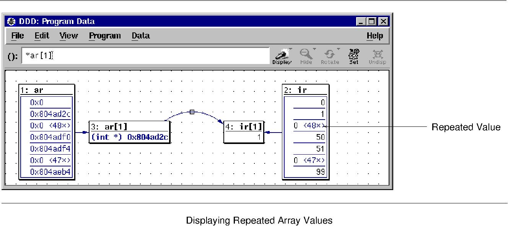
The default GDB threshold for repeated array values is 10. You can
change it via ‘Edit ⇒ GDB Settings ⇒ Threshold for
repeated print elements’. Setting the threshold to 0 will cause
GDB (and DDD) to display each array element individually. Be
sure to refresh the data window via ‘Data ⇒ Refresh
Displays’ after a change in GDB settings.
You can also configure DDD to display each array element individually:
GDB can print repeated array elements as ‘value <repeated n times>’. If ‘expandRepeatedValues’ is ‘on’, DDD will display n instances of value instead. If ‘expandRepeatedValues’ is ‘off’ (default), DDD will display value with ‘<nx>’ appended to indicate the repetition.
Previous: Repeated Values, Up: Arrays [Contents][Index]
By default, DDD lays out two-dimensional arrays as tables, such that all array elements are aligned with each other.27 To disable this feature, unset ‘Edit ⇒ Preferences ⇒ Data ⇒ Display Two-Dimensional Arrays as Tables’. This is tied to the following resource:
If ‘on’ (default), DDD lays out two-dimensional arrays as tables, such that all array elements are aligned with each other. If ‘off’, DDD treats a two-dimensional array as an array of one-dimensional arrays, each aligned on its own.
Next: Examining Structures, Previous: Arrays, Up: Displaying Complex Values in the Data Window [Contents][Index]
During program execution, you can change the values of arbitrary variables.28
To change the value of a variable, enter its name in ‘()’—for instance, by selecting an occurrence or a display. Then, click on the ‘Set’ button. In a dialog, you can edit the variable value at will; clicking the ‘OK’ or ‘Apply’ button commits your change and assigns the new value to the variable.
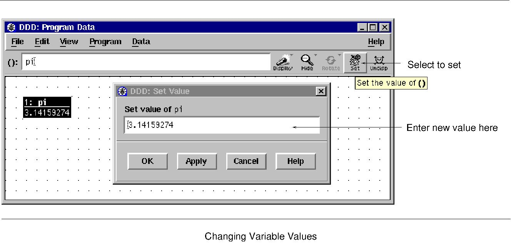
To change a displayed value, you can also select ‘Set Value’ menu from the data popup menu,
If you made a mistake, you can use ‘Edit ⇒ Undo’ to re-set the variable to its previous value.
Next: Customizing Displays, Previous: Assignment to Variables, Up: Displaying Complex Values in the Data Window [Contents][Index]
Besides displaying simple values, DDD can also visualize the Dependencies between values—especially pointers and other references that make up complex data structures.
Next: Dereferencing Pointers, Up: Examining Structures [Contents][Index]
Dependent displays are created from an existing display. The dependency is indicated by an edge leading from the originating display to the dependent display.
To create a dependent display, select the originating display or display part and enter the dependent expression in the ‘():’ argument field. Then click on the ‘Display’ button.
Using dependent displays, you can investigate the data structure of a tree for example and lay it out according to your intuitive image of the tree data structure.
By default, DDD does not recognize shared data structures (i.e. a data object referenced by multiple other data objects). See Shared Structures, for details on how to examine such structures.
Next: Shared Structures, Previous: Displaying Dependent Values, Up: Examining Structures [Contents][Index]
There are special shortcuts for creating dependent displays showing the value of a dereferenced pointer. This allows for rapid examination of pointer-based data structures.
To dereference a pointer, select the originating pointer value or name and click on the ‘Disp *’ button. A new display showing the dereferenced pointer value is created.
As a faster alternative, you can also press mouse button 3 on the originating pointer value or name and select the ‘Display *’ menu item.
As an even faster alternative, you can also double-click mouse button 1 on the originating pointer value or name. If you press Ctrl while double-clicking, the display will be dereferenced in place–that is, it will be replaced by the dereferenced display.
The ‘Display *()’ function is also accessible by pressing and holding the ‘Display’ button.
Previous: Shared Structures, Up: Examining Structures [Contents][Index]
DDD maintains a shortcut menu of frequently used display expressions. This menu is activated
By default, the shortcut menu contains frequently used base conversions.
The ‘Other’ entry in the shortcut menu lets you create a new display that extends the shortcut menu.
As an example, assume you have selected a display named ‘date_ptr’. Selecting ‘Display ⇒ Other’ pops up a dialog that allows you to enter a new expression to be displayed—for instance, you can cast the display ‘date_ptr’ to a new display ‘(char *)date_ptr’. If the ‘Include in ‘New Display’ Menu’ toggle was activated, the shortcut menu will then contain a new entry ‘Display (char *)()’ that will cast any selected display display to ‘(char *)display’. Such shortcuts can save you a lot of time when examining complex data structures.
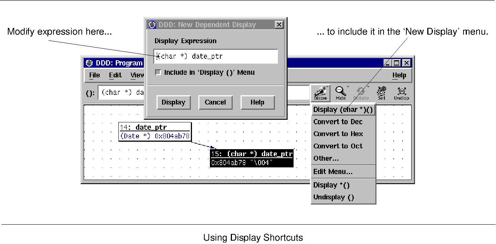
You can edit the contents of the ‘New Display’ menu by selecting its ‘Edit Menu’ item. This pops up the Shortcut Editor containing all shortcut expressions, which you can edit at leisure. Each line contains the expression for exactly one menu item. Clicking on ‘Apply’ re-creates the ‘New Display’ menu from the text. If the text is empty, the ‘New Display’ menu will be empty, too.
DDD also allows you to specify individual labels for user-defined buttons. You can write such a label after the expression, separated by ‘//’. This feature is used in the default contents of the GDB ‘New Display’ menu, where each of the base conversions has a label:
/t () // Convert to Bin /d () // Convert to Dec /x () // Convert to Hex /o () // Convert to Oct
Feel free to add other conversions here. DDD supports up to 20 ‘New Display’ menu items.
The shortcut menu is controlled by the following resources:
A newline-separated list of display expressions to be included in the ‘New Display’ menu for DBX.
If a line contains a label delimiter29, the string before the delimiter is used as expression, and the string after the delimiter is used as label. Otherwise, the label is ‘Display expression’. Upon activation, the string ‘()’ in expression is replaced by the name of the currently selected display.
A newline-separated list of display expressions to be included in the ‘New Display’ menu for GDB. See the description of ‘dbxDisplayShortcuts’, above.
A newline-separated list of display expressions to be included in the ‘New Display’ menu for JDB. See the description of ‘dbxDisplayShortcuts’, above.
A newline-separated list of display expressions to be included in the ‘New Display’ menu for Perl. See the description of ‘dbxDisplayShortcuts’, above.
A newline-separated list of display expressions to be included in the ‘New Display’ menu for Bash. See the description of ‘dbxDisplayShortcuts’, above.
A newline-separated list of display expressions to be included in the
‘New Display’ menu for pydb. See the description of
‘dbxDisplayShortcuts’, above.
A newline-separated list of display expressions to be included in the ‘New Display’ menu for XDB. See the description of ‘dbxDisplayShortcuts’, above.
Next: Layouting the Graph, Previous: Examining Structures, Up: Displaying Complex Values in the Data Window [Contents][Index]
DDD provides a simple method to customize displays. DDD comes with a number of visual modifiers, called data themes.
Each theme modifies a particular aspect of a data display. It can be applied to individual displays or to a number of displays. The themes installed with DDD include:
If enabled, display titles in a smaller font.
Apply this theme to display values in a smaller font.
If enabled, display values in a tiny font.
This could be combined with a pattern like *\[*\] to make
all array members tiny.
Apply this theme to display values in a tiny font.
If enabled, the given value will be suppressed. This should be
combined with a pattern like *->X to suppress all members named
‘X’. Apply this theme to display values not at all.
Use this with a self-defined button
associated with the command graph apply red.vsl "()"
If enabled, show nil pointers in red.
Use this with a self-defined button associated with the command
graph apply green.vsl "()".
To use this theme, set up some data buttons like this:
Ddd*dataButtons: \ graph display ($eflags & 1) != 0 // c\n\ graph display ($eflags & 64) != 0 // z\n\ graph display ($eflags & 128) != 0 // s\n\ graph display ($eflags & 1024) != 0 // d\n\ graph display ($eflags & 2048) != 0 // o\n\ graph display $eax & 255 // al\n\ graph display $eax >> 8 & 255 // ah\n\ graph display $eax & 65535 // ax\n\ graph display $ebx & 255 // bl\n\ graph display $ebx >> 8 & 255 // bh\n\ graph display $ebx & 65535 // bx\n\ graph display $ecx & 255 // cl\n\ graph display $ecx >> 8 & 255 // ch\n\ graph display $ecx & 65535 // cx\n\ graph display $edx & 255 // dl\n\ graph display $edx >> 8 & 255 // dh\n\ graph display $edx & 65535 // dx
Whenever the these displays is shown, the title will be replaced by a more intuitive title like “carry”, or “zero” for one of the flag bits and “al” “ax”, etc. for one of the registers.
Each of these themes can be applied for specific displays.
To apply a theme on a display,
For instance, to display the variable s in a tiny font, click
mouse button 3 on the display of s, and select ‘Theme
⇒ Tiny Values ⇒ Apply’.
To unapply a theme, just click on ‘Undo’ (if you just applied it) or repeat the sequence as above.
Next: Editing Themes, Previous: Using Data Themes, Up: Customizing Displays [Contents][Index]
Whenever you want to apply a theme on a struct member or an array element, you will be asked whether to
Suppose, for instance, that you don’t want to see ‘vptr’ members anymore. Then you’d apply the theme Suppress Values on all similar values.
On the other hand, if you want to highlight one single value only, you’d apply the theme Red Background on only one single value.
If you find this confirmation annoying, you can define a command button which directly applies the theme. See Defining Commands, for details on defining commands.
Applying and unapplying themes is associated with the following commands:
graph apply theme name pattern
applies the theme name on pattern.
graph unapply theme name pattern
unapplies the theme name on pattern.
graph toggle theme name pattern
applies the theme name on pattern if it was not already applied, and unapplies it otherwise.
Next: Writing Data Themes, Previous: Applying Data Themes to Several Values, Up: Customizing Displays [Contents][Index]
Each theme can be globally activated or not. If a theme is activated, it is applied to all expressions that match its pattern.
Normally, these patterns are automatically maintained by simply selecting the themes for the individual displays. However, you can also edit patterns directly.
Patterns are separated by ‘;’ and contain shell-like metacharacters:
To edit the set of themes, invoke ‘Data ⇒ Themes’.
To apply changes you made to the themes, click on ‘Apply’. To revert the themes to the last saved, click on ‘Reset’.
Next: Display Resources, Previous: Editing Themes, Up: Customizing Displays [Contents][Index]
You can write your own data themes, customizing the display to match your need. See Writing DDD Themes, for details.
Next: VSL Resources, Previous: Writing Data Themes, Up: Customizing Displays [Contents][Index]
You can use these resources to control display appearance:
If this is ‘on’ (default) and DDD is in stacked window mode, deleting the last display automatically closes the data window. If this is ‘off’, the data window stays open even after deleting the last display.
If some display d changes size and this resource is ‘on’ (default), DDD assigns new positions to displays below and on the right of d such that the distance between displays remains constant. If this is ‘off’, other displays are not rearranged.
If ‘on’, new independent data displays will automatically be clustered. Default is ‘off’, meaning to leave new displays unclustered.
If some display gets out of scope and this resource is ‘on’ (default), DDD removes it from the data display. If this is ‘off’, it is simply disabled.
Whether to assign titles to base (independent) displays or not. Default is ‘on’.
Whether to assign titles to dependent displays or not. Default is ‘off’.
The theme to apply when selecting ‘Undisp’ on a data value. Default is suppress.vsl.
A newline-separated list of themes. Each theme has the format name, tabulator character, pattern.
Previous: Display Resources, Up: Customizing Displays [Contents][Index]
The following resources control the VSL interpreter:
A string with additional VSL definitions that are appended to the builtin VSL library. This resource is prepended to the ‘vslDefs’ resource below and set in the DDD application defaults file; don’t change it.
A string with additional VSL definitions that are appended to the builtin VSL library. The default value is an empty string. This resource can be used to override specific VSL definitions that affect the data display. The preferred method, though, is to write a specific data theme (see Writing Data Themes).
The VSL library to use. ‘builtin’ (default) means to use the built-in library, any other value is used as file name.
A colon-separated list of directories to search for VSL include files. The following directory names are special:
Default is ‘user_themes:ddd_themes:.’, which means that DDD first searches your theme directory, followed by the system directory and the current directory.
If your DDD source distribution is installed in /opt/src, you can use the following settings to read the VSL library from /home/joe/ddd.vsl:
Ddd*vslLibrary: /home/joe/ddd.vsl Ddd*vslPath: user_themes:.:/opt/src/ddd/ddd:/opt/src/ddd/vsllib
VSL include files referenced by /home/joe/ddd.vsl are searched first in the current directory ., then in your theme directory, then in /opt/src/ddd/ddd/, and then in /opt/src/ddd/vsllib/.
Instead of supplying another VSL library, it is often easier to specify some minor changes to the built-in library (see Writing Data Themes).
Next: Printing the Graph, Previous: Customizing Displays, Up: Displaying Complex Values in the Data Window [Contents][Index]
If you have several displays at once, you may wish to arrange them according to your personal preferences. This section tells you how you can do this.
Next: Scrolling Data, Up: Layouting the Graph [Contents][Index]
From time to time, you may wish to move displays at another place in the data window. You can move a single display by pressing and holding mouse button 1 on the display title. Moving the pointer while holding the button causes all selected displays to move along with the pointer.
Edge hints can be selected and moved around like other displays. If an arc goes through the edge hint, you can change the shape of the arc by moving the edge hint around.
For fine-grain movements, selected displays may also be moved using the arrow keys. Pressing Shift and an arrow key moves displays by single pixels. Pressing Ctrl and arrow keys moves displays by grid positions.
Next: Aligning Displays, Previous: Moving Displays, Up: Layouting the Graph [Contents][Index]
If the data window becomes too small to hold all displays, scroll bars are created. If your DDD is set up to use panners instead, a panner is created in the lower right edge. When the panner is moved around, the window view follows the position of the panner.
To change from scroll bars to panners, use ‘Edit ⇒ Startup ⇒ Data Scrolling’ and choose either ‘Panner’ or ‘Scrollbars’.
This setting is tied to the following resource:
The control to scroll the graph.
See DDD Options, for the --scrolled-graph-editor and --panned-graph-editor options.
Next: Automatic Layout, Previous: Scrolling Data, Up: Layouting the Graph [Contents][Index]
You can align all displays on the nearest grid position by selecting ‘Data ⇒ Align on Grid’. This is useful for keeping edges strictly horizontal or vertical.
You can enforce alignment by selecting ‘Edit ⇒ Preferences ⇒ Data ⇒ Auto-align Displays on Nearest Grid Point’. If this feature is enabled, displays can be moved on grid positions only.
Next: Rotating the Graph, Previous: Aligning Displays, Up: Layouting the Graph [Contents][Index]
You can layout the entire graph as a tree by selecting ‘Data ⇒ Layout Graph’. The layout direction is determined from the display placement (see Display Placement) and from the last rotation (see Rotating the Graph).
Layouting the graph may introduce edge hints; that is, edges are no more straight lines, but lead to an edge hint and from there to their destination. Edge hints can be moved around like arbitrary displays.
To enable a more compact layout, you can set the ‘Edit ⇒ Preferences ⇒ Data ⇒ Compact Layout’ option. This realizes an alternate layout algorithm, where successors are placed next to their parents. This algorithm is suitable for homogeneous data structures only.
You can enforce layout by setting ‘Edit ⇒ Preferences ⇒ Data ⇒ Automatic Layout’. If automatic layout is enabled, the graph is layouted after each change.
Previous: Automatic Layout, Up: Layouting the Graph [Contents][Index]
You can rotate the entire graph clockwise by 90 degrees by selecting ‘Data ⇒ Rotate Graph’. You may need to layout the graph after rotating it; See Automatic Layout, for details.
Previous: Layouting the Graph, Up: Displaying Complex Values in the Data Window [Contents][Index]
DDD allows for printing the graph picture on PostScript printers or into files. This is useful for documenting program states.
To print the graph on a PostScript printer, select ‘File ⇒ Print Graph’. Enter the printing command in the ‘Print Command’ field. Click on the ‘OK’ or the ‘Apply’ button to start printing.
As an alternative, you may also print the graph in a file. Click on the ‘File’ button and enter the file name in the ‘File Name’ field. Click on the ‘Print’ button to create the file.
When the graph is printed in a file, two formats are available:
xfig
graphic editor, or for conversion into other formats (among others,
IBMGL, TeX, PIC), using the transfig or
fig2dev programs.
Please note the following caveats related to printing graphs:
These settings are tied to the following resources:
The command to print a PostScript file. Usually ‘lp’ or ‘lpr’.
The paper size used for printing, in format ‘width x height’. The default is ISO A4 format, or ‘210mm x 297mm’.
Next: Examining Memory, Previous: Displaying Complex Values in the Data Window, Up: Examining Data [Contents][Index]
If you have huge amounts of numerical data to examine, a picture often says more than a thousand numbers. Therefore, DDD allows you to draw numerical values in nice 2-D and 3-D plots.
Next: Changing the Plot Appearance, Up: Plotting Values [Contents][Index]
Basically, DDD can plot two types of numerical values:
To plot a fixed-size array, select its name by clicking mouse button 1 on an occurrence. The array name is copied to the argument field. By clicking the ‘Plot’ button, a new display is created in the data window, followed by a new top-level window containing the value plot.
To plot a dynamically sized array, you must use an array slice (see Array Slices). In the argument field, enter
array[first]@nelems
where array is the name of the array to display, first is the index of the first element, and nelems is the number of elements to display. Then, click on ‘Plot’ to start the plot.
To plot a value, you can also enter a command at the debugger prompt:
graph plot expr
works like ‘graph display expr’ (and takes the same arguments; see Creating Single Displays), but the value is additionally shown in the plot window.
Each time the value changes during program execution, the plot is updated to reflect the current values. The plot window remains active until you close it (via ‘File ⇒ Close’) or until the associated display is deleted.
Next: Plotting Scalars and Composites, Previous: Plotting Arrays, Up: Plotting Values [Contents][Index]
The actual drawing is not done by DDD itself. Instead,
DDD relies on an external gnuplot program to create the
drawing.
DDD adds a menu bar to the Gnuplot plot window that lets you influence the appearance of the plot:
In a 3-D plot, you can use the scroll bars to change your view position. The horizontal scroll bar rotates the plot around the z axis, that is, to the left and right. The vertical scroll bar rotates the plot around the y axis, that is, up and down.
You can also resize the plot window as desired.
Next: Plotting Display Histories, Previous: Changing the Plot Appearance, Up: Plotting Values [Contents][Index]
Besides plotting arrays, DDD also allows you to plot scalars (simple numerical values). This works just like plotting arrays—you select the numerical variable, click on ‘Plot’, and here comes the plot. However, plotting a scalar is not very exciting. A plot that contains nothing but a scalar simply draws the scalar’s value as a y constant—that is, a horizontal line.
So why care about scalars at all? DDD allows you to combine multiple values into one plot. The basic idea is: if you want to plot something that is neither an array nor a scalar, DDD takes all numerical sub-values it can find and plots them all together in one window. For instance, you can plot all local variables by selecting ‘Data ⇒ Display Local Variables’, followed by ‘Plot’. This will create a plot containing all numerical values as found in the current local variables. Likewise, you can plot all numeric members contained in a structure by selecting it, followed by ‘Plot’.
If you want more control about what to include in a plot and what not, you can use display clusters (see Clustering Displays). A common scenario is to plot a one-dimensional array together with the current index position. This is done in three steps:
Scalars that are displayed together with arrays can be displayed either as vertical lines or horizontal lines. By default, scalars are plotted as horizontal lines. However, if a scalar is a valid index for an array that was previously plotted, it is shown as a vertical line. You can change this initial orientation by selecting the scalar display, followed by ‘Rotate’.
Next: Printing Plots, Previous: Plotting Scalars and Composites, Up: Plotting Values [Contents][Index]
At each program stop, DDD records the values of all displayed variables, such that you can “undo” program execution (see “Undoing” Program Execution). These display histories can be plotted, too. The menu item ‘Plot ⇒ Plot history of ()’ creates a plot that shows all previously recorded values of the selected display.
Next: Entering Plotting Commands, Previous: Plotting Display Histories, Up: Plotting Values [Contents][Index]
If you want to print the plot, select ‘File ⇒ Print Plot’. This pops up the DDD printing dialog, set up for printing plots. Just as when printing graphs, you have the choice between printing to a printer or a file and setting up appropriate options.
The actual printing is also performed by Gnuplot, using the appropriate driver. Please note the following caveats related to printing:
Next: Exporting Plot Data, Previous: Printing Plots, Up: Plotting Values [Contents][Index]
Via ‘File ⇒ Command’, you can enter Gnuplot commands directly. Each command entered at the ‘gnuplot>’ prompt is passed to Gnuplot, followed by a Gnuplot ‘replot’ command to update the view. This is useful for advanced Gnuplot tasks.
Here’s a simple example. The Gnuplot command
set xrange [xmin:xmax]
sets the horizontal range that will be displayed to xmin…xmax. To plot only the elements 10 to 20, enter:
gnuplot> set xrange [10:20] gnuplot> _
After each command entered, DDD adds a replot command, such
that the plot is updated automatically.
Here’s a more complex example. The following sequence of Gnuplot commands saves the plot in TeX format:
gnuplot> set output "plot.tex" # Set the output filename gnuplot> set term latex # Set the output format gnuplot> set term x11 # Show original picture again gnuplot> _
Due to the implicit replot command, the output is automatically
written to ‘plot.tex’ after the set term latex command.
The dialog keeps track of the commands entered; use the arrow keys to restore previous commands. Gnuplot error messages (if any) are also shown in the history area.
The interaction between DDD and Gnuplot is logged in the file ~/.ddd/log (see Logging). The DDD --trace option logs this interaction on standard output.
Next: Animating Plots, Previous: Entering Plotting Commands, Up: Plotting Values [Contents][Index]
If you want some external program to process the plot data (a
stand-alone Gnuplot program or the xmgr program, for instance),
you can save the plot data in a file, using ‘File ⇒ Save
Data As’. This pops up a dialog that lets you choose a data file to
save the plotted data in.
The generated file starts with a few comment lines. The actual data follows in X/Y or X/Y/Z format. It is the same file as processed by Gnuplot.
Next: Customizing Plots, Previous: Exporting Plot Data, Up: Plotting Values [Contents][Index]
If you want to see how your data evolves in time, you can set a
breakpoint whose command sequence ends in a cont command
(see Breakpoint Commands. Each time this “continue” breakpoint is
reached, the program stops and DDD updates the displayed values,
including the plots. Then, DDD executes the breakpoint command
sequence, resuming execution.
This way, you can set a “continue” breakpoint at some decisive point within an array-processing algorithm and have DDD display the progress graphically. When your program has stopped for good, you can use ‘Undo’ and ‘Redo’ to redisplay and examine previous program states. See “Undoing” Program Execution, for details.
Previous: Animating Plots, Up: Plotting Values [Contents][Index]
You can customize the Gnuplot program to invoke, as well as a number of basic settings.
Next: Gnuplot Settings, Up: Customizing Plots [Contents][Index]
Using ‘Edit ⇒ Preferences ⇒ Helpers ⇒ Plot’, you can choose the Gnuplot program to invoke. This is tied to the following resource:
The name of a Gnuplot executable. Default is ‘gnuplot’, followed by some options to set up colors and the initial geometry.
Using ‘Edit ⇒ Preferences ⇒ Helpers ⇒ Plot Window’, you can choose whether to use the Gnuplot plot window (‘External’) or to use the plot window supplied by DDD (‘builtin’). This is tied to the following resource:
The Gnuplot terminal type. Can have one of two values:
mwm, have trouble with swallowing techniques.
You can further control interaction with the external plot window:
The class of the Gnuplot output window. When invoking Gnuplot, DDD waits for a window with this class and incorporates it into its own user interface (unless ‘plotTermType’ is ‘xlib’; see above). Default is ‘Gnuplot’.
The time (in ms) to wait for the creation of the Gnuplot window. Before
this delay, DDD looks at each newly created window to see
whether this is the plot window to swallow. This is cheap, but
unfortunately, some window managers do not pass the creation event to
DDD. If this delay has passed, and DDD has not found
the plot window, DDD searches all existing windows, which
is pretty expensive. Default time is 2000.
Previous: Gnuplot Invocation, Up: Customizing Plots [Contents][Index]
To change Gnuplot settings, use these resources:
The initial Gnuplot commands issued by DDD. Default is:
set parametric set urange [0:1] set vrange [0:1] set trange [0:1]
The ‘parametric’ setting is required to make Gnuplot understand the data files as generated DDD. The range commands are used to plot scalars.
See the Gnuplot documentation for additional commands.
Additional initial settings for 2-D plots. Default is ‘set noborder’. Feel free to customize these settings as desired.
Additional initial settings for 3-D plots. Default is ‘set border’. Feel free to customize these settings as desired.
Previous: Plotting Values, Up: Examining Data [Contents][Index]
Using GDB or DBX, you can examine memory in any of several formats, independently of your program’s data types. The item ‘Data ⇒ Memory’ pops up a panel where you can choose the format to be shown.
In the panel, you can enter
Print as integer in octal
Regard the bits of the value as an integer, and print the integer in hexadecimal.
Print as integer in signed decimal.
Print as integer in unsigned decimal.
Print as integer in binary.
Regard the bits of the value as a floating point number and print using typical floating point syntax.
Print as an address, both absolute in hexadecimal and as an offset from the nearest preceding symbol.
Print as machine instructions. The unit size is ignored for this display format.
Regard as an integer and print it as a character constant.
Print as null-terminated string. The unit size is ignored for this display format.
Bytes.
Halfwords (two bytes).
Words (four bytes).
Giant words (eight bytes).
There are two ways to examine the values:
Next: Changing the Program, Previous: Examining Data, Up: Debugging with DDD [Contents][Index]
Sometimes, it is desirable to examine a program not only at the source level, but also at the machine level. DDD provides special machine code and register windows for this task.
Next: Machine Code Execution, Up: Machine-Level Debugging [Contents][Index]
To enable machine-level support, select ‘Source ⇒ Display Machine Code’. With machine code enabled, an additional machine code window shows up, displaying the machine code of the current function.30 By moving the sash at the right of the separating line between source and machine code, you can resize the source and machine code windows.
The machine code window works very much like the source window. You can set, clear, and change breakpoints by selecting the address and pressing a ‘Break’ or ‘Clear’ button; the usual popup menus are also available. Breakpoints and the current execution position are displayed simultaneously in both source and machine code.
The ‘Lookup’ button can be used to look up the machine code for a specific function—or the function for a specific address. Just click on the location in one window and press ‘Lookup’ to see the corresponding code in the other window.
If source code is not available, only the machine code window is updated.
You can customize various aspects of the disassembling window. See Customizing Machine Code, for details.
Next: Examining Registers, Previous: Examining Machine Code, Up: Machine-Level Debugging [Contents][Index]
All execution facilities available in the source code window are available in the machine code window as well. Two special facilities are convenient for machine-level debugging:
To execute just one machine instruction, click on the ‘Stepi’ button or select ‘Program ⇒ Step Instruction’.
To continue to the next instruction in the current function, click on the ‘Nexti’ button select ‘Program ⇒ Next Instruction’.. This is similar to ‘Stepi’, but any subroutine calls are executed without stopping.
Using GDB, it is often useful to do
graph display /i $pc
when stepping by machine instructions. This makes DDD automatically display the next instruction to be executed, each time your program stops.
Next: Customizing Machine Code, Previous: Machine Code Execution, Up: Machine-Level Debugging [Contents][Index]
DDD provides a register window showing the machine register values after each program stop. To enable the register window, select ‘Status ⇒ Registers’.31
By selecting one of the registers, its name is copied to the argument field. You can use it as value for ‘Display’, for instance, to have its value displayed in the data window.
Previous: Examining Registers, Up: Machine-Level Debugging [Contents][Index]
Enabling machine code via ‘Source ⇒ Display Machine Code’ (see Examining Machine Code) toggles the following resource:
If this is ‘on’, the source code is automatically disassembled. The default is ‘off’. See DDD Options, for the --disassemble and --no-disassemble options.
You can keep disassembled code in memory, using ‘Edit ⇒ Preferences ⇒ Source ⇒ Cache Machine Code’:
Whether to cache disassembled machine code (‘on’, default) or not (‘off’). Caching machine code requires more memory, but makes DDD run faster.
You can control the indentation of machine code, using ‘Edit ⇒ Preferences ⇒ Source ⇒ Machine Code Indentation’:
The number of columns to indent the machine code, such that there is
enough place to display breakpoint locations. Default: 4.
The ‘maxDisassemble’ resource controls how much is to be disassembled. If ‘maxDisassemble’ is set to 256 (default) and the current function is larger than 256 bytes, DDD only disassembles the first 256 bytes below the current location. You can set the ‘maxDisassemble’ resource to a larger value if you prefer to have a larger machine code view.
Maximum number of bytes to disassemble (default: 256). If this
is zero, the entire current function is disassembled.
Next: The Command-Line Interface, Previous: Machine-Level Debugging, Up: Debugging with DDD [Contents][Index]
DDD offers some basic facilities to edit and recompile the source code, as well as patching executables and core files.
Next: Recompiling, Up: Changing the Program [Contents][Index]
In DDD itself, you cannot change the source file currently displayed. Instead, DDD allows you to invoke a text editor. To invoke a text editor for the current source file, select the ‘Edit’ button or ‘Source ⇒ Edit Source’.
By default, DDD tries a number of common editors. You can customize DDD to use your favorite editor; See Customizing Editing, for details.
After the editor has exited, the source code shown is automatically updated.
If you have DDD and an editor running in parallel, you can also update the source code manually via ‘Source ⇒ Reload Source’. This reloads the source code shown from the source file. Since DDD automatically reloads the source code if the debugged program has been recompiled, this should seldom be necessary.
Next: In-Place Editing, Up: Editing Source Code [Contents][Index]
You can customize the editor to be used via ‘Edit ⇒ Preferences ⇒ Helpers ⇒ Edit Sources’. This is tied to the following resource:
A command string to invoke an editor on the specific file.
‘@LINE@’ is replaced by the current line number, ‘@FILE@’
by the file name. The default is to invoke $XEDITOR first, then
$EDITOR, then vi:
Ddd*editCommand: \
${XEDITOR-false} +@LINE@ @FILE@ || \
xterm -e ${EDITOR-vi} +@LINE@ @FILE@
This ~/.ddd/init setting invokes an editing session
for an XEmacs editor running gnuserv:
Ddd*editCommand: gnuclient +@LINE@ @FILE@
This ~/.ddd/init setting invokes an editing session for an
Emacs editor running emacsserver:
Ddd*editCommand: emacsclient +@LINE@ @FILE@
Previous: Customizing Editing, Up: Editing Source Code [Contents][Index]
This resource is experimental:
If this is ‘on’, the displayed source code becomes editable. This is an experimental feature; Default is ‘off’.
Next: Patching, Previous: Editing Source Code, Up: Changing the Program [Contents][Index]
To recompile the source code using make, you can select
‘File ⇒ Make’. This pops up a dialog where you can enter a
Make Target—typically the name of the executable. Clicking on
the ‘Make’ button invokes the make program with the given
target.
The ‘Make’ button on the command tool re-invokes make
with the most recently given arguments.
Previous: Recompiling, Up: Changing the Program [Contents][Index]
Using GDB, you can open your program’s executable code (and the core file) for both reading and writing. This allows alterations to machine code, such that you can intentionally patch your program’s binary. For example, you might want to turn on internal debugging flags, or even to make emergency repairs.
Note that depending on your operating system, special preparation steps, such as setting permissions, may be needed before you can change executable files.
To patch the binary, enable ‘Edit ⇒ GDB Settings ⇒ Writing into executable and core files’. This makes GDB open executable and core files for both reading and writing. If you have already loaded a file, you must load it again (using ‘Edit ⇒ Open File’ or ‘Edit ⇒ Open Core’), for your new setting to take effect.
Be sure to turn off ‘Writing into executable and core files’ as soon as possible, to prevent accidental alterations to machine code.
Next: Application Defaults, Previous: Changing the Program, Up: Debugging with DDD [Contents][Index]
All the buttons you click within DDD get eventually translated into some debugger command, shown in the debugger console. You can also type in and edit these commands directly.
Next: Entering Commands at the TTY, Up: The Command-Line Interface [Contents][Index]
In the debugger console, you can interact with the command
interface of the inferior debugger. Enter commands at the
debugger prompt—that is,
‘(gdb)’ for GDB,
‘bashdb<>’ for Bash,
‘(dbx)’ for DBX,
‘>’ ‘thread[depth]’ for JDB,
‘(ladebug)’ for Ladebug,
‘mdb<>’ for the GNU Make debugger,
‘DB<>’ for Perl,
‘(Pydb)’ for pydb,
or ‘>’ for XDB.
You can use arbitrary debugger commands; use the
Return key to enter them.
Next: Command History, Up: Entering Commands [Contents][Index]
When using GDB or Perl, you can use the TAB key for completing commands and arguments. This works in the debugger console as well as in all other text windows.
GDB can fill in the rest of a word in a command for you, if there is only one possibility; it can also show you what the valid possibilities are for the next word in a command, at any time. This works for GDB commands, GDB subcommands, and the names of symbols in your program.
Press the TAB key whenever you want GDB to fill out the rest of a word. If there is only one possibility, GDB fills in the word, and waits for you to finish the command (or press RET to enter it). For example, if you type
(gdb) info bre_TAB
GDB fills in the rest of the word ‘breakpoints’, since that is
the only info subcommand beginning with ‘bre’:
(gdb) info breakpoints
You can either press RET at this point, to run the info
breakpoints command, or backspace and enter something else, if
‘breakpoints’ does not look like the command you expected. (If you
were sure you wanted info breakpoints in the first place, you
might as well just type RET immediately after ‘info bre’, to
exploit command abbreviations rather than command completion).
If there is more than one possibility for the next word when you press TAB, DDD sounds a bell. You can either supply more characters and try again, or just press TAB a second time; GDB displays all the possible completions for that word. For example, you might want to set a breakpoint on a subroutine whose name begins with ‘make_’, but when you type b make_TAB, DDD just sounds the bell. Typing TAB again displays all the function names in your program that begin with those characters. If you type TAB again, you cycle through the list of completions, for example:
(gdb) b make_ TAB
DDD sounds bell; press TAB again, to see:
make_a_section_from_file make_environ
make_abs_section make_function_type
make_blockvector make_pointer_type
make_cleanup make_reference_type
make_command make_symbol_completion_list
(gdb) b make_ TAB
DDD presents one expansion after the other:
(gdb) b make_a_section_from_file TAB (gdb) b make_abs_section TAB (gdb) b make_blockvector TAB
After displaying the available possibilities, GDB copies your partial input (‘b make_’ in the example) so you can finish the command—by pressing TAB again, or by entering the remainder manually.
Sometimes the string you need, while logically a “word”, may contain
parentheses or other characters that GDB normally excludes from its
notion of a word. To permit word completion to work in this situation,
you may enclose words in ' (single quote marks) in GDB commands.
The most likely situation where you might need this is in typing the
name of a C++ function. This is because C++ allows function overloading
(multiple definitions of the same function, distinguished by argument
type). For example, when you want to set a breakpoint you may need to
distinguish whether you mean the version of name that takes an
int parameter, name(int), or the version that takes a
float parameter, name(float). To use the word-completion
facilities in this situation, type a single quote ' at the
beginning of the function name. This alerts GDB that it may need to
consider more information than usual when you press TAB to request
word completion:
(gdb) b 'bubble(_TAB
bubble(double,double) bubble(int,int)
(gdb) b 'bubble(_
In some cases, DDD can tell that completing a name requires using quotes. When this happens, DDD inserts the quote for you (while completing as much as it can) if you do not type the quote in the first place:
(gdb) b bub_TAB
DDD alters your input line to the following, and rings a bell:
(gdb) b 'bubble(_
In general, DDD can tell that a quote is needed (and inserts it) if you have not yet started typing the argument list when you ask for completion on an overloaded symbol.
If you prefer to use the TAB key for switching between items, unset ‘Edit ⇒ Preferences ⇒ General ⇒ TAB Key completes in All Windows’. This is useful if you have pointer-driven keyboard focus (see below) and no special usage for the TAB key. If the option is set, the TAB key completes in the debugger console only.
This option is tied to the following resource:
If this is ‘on’ (default), the TAB key completes arguments in all windows. If this is ‘off’, the TAB key completes arguments in the debugger console only.
Next: Typing in the Source Window, Previous: Command Completion, Up: Entering Commands [Contents][Index]
You can repeat previous and next commands by pressing the Up and Down arrow keys, respectively. This presents you previous and later commands on the command line; use Return to apply the current command.
If you enter an empty line (just use Return at the debugger prompt), the last command is repeated as well.
‘Commands ⇒ Command History’ shows the command history.
You can search for previous commands by pressing Ctrl+B. This invokes incremental search mode, where you can enter a string to be searched in previous commands. Press Ctrl+B again to repeat the search, or Ctrl+F to search in the reverse direction. To return to normal mode, press ESC, or use any cursor command.
The command history is automatically saved when exiting DDD. You can turn off this feature by setting the following resource to ‘off’:
If ‘on’ (default), the command history is automatically saved when DDD exits.
Previous: Command History, Up: Entering Commands [Contents][Index]
As a special convenience, anything you type into the source window is automatically forwarded to the debugger console. Thus, you don’t have to change the keyboard focus explicitly in order to enter commands.
You can change this behaviour using the following resource:
If ‘on’ (default), all keyboard events in the source window are automatically forwarded to the debugger console. If ‘off’, keyboard events are not forwarded. If ‘auto’, keyboard events forwarded only if the debugger console is open.
Next: Integrating DDD, Previous: Entering Commands, Up: The Command-Line Interface [Contents][Index]
Rather than entering commands at the debugger console, you may prefer to enter commands at the terminal window DDD was invoked from.
When DDD is invoked using the --tty option, it enables its TTY interface, taking additional debugger commands from standard input and forwarding debugger output to standard output, just as if the inferior debugger had been invoked directly. All remaining DDD functionality stays unchanged.
By default, the debugger console remains closed if DDD is invoked using the --tty option. Use ‘View ⇒ Debugger Console’ to open it.
DDD can be configured to use the ‘readline’ library for reading
in commands from standard input. This GNU library provides
consistent behavior for programs which provide a command line interface
to the user. Advantages are GNU Emacs-style or vi-style inline
editing of commands, csh-like history substitution, and a
storage and recall of command history across debugging sessions.
See Command Line Editing in Debugging with GDB, for details on command-line editing via the
TTY interface.
Next: Defining Buttons, Previous: Entering Commands at the TTY, Up: The Command-Line Interface [Contents][Index]
You can run DDD as an inferior debugger in other debugger front-ends, combining their special abilities with those of DDD.
To have DDD run as an inferior debugger in other front-ends, the general idea is to set up your debugger front-end such that ‘ddd --tty’ is invoked instead of the inferior debugger. When DDD is invoked using the --tty option, it enables its TTY interface, taking additional debugger commands from standard input and forwarding debugger output to standard output, just as if the inferior debugger had been invoked directly. All remaining DDD functionality stays unchanged.
In case your debugger front-end uses the GDB -fullname option to have GDB report source code positions, the --tty option is not required. DDD recognizes the -fullname option, finds that it has been invoked from a debugger front-end and automatically enables the TTY interface.
If DDD is invoked with the -fullname option, the debugger console and the source window are initially disabled, as their facilities are supposed to be provided by the integrating front-end. In case of need, you can use the ‘View’ menu to re-enable these windows.
To integrate DDD with Emacs, use M-x gdb or M-x dbx
in Emacs to start a debugging session. At the prompt, enter
ddd --tty (followed by --dbx or
--gdb, if required), and the name of the program to be
debugged. Proceed as usual.
To integrate DDD with XEmacs, set the variable
gdb-command-name to ‘"ddd"’, by inserting the following line
in your ~/.emacs file:
(setq gdb-command-name "ddd")
You can also evaluate this expression by pressing ESC : and entering it directly (ESC ESC for XEmacs 19.13 and earlier).
To start a DDD debugging session in XEmacs, use ‘M-x gdb’ or ‘M-x gdbsrc’. Proceed as usual.
To integrate DDD with XXGDB, invoke xxgdb as
xxgdb -db_name ddd -db_prompt '(gdb) '
Next: Defining Commands, Previous: Integrating DDD, Up: The Command-Line Interface [Contents][Index]
To facilitate interaction, you can add own command buttons to DDD. These buttons can be added below the debugger console (‘Console Buttons’), the source window (‘Source Buttons’), or the data window (‘Data Buttons’).
To define individual buttons, use the Button Editor, invoked via ‘Commands ⇒ Edit Buttons’. The button editor displays a text, where each line contains the command for exactly one button. Clicking on ‘OK’ creates the appropriate buttons from the text. If the text is empty (the default), no button is created.
As a simple example, assume you want to create a ‘print i’ button. Invoke ‘Commands ⇒ Edit Buttons’ and enter a line saying ‘print i’ in the button editor. Then click on ‘OK’. A button named ‘Print i’ will now appear below the debugger console—try it! To remove the button, reopen the button editor, clear the ‘print i’ line and press ‘OK’ again.
If a button command contains ‘()’, the string ‘()’ will automatically be replaced by the contents of the argument field. For instance, a button named ‘return ()’ will execute the GDB ‘return’ command with the current content of the argument field as argument.
By default, DDD disables buttons whose commands are not supported by the inferior debugger. To enable such buttons, unset the ‘Enable supported buttons only’ toggle in the button editor.
DDD also allows you to specify control sequences and special labels for user-defined buttons. See Customizing Buttons, for details.
Up: Defining Buttons [Contents][Index]
DDD allows defining additional command buttons; See Defining Buttons, for doing this interactively. This section describes the resources that control user-defined buttons.
A newline-separated list of buttons to be added under the debugger console. Each button issues the command given by its name.
The following characters have special meanings:
… insert their name, followed by a
space, in the debugger console.
The following button names are reserved:
Send the given command to the debugger.
Lookup previously selected source position.
Clear current command
Complete current command.
Edit current source file.
Lookup next selected source position.
Invoke the ‘make’ program, using the most recently given arguments.
Show next command
Answer current debugger prompt with ‘no’. This button is visible only if the debugger asks a yes/no question.
Show previous command
Reload source file.
Answer current debugger prompt with ‘yes’. This button is visible only if the debugger asks a yes/no question.
The default resource value is empty—no console buttons are created.
Here are some examples to insert into your ~/.ddd/init file. These are the settings of DDD 1.x:
Ddd*consoleButtons: Yes\nNo\nbreak^C
This setting creates some more buttons:
Ddd*consoleButtons: \ Yes\nNo\nrun\nClear\nPrev\nNext\nApply\nbreak^C
See also the ‘dataButtons’, ‘sourceButtons’ and ‘toolButtons’ resources.
A newline-separated list of buttons to be added under the data display. Each button issues the command given by its name. See the ‘consoleButtons’ resource, above, for details on button syntax.
The default resource value is empty—no source buttons are created.
A newline-separated list of buttons to be added under the debugger console. Each button issues the command given by its name. See the ‘consoleButtons’ resource, above, for details on button syntax.
The default resource value is empty—no source buttons are created.
Here are some example to insert into your ~/.ddd/init file. These are the settings of DDD 1.x:
Ddd*sourceButtons: \ run\nstep\nnext\nstepi\nnexti\ncont\n\ finish\nkill\nup\ndown\n\ Back\nForward\nEdit\ninterrupt^C
This setting creates some buttons which are not found on the command tool:
Ddd*sourceButtons: \ print *()\ngraph display *()\nprint /x ()\n\ whatis ()\nptype ()\nwatch ()\nuntil\nshell
An even more professional setting uses customized button labels.
Ddd*sourceButtons: \ print *(()) // Print *()\n\ graph display *(()) // Display *()\n\ print /x ()\n\ whatis () // What is ()\n\ ptype ()\n\ watch ()\n\ until\n\ shell
See also the ‘consoleButtons’ and ‘dataButtons’ resources, above, and the ‘toolButtons’ resource, below.
A newline-separated list of buttons to be included in the command tool or the command tool bar (see Disabling the Command Tool). Each button issues the command given by its name. See Defining Buttons, for details on button syntax.
The default resource value is
Ddd*toolButtons: \ run\nbreak^C\nstep\nstepi\nnext\nnexti\n\ until\nfinish\ncont\n\kill\n\ up\ndown\nBack\nForward\nEdit\nMake
For each button, its location in the command tool must be specified using ‘XmForm’ constraint resources. See the ‘Ddd’ application defaults file for instructions.
If the ‘toolButtons’ resource value is empty, the command tool is not created.
The following resources set up button details:
The string used to separate labels from commands and shortcuts. Default is ‘//’.
If ‘on’ (default), verify for each button whether its command is actually supported by the inferior debugger. If the command is unknown, the button is disabled. If this resource is ‘off’, no checking is done: all commands are accepted “as is”.
Previous: Defining Buttons, Up: The Command-Line Interface [Contents][Index]
Aside from breakpoint commands (see Breakpoint Commands), DDD also allows you to define user-defined commands. A user-defined command is a sequence of commands to which you assign a new name as a command. This new command can be entered at the debugger prompt or invoked via a button.
Next: Defining Argument Commands using GDB, Up: Defining Commands [Contents][Index]
Aside from breakpoint commands (see ‘Breakpoint commands’, above), DDD also allows you to store sequences of commands as a user-defined GDB command. A user-defined command is a sequence of GDB commands to which you assign a new name as a command. Using DDD, this is done via the Command Editor, invoked via ‘Commands ⇒ Define Command’.
A GDB command is created in five steps:
After the command is defined, you can enter it at the GDB prompt. You may also click on ‘Execute’ to test the given user-defined command.
For convenience, you can assign a button to the defined command. Enabling one of the ‘Button’ locations will add a button with the given command to the specified location. If you want to edit the button, select ‘Commands ⇒ Edit Buttons’. See Defining Buttons, for a discussion.
When user-defined GDB commands are executed, the commands of the definition are not printed. An error in any command stops execution of the user-defined command.32
If used interactively, commands that would ask for confirmation proceed without asking when used inside a user-defined command. Many GDB commands that normally print messages to say what they are doing omit the messages when used in a user-defined command.
Command definitions are saved across DDD sessions.
Next: Defining Commands using Other Debuggers, Previous: Defining Simple Commands using GDB, Up: Defining Commands [Contents][Index]
If you want to pass arguments to user-defined commands, you can enable the ‘()’ toggle button in the Command Editor. Enabling ‘()’ has two effects:
While defining a command, you can toggle the ‘()’ button as you wish to switch between using the argument field symbolically and literally.
As an example, let us define a command contuntil that will set a
breakpoint in the given argument and continue execution.
There is a little drawback with argument commands: a user-defined command in GDB has no means to access the argument list as a whole; only the first argument (up to whitespace) is processed. This may change in future GDB releases.
Previous: Defining Argument Commands using GDB, Up: Defining Commands [Contents][Index]
If your inferior debugger allows you to define own command sequences, you can also use these user-defined commands within DDD; just enter them at the debugger prompt.
However, you may encounter some problems:
As a solution, DDD provides a simple facility called auto-commands. If DDD receives any output from the inferior debugger in the form ‘prefix command’, it will interpret command as if it had been entered at the debugger prompt. prefix is a user-defined string, for example ‘ddd: ’.
Suppose you want to define a command gd that serves as
abbreviation for graph display. All the command gd has
to do is to issue a string
ddd: graph display argument
where argument is the argument given to gd. Using
GDB, this can be achieved using the echo command. In
your ~/.gdbinit file, insert the lines
define gd echo ddd: graph display $arg0\n end
To complete the setting, you must also set the ‘autoCommandPrefix’ resource to the ‘ddd: ’ prefix you gave in your command. In ~/.ddd/init, write:
Ddd*autoCommandPrefix: ddd:\
(Be sure to leave a space after the trailing backslash.)
Entering gd foo will now have the same effect as entering
graph display foo at the debugger prompt.
Please note: In your commands, you should choose some other prefix than ‘ddd: ’. This is because auto-commands raise a security problem, since arbitrary commands can be executed. Just imagine some malicious program issuing a string like ‘prefix shell rm -fr ~’ when being debugged! As a consequence, be sure to choose your own prefix; it must be at least three characters long.
Next: Bugs and How To Report Them, Previous: The Command-Line Interface, Up: Debugging with DDD [Contents][Index]
Like any good X citizen, DDD comes with a large application-defaults file named Ddd. This appendix documents the actions and images referenced in Ddd, such that you can easily modify them.
Next: Images, Up: Application Defaults [Contents][Index]
The following DDD actions may be used in translation tables.
Next: Data Display Actions, Up: Actions [Contents][Index]
Assign focus to the element that just received input.
Assign focus to the next tab group.
Assign focus to the previous tab group.
Assign focus to the previous tab group.
Next: Debugger Console Actions, Previous: General Actions, Up: Actions [Contents][Index]
These actions are used in the DDD graph editor.
End the action initiated by select. Bound to a button up event.
Extend the current selection. Bound to a button down event.
Extend the current selection. Bound to a button down event. If the pointer is dragged, move the selection.
Continue the action initiated by select. Bound to a pointer
motion event.
Equivalent to select, but also updates the current argument.
Equivalent to select-or-move, but also updates the current argument.
Equivalent to extend, but also updates the current argument.
Equivalent to extend-or-move, but also updates the current argument.
Equivalent to toggle, but also updates the current argument.
Equivalent to toggle-or-move, but also updates the current argument.
Pops up a menu. graph pops up a menu with global graph
operations, node pops up a menu with node operations, and
shortcut pops up a menu with display shortcuts.
If no argument is given, pops up a menu depending on the context: when
pointing on a node with the Shift key pressed, behaves like
shortcut; when pointing on a without the Shift key pressed,
behaves like node; otherwise, behaves as if graph was
given.
Dereference the selected display.
Show or hide detail of the selected display.
Rotate the selected display.
Pop up a dialog to create a dependent display.
any|both|from|to]) ¶Hide some edges. any means to process all edges where either
source or target node are selected. both means to process all
edges where both nodes are selected. from means to process all
edges where at least the source node is selected. to means to
process all edges where at least the target node is selected. Default
is any.
regular|compact], [[+|-] degrees]) ¶Layout the graph. regular means to use the regular layout
algorithm; compact uses an alternate layout algorithm, where
successors are placed next to their parents. Default is
regular. degrees indicates in which direction the graph
should be layouted. Default is the current graph direction.
Move all selected nodes in the direction given by x-offset and y-offset. x-offset and y-offset is either given as a numeric pixel value, or as ‘+grid’, or -grid, meaning the current grid size.
Place all nodes on their positions and redraw the graph.
+|-]degrees]) ¶Rotate the graph around degrees degrees.
degrees must be a multiple of 90. Default is +90.
Select the node pointed at. Clear all other selections. Bound to a button down event.
Select all nodes in the graph.
Select the first node in the graph.
Select the next node in the graph.
Select the node pointed at. Clear all other selections. Bound to a button down event. If the pointer is dragged, move the selected node.
Select the previous node in the graph.
any|both|from|to]) ¶Show some edges. any means to process all edges where either
source or target node are selected. both means to process all
edges where both nodes are selected. from means to process all
edges where at least the source node is selected. to means to
process all edges where at least the target node is selected. Default
is any.
Place all nodes on the nearest grid position.
Toggle the current selection—if the node pointed at is selected, it will be unselected, and vice versa. Bound to a button down event.
Toggle the current selection—if the node pointed at is selected, it will be unselected, and vice versa. Bound to a button down event. If the pointer is dragged, move the selection.
Clear the selection.
Next: Source Window Actions, Previous: Data Display Actions, Up: Actions [Contents][Index]
These actions are used in the debugger console and other text fields.
Move one character to the left. Bound to Left.
Move cursor to the beginning of the current line, after the prompt.
Bound to HOME.
Send the given control-character to the inferior debugger. control-character must be specified in the form ‘^X’, where X is an upper-case letter, or ‘?’.
Execute command in the debugger console. The following replacements are performed on command:
Complete current argument as if command was prepended. Bound to Ctrl+T.
Complete current command line in the debugger console. Bound to TAB.
If global TAB completion is enabled, complete current argument as if command was prepended. Otherwise, proceed as if the TAB key was hit. Bound to TAB.
Like gdb-control, but effective only if the cursor is at the end
of a line. Otherwise, control-character is ignored and the
character following the cursor is deleted. Bound to Ctrl+D.
Move cursor to the end of the current line. Bound to End.
Move one character to the right. Bound to Right.
Insert the contents of the data display argument field ‘()’.
Insert the contents of the source argument field ‘()’.
If DDD is in incremental search mode, exit it; otherwise
call gdb-control(^C).
Enter reverse incremental search mode. Bound to Ctrl+B.
Enter incremental search mode. Bound to Ctrl+F.
Exit incremental search mode. Bound to ESC.
Recall next command from history. Bound to Down.
Recall previous command from history. Bound to Up.
Recall previous command from history. Bound to Up.
Process the given event in the debugger console. Bound to key events
in the source and data window. If this action is bound to the source
window, and the source window is editable, perform
action(args…) on the source window instead; if
action is not given, perform ‘self-insert()’.
If the ‘selectAllBindings’ resource is set to Motif,
perform ‘beginning-of-line’. Otherwise, perform ‘select-all’.
Bound to Ctrl+A.
Set the current line to value. Bound to Ctrl+U.
Previous: Debugger Console Actions, Up: Actions [Contents][Index]
These actions are used in the source and code windows.
Delete the breakpoint related to the glyph at cursor position.
The double-click action in the source window.
Initiate a drag on the glyph at cursor position.
Drop the dragged glyph at cursor position. action is either ‘move’, meaning to move the dragged glyph, or ‘copy’, meaning to copy the dragged glyph. If no action is given, ‘move’ is assumed.
End selecting a word.
Continue a drag on the glyph at cursor position. Usually bound to some motion event.
Pop up a menu, depending on the location.
Set the argument field to the current selection. Typically bound to some selection operation.
Start selecting a word.
Update all visible glyphs. Usually invoked after a scrolling operation.
Previous: Actions, Up: Application Defaults [Contents][Index]
DDD installs a number of images that may be used as pixmap resources, simply by giving a symbolic name. For button images, three variants are installed as well:
‘Break at ()’ button.
‘Clear at ()’ button.
DDD icon.
‘Delete ()’ button.
‘Disable’ button.
‘Display * ()’ button.
‘Display ()’ button.
The execution pointer (being dragged).
A conditional breakpoint (being dragged).
A breakpoint (being dragged).
A temporary breakpoint (being dragged).
‘Enable’ button.
‘Find>> ()’ button.
‘Find<< ()’ button.
The execution pointer (not in lowest frame).
A conditional breakpoint (disabled).
A breakpoint (disabled).
A temporary breakpoint (disabled).
‘Hide ()’ button.
‘Lookup ()’ button.
‘Make Temporary’ button.
‘New Breakpoint’ button.
‘New Display’ button.
‘New Watchpoint’ button.
The execution pointer.
A conditional breakpoint (enabled).
A breakpoint (enabled).
A temporary breakpoint (enabled).
‘Print ()’ button.
‘Properties’ button.
‘Rotate ()’ button.
‘Set ()’ button.
‘Show ()’ button.
The execution pointer (stopped by signal).
‘Undisplay ()’ button.
‘Unwatch ()’ button.
‘Watch ()’ button.
Next: Configuration Notes, Previous: Application Defaults, Up: Debugging with DDD [Contents][Index]
Sometimes you will encounter a bug in DDD. Although we cannot promise we can or will fix the bug, and we might not even agree that it is a bug, we want to hear about bugs you encounter in case we do want to fix them.
To make it possible for us to fix a bug, you must report it. In order to do so effectively, you must know when and how to do it.
Next: Is it a DDD Bug?, Up: Bugs and How To Report Them [Contents][Index]
Submit bug reports for DDD at http://savannah.gnu.org/bugs/?group=ddd, the DDD bug tracker. Incoming bug reports are automatically copied to the developers’ mailing list bug-ddd@gnu.org.
Next: How to Report Bugs, Previous: Where to Send Bug Reports, Up: Bugs and How To Report Them [Contents][Index]
Before sending in a bug report, try to find out whether the problem cause really lies within DDD. A common cause of problems are incomplete or missing X or Motif installations, for instance, or bugs in the X server or Motif itself. Running DDD as
$ ddd --check-configuration
checks for common problems and gives hints on how to repair them.
Another potential cause of problems is the inferior debugger; occasionally, they show bugs, too. To find out whether a bug was caused by the inferior debugger, run DDD as
$ ddd --trace
This shows the interaction between DDD and the inferior debugger on standard error while DDD is running. (If --trace is not given, this interaction is logged in the file ~/.ddd/log; see Logging) Compare the debugger output to the output of DDD and determine which one is wrong.
Next: What to Include in a Bug Report, Previous: Is it a DDD Bug?, Up: Bugs and How To Report Them [Contents][Index]
Here are some guidelines for bug reports:
Next: Getting Diagnostics, Previous: How to Report Bugs, Up: Bugs and How To Report Them [Contents][Index]
To enable us to fix a DDD bug, you must include the following information:
$ ddd --configuration
to get the configuration information. If this does not work, please include at least the DDD version, the type of machine you are using, and its operating system name and version number.
Be sure to include this information in every single bug report.
Previous: What to Include in a Bug Report, Up: Bugs and How To Report Them [Contents][Index]
Next: Debugging DDD, Up: Getting Diagnostics [Contents][Index]
If things go wrong, the first and most important information source is the DDD log file. This file, created in ~/.ddd/log (~ stands for your home directory), records the following information:
This information, all in one place, should give you (and anyone maintaining DDD) a first insight of what’s going wrong.
The log files created by DDD can become quite large, so you might want to turn off logging. There is no explicit DDD feature that allows you to do that. However, you can easily create a symbolic link from ~/.ddd/log to ‘/dev/null’, such that logging information is lost. Enter the following commands at the shell prompt:
$ cd $ rm .ddd/log $ ln -s /dev/null .ddd/log $ _
Be aware, though, that having logging turned off makes diagnostics much more difficult; in case of trouble, it may be hard to reproduce the error.
Next: Customizing Diagnostics, Previous: Logging, Up: Getting Diagnostics [Contents][Index]
As long as DDD is compiled with -g (see Compiling for Debugging), you can invoke a debugger on DDD—even DDD itself, if you wish. From within DDD, a special ‘Maintenance’ menu is provided that invokes GDB on the running DDD process. See The Maintenance Menu, for details.
The DDD distribution comes with a .gdbinit file that is suitable for debugging DDD. Among others, this defines a ‘ddd’ command that sets up an environment for debugging DDD and a ‘string’ command that lets you print the contents of DDD ‘string’ variables; just use ‘print var’ followed by ‘string’.
You can cause DDD to dump core at any time by sending it a
SIGUSR1 signal. DDD resumes execution while you can examine
the core file with GDB.
When debugging DDD, it can be useful to make DDD not
catch fatal errors. This can be achieved by setting the environment
variable DDD_NO_SIGNAL_HANDLERS before invoking
DDD.
Previous: Debugging DDD, Up: Getting Diagnostics [Contents][Index]
You can use these additional resources to obtain diagnostics about DDD. Most of them are tied to a particular invocation option.
The version of the DDD app-defaults file. If this string does not match the version of the current DDD executable, DDD issues a warning.
If ‘on’, check the DDD environment (in particular, the X configuration), report any possible problem causes and exit. See DDD Options, for the --check-configuration option.
The version of the DDD executable that last wrote the ~/.ddd/init file. If this string does not match the version of the current DDD executable, DDD issues a warning.
If ‘on’, DDD invokes a debugger on itself when receiving a fatal signal. See The Maintenance Menu, for setting this resource.
If ‘on’ (default), DDD dumps core when receiving a fatal signal. See The Maintenance Menu, for setting this resource.
If ‘on’, enables the top-level ‘Maintenance’ menu (see The Maintenance Menu) with additional options. See DDD Options, for the --maintenance option.
If ‘on’, show the DDD configuration on standard output and exit. See DDD Options, for the --configuration option.
If ‘on’, show the DDD font definitions on standard output and exit. See DDD Options, for the --fonts option.
If ‘on’, show the DDD invocation options on standard output and exit. See DDD Options, for the --help option.
If ‘on’, show the DDD license on standard output and exit. See DDD Options, for the --license option.
If ‘on’, show this DDD manual page on standard output and exit.
If the standard output is a terminal, the manual page is shown in a
pager ($PAGER, less or more).
See DDD Options, for the --manual option.
If ‘on’, show the DDD news on standard output and exit. See DDD Options, for the --news option.
If ‘on’, show the DDD version on standard output and exit. See DDD Options, for the --version option.
If ‘on’, X warnings are suppressed. This is sometimes useful for executables that were built on a machine with a different X or Motif configuration. By default, this is ‘off’. See X warnings, for details.
If ‘on’, show the dialog between DDD and the inferior debugger on standard output. Default is ‘off’. See DDD Options, for the --trace option.
Next: Dirty Tricks, Previous: Bugs and How To Report Them, Up: Debugging with DDD [Contents][Index]
Next: Using DDD with Bash, Up: Configuration Notes [Contents][Index]
Some GDB settings are essential for DDD to work correctly. These settings with their correct values are:
set height 0 set width 0 set verbose off set annotate 1 set prompt (gdb)
DDD sets these values automatically when invoking GDB; if these values are changed, there may be some malfunctions, especially in the data display.
When debugging at the machine level with GDB 4.12 and earlier as inferior debugger, use a ‘display /x $pc’ command to ensure the program counter value is updated correctly at each stop. You may also enter the command in ~/.gdbinit or (better yet) upgrade to the most recent GDB version.
HP’s WildeBeest (WDB) is essentially a variant of GDB. To start DDD with WDB as inferior debugger, use
ddd --wdb program
See Using DDD with GDB, for further configuration notes.
Previous: Using DDD with WDB, Up: Using DDD with GDB [Contents][Index]
DDD now supports WindRiver’s version of GDB.34 DDD can be integrated into the ‘Launch’ window by placing the launch.tcl script (see below) into the the directory ~/.wind.
Currently, DDD only supports the PowerPC and has been only tested on a Solaris 2.6 host.
DDD launches the version of GDB that is either in the current path, or the one specified on the command line using the ‘--debugger’ command.
Normally, the Tornado environment is set up by sourcing a script file which, among other things, sets up the PATH variable.
It is suggested that a soft link for the version of GDB used for the target (i.e. gdbppc) be made in the same directory:
bin>ls -l gdb* 39 Mar 6 16:14 gdb -> /usr/wind/host/sun4-solaris2/bin/gdbppc* 1619212 Mar 11 1997 gdbppc* bin>_
This way DDD will start the correct version of GDB automatically.
It is also suggested that you use DDD’s execution window to facilitate parsing of GDB output. See Communication with the Inferior Debugger, for details.
Tornado reads the default TCL scripts first, then the ones in the users .wind directory. The following procedures can be cut and pasted into the user’s launch.tcl file:
# Launch.tcl - Launch application Tcl user customization file.
#
######
#
# setupDDD - sets up DDD for use by the launcher
#
# This routine adds the DDD to the application bar
#
# SYNOPSIS:
# setupDDD
#
# PARAMETERS: N/A
#
# RETURNS: N/A
#
# ERRORS: N/A
#
proc setupDDD {} {
# Add to the default application bar
objectCreate app ddd DDD {launchDDD}
}
|
######
#
# launchDDD - launch the DDD debugger
#
# SYNOPSIS:
# launchDDD
#
# PARAMETERS: N/A
#
# RETURNS: N/A
#
# ERRORS: N/A
#
proc launchDDD {} {
global tgtsvr_selected
global tgtsvr_cpuid
if {$tgtsvr_selected == "" || $tgtsvr_cpuid == 0} {
noticePost error "Select an attached target first."
return
}
set startFileName /tmp/dddstartup.[pid]
if [catch {open $startFileName w} file] {
# couldn't create a startup file. Oh, well.
exec ddd --gdb &
}
else
{
# write out a little /tmp file that attaches to the
# selected target server and then deletes itself.
puts $file "set wtx-tool-name ddd"
puts $file "target wtx $tgtsvr_selected"
puts $file "tcl exec rm $startFileName"
close $file
exec ddd --gdb --command=$startFileName &
}
}
|
###### # # Launch.tcl - Initialization # # The user's resource file sourced from the initial Launch.tcl # # Add DDD to the laucher setupDDD |
In order for DDD to automatically display the source of a previously loaded file, the entry point must be named either ‘vxworks_main’ or ‘main_vxworks’.
See Using DDD with GDB, for further configuration notes.
Next: Using DDD with DBX, Previous: Using DDD with GDB, Up: Configuration Notes [Contents][Index]
BASH support is rather new. As a programming language, BASH is not feature rich: there are no record structures or hash tables (yet), no pointers, package variable scoping or methods. So much of the data display and visualization features of DDD are disabled.
As with any scripting or interpreted language like Perl, stepping a machine-language instructions (commands Stepi/Nexti) doesn’t exist.
Some BASH settings are essential for DDD to work correctly. These settings with their correct values are:
set annotate 1 set prompt set prompt bashdb$_Dbg_less$_Dbg_greater$_Dbg_space
DDD sets these values automatically when invoking BASH; if these values are changed, there may be some malfunctions.
Pay special attention when the prompt has extra angle brackets (a nested shell) or has any parenthesis (is in a subshell). Quitting may merely exit out of one of these nested (sub)shells rather than leave the program.
Next: Using DDD with Ladebug, Previous: Using DDD with Bash, Up: Configuration Notes [Contents][Index]
When used for debugging Pascal-like programs, DDD does not infer correct array subscripts and always starts to count with 1.
With some DBX versions (notably Solaris DBX), DDD strips C-style and C++-style comments from the DBX output in order to interpret it properly. This also affects the output of the debugged program when sent to the debugger console. Using the separate execution window avoids these problems.
In some DBX versions (notably DEC DBX and AIX DBX), there is no automatic data display. As an alternative, DDD uses the DBX ‘print’ command to access data values. This means that variable names are interpreted according to the current frame; variables outside the current frame cannot be displayed.
Next: Using DDD with JDB, Previous: Using DDD with DBX, Up: Configuration Notes [Contents][Index]
All DBX limitations (see Using DDD with DBX) apply to Ladebug as well.
Next: Using DDD with GNU Make, Previous: Using DDD with Ladebug, Up: Configuration Notes [Contents][Index]
There is no automatic data display in JDB. As a workaround, DDD uses the ‘dump’ command to access data values. This means that variable names are interpreted according to the current frame; variables outside the current frame cannot be displayed.
In JDB 1.1, the ‘dump’ and ‘print’ commands do not support expression evaluation. Hence, you cannot display arbitrary expressions.
Parsing of JDB output is quite CPU-intensive, due to the recognition of asynchronous prompts (any thread may output anything at any time, including prompts). Hence, a program producing much console output is likely to slow down DDD considerably. In such a case, have the program run with -debug in a separate window and attach JDB to it using the -passwd option.
Next: Using DDD with Perl, Previous: Using DDD with JDB, Up: Configuration Notes [Contents][Index]
GNU Make support is rather new. As a programming language, GNU Make is a bit of a stretch for DDD. There are no record structures or hash tables, no pointers. Well, actually this does exist, but the records, pointers and hash tables are fixed into the system. There are Makefile variables, “targets” (which sometimes refer to files), dependencies, and commands. There is sort of an “scope” that for variables too.
But much of the data display and visualization features of DDD
are disabled. However info locals does work and you can hover
over a variable and see its value.
As with any scripting or interpreted language like Perl, stepping a machine-language instructions (commands Stepi/Nexti) doesn’t exist.
Pay special attention when the prompt has extra angle brackets—nested invocation of GNU MAKE. Quitting may merely exit out of one of these nested invocations rather than leave the program.
Next: Using DDD with Python, Previous: Using DDD with GNU Make, Up: Configuration Notes [Contents][Index]
There is no automatic data display in Perl. As a workaround, DDD uses the ‘x’ command to access data values. This means that variable names are interpreted according to the current frame; variables outside the current frame cannot be displayed.
Next: Using DDD with XDB, Previous: Using DDD with Perl, Up: Configuration Notes [Contents][Index]
In short, make sure you use a newer version of pydb, one from
http://bashdb.sourceforge.net/pydb. Older versions that had
been supplied with DDD will no longer work.
History: Up to around 1999 there was parallel development that went on
between DDD’s Python debugger pydb and the stock python debugger
pdb. These were not necessarily competing efforts, just
parallel. In fact the same person worked a little bit on both.
One feature that pydb supported that wasn’t in pdb was GDB’s
display command.
After 1999, maintaining pydb more or less fell into disuse and pdb
sort of inched ahead with bug fixes and redisigned interaces. Around
the beginning of 2006, new work was started to enhance pdb and to make
it more like GDB. Since DDD already understands a large set of
GDB commands, many of these enhancements were immediately
realizable by DDD. These things include command completion,
restarting the debugger, and using set/show/info commands.
With the blessing of the original author of pydb, the new effort
took over the name of the old one, Although it did not actually start
out from the pydb base but from pdb adding the old pydb
features.
Previous: Using DDD with Python, Up: Configuration Notes [Contents][Index]
There is no automatic data display in XDB. As a workaround, DDD uses the ‘p’ command to access data values. This means that variable names are interpreted according to the current frame; variables outside the current frame cannot be displayed.
Next: Extending DDD, Previous: Configuration Notes, Up: Debugging with DDD [Contents][Index]
Do you miss anything in this manual? Do you have any material that should be added? Please send any contributions to ddd@gnu.org.
Next: Frequently Answered Questions, Previous: Dirty Tricks, Up: Debugging with DDD [Contents][Index]
If you have any contributions to be incorporated into DDD, please send them to ddd@gnu.org. For suggestions on what might be done, see the file ‘TODO’ in the DDD distribution.
Next: GNU General Public License, Previous: Extending DDD, Up: Debugging with DDD [Contents][Index]
See the DDD WWW page for frequently answered questions not covered in this manual.
Next: Help and Assistance, Previous: Frequently Answered Questions, Up: Debugging with DDD [Contents][Index]
Copyright © 2007 Free Software Foundation, Inc. http://fsf.org/ Everyone is permitted to copy and distribute verbatim copies of this license document, but changing it is not allowed.
The GNU General Public License is a free, copyleft license for software and other kinds of works.
The licenses for most software and other practical works are designed to take away your freedom to share and change the works. By contrast, the GNU General Public License is intended to guarantee your freedom to share and change all versions of a program—to make sure it remains free software for all its users. We, the Free Software Foundation, use the GNU General Public License for most of our software; it applies also to any other work released this way by its authors. You can apply it to your programs, too.
When we speak of free software, we are referring to freedom, not price. Our General Public Licenses are designed to make sure that you have the freedom to distribute copies of free software (and charge for them if you wish), that you receive source code or can get it if you want it, that you can change the software or use pieces of it in new free programs, and that you know you can do these things.
To protect your rights, we need to prevent others from denying you these rights or asking you to surrender the rights. Therefore, you have certain responsibilities if you distribute copies of the software, or if you modify it: responsibilities to respect the freedom of others.
For example, if you distribute copies of such a program, whether gratis or for a fee, you must pass on to the recipients the same freedoms that you received. You must make sure that they, too, receive or can get the source code. And you must show them these terms so they know their rights.
Developers that use the GNU GPL protect your rights with two steps: (1) assert copyright on the software, and (2) offer you this License giving you legal permission to copy, distribute and/or modify it.
For the developers’ and authors’ protection, the GPL clearly explains that there is no warranty for this free software. For both users’ and authors’ sake, the GPL requires that modified versions be marked as changed, so that their problems will not be attributed erroneously to authors of previous versions.
Some devices are designed to deny users access to install or run modified versions of the software inside them, although the manufacturer can do so. This is fundamentally incompatible with the aim of protecting users’ freedom to change the software. The systematic pattern of such abuse occurs in the area of products for individuals to use, which is precisely where it is most unacceptable. Therefore, we have designed this version of the GPL to prohibit the practice for those products. If such problems arise substantially in other domains, we stand ready to extend this provision to those domains in future versions of the GPL, as needed to protect the freedom of users.
Finally, every program is threatened constantly by software patents. States should not allow patents to restrict development and use of software on general-purpose computers, but in those that do, we wish to avoid the special danger that patents applied to a free program could make it effectively proprietary. To prevent this, the GPL assures that patents cannot be used to render the program non-free.
The precise terms and conditions for copying, distribution and modification follow.
“This License” refers to version 3 of the GNU General Public License.
“Copyright” also means copyright-like laws that apply to other kinds of works, such as semiconductor masks.
“The Program” refers to any copyrightable work licensed under this License. Each licensee is addressed as “you”. “Licensees” and “recipients” may be individuals or organizations.
To “modify” a work means to copy from or adapt all or part of the work in a fashion requiring copyright permission, other than the making of an exact copy. The resulting work is called a “modified version” of the earlier work or a work “based on” the earlier work.
A “covered work” means either the unmodified Program or a work based on the Program.
To “propagate” a work means to do anything with it that, without permission, would make you directly or secondarily liable for infringement under applicable copyright law, except executing it on a computer or modifying a private copy. Propagation includes copying, distribution (with or without modification), making available to the public, and in some countries other activities as well.
To “convey” a work means any kind of propagation that enables other parties to make or receive copies. Mere interaction with a user through a computer network, with no transfer of a copy, is not conveying.
An interactive user interface displays “Appropriate Legal Notices” to the extent that it includes a convenient and prominently visible feature that (1) displays an appropriate copyright notice, and (2) tells the user that there is no warranty for the work (except to the extent that warranties are provided), that licensees may convey the work under this License, and how to view a copy of this License. If the interface presents a list of user commands or options, such as a menu, a prominent item in the list meets this criterion.
The “source code” for a work means the preferred form of the work for making modifications to it. “Object code” means any non-source form of a work.
A “Standard Interface” means an interface that either is an official standard defined by a recognized standards body, or, in the case of interfaces specified for a particular programming language, one that is widely used among developers working in that language.
The “System Libraries” of an executable work include anything, other than the work as a whole, that (a) is included in the normal form of packaging a Major Component, but which is not part of that Major Component, and (b) serves only to enable use of the work with that Major Component, or to implement a Standard Interface for which an implementation is available to the public in source code form. A “Major Component”, in this context, means a major essential component (kernel, window system, and so on) of the specific operating system (if any) on which the executable work runs, or a compiler used to produce the work, or an object code interpreter used to run it.
The “Corresponding Source” for a work in object code form means all the source code needed to generate, install, and (for an executable work) run the object code and to modify the work, including scripts to control those activities. However, it does not include the work’s System Libraries, or general-purpose tools or generally available free programs which are used unmodified in performing those activities but which are not part of the work. For example, Corresponding Source includes interface definition files associated with source files for the work, and the source code for shared libraries and dynamically linked subprograms that the work is specifically designed to require, such as by intimate data communication or control flow between those subprograms and other parts of the work.
The Corresponding Source need not include anything that users can regenerate automatically from other parts of the Corresponding Source.
The Corresponding Source for a work in source code form is that same work.
All rights granted under this License are granted for the term of copyright on the Program, and are irrevocable provided the stated conditions are met. This License explicitly affirms your unlimited permission to run the unmodified Program. The output from running a covered work is covered by this License only if the output, given its content, constitutes a covered work. This License acknowledges your rights of fair use or other equivalent, as provided by copyright law.
You may make, run and propagate covered works that you do not convey, without conditions so long as your license otherwise remains in force. You may convey covered works to others for the sole purpose of having them make modifications exclusively for you, or provide you with facilities for running those works, provided that you comply with the terms of this License in conveying all material for which you do not control copyright. Those thus making or running the covered works for you must do so exclusively on your behalf, under your direction and control, on terms that prohibit them from making any copies of your copyrighted material outside their relationship with you.
Conveying under any other circumstances is permitted solely under the conditions stated below. Sublicensing is not allowed; section 10 makes it unnecessary.
No covered work shall be deemed part of an effective technological measure under any applicable law fulfilling obligations under article 11 of the WIPO copyright treaty adopted on 20 December 1996, or similar laws prohibiting or restricting circumvention of such measures.
When you convey a covered work, you waive any legal power to forbid circumvention of technological measures to the extent such circumvention is effected by exercising rights under this License with respect to the covered work, and you disclaim any intention to limit operation or modification of the work as a means of enforcing, against the work’s users, your or third parties’ legal rights to forbid circumvention of technological measures.
You may convey verbatim copies of the Program’s source code as you receive it, in any medium, provided that you conspicuously and appropriately publish on each copy an appropriate copyright notice; keep intact all notices stating that this License and any non-permissive terms added in accord with section 7 apply to the code; keep intact all notices of the absence of any warranty; and give all recipients a copy of this License along with the Program.
You may charge any price or no price for each copy that you convey, and you may offer support or warranty protection for a fee.
You may convey a work based on the Program, or the modifications to produce it from the Program, in the form of source code under the terms of section 4, provided that you also meet all of these conditions:
A compilation of a covered work with other separate and independent works, which are not by their nature extensions of the covered work, and which are not combined with it such as to form a larger program, in or on a volume of a storage or distribution medium, is called an “aggregate” if the compilation and its resulting copyright are not used to limit the access or legal rights of the compilation’s users beyond what the individual works permit. Inclusion of a covered work in an aggregate does not cause this License to apply to the other parts of the aggregate.
You may convey a covered work in object code form under the terms of sections 4 and 5, provided that you also convey the machine-readable Corresponding Source under the terms of this License, in one of these ways:
A separable portion of the object code, whose source code is excluded from the Corresponding Source as a System Library, need not be included in conveying the object code work.
A “User Product” is either (1) a “consumer product”, which means any tangible personal property which is normally used for personal, family, or household purposes, or (2) anything designed or sold for incorporation into a dwelling. In determining whether a product is a consumer product, doubtful cases shall be resolved in favor of coverage. For a particular product received by a particular user, “normally used” refers to a typical or common use of that class of product, regardless of the status of the particular user or of the way in which the particular user actually uses, or expects or is expected to use, the product. A product is a consumer product regardless of whether the product has substantial commercial, industrial or non-consumer uses, unless such uses represent the only significant mode of use of the product.
“Installation Information” for a User Product means any methods, procedures, authorization keys, or other information required to install and execute modified versions of a covered work in that User Product from a modified version of its Corresponding Source. The information must suffice to ensure that the continued functioning of the modified object code is in no case prevented or interfered with solely because modification has been made.
If you convey an object code work under this section in, or with, or specifically for use in, a User Product, and the conveying occurs as part of a transaction in which the right of possession and use of the User Product is transferred to the recipient in perpetuity or for a fixed term (regardless of how the transaction is characterized), the Corresponding Source conveyed under this section must be accompanied by the Installation Information. But this requirement does not apply if neither you nor any third party retains the ability to install modified object code on the User Product (for example, the work has been installed in ROM).
The requirement to provide Installation Information does not include a requirement to continue to provide support service, warranty, or updates for a work that has been modified or installed by the recipient, or for the User Product in which it has been modified or installed. Access to a network may be denied when the modification itself materially and adversely affects the operation of the network or violates the rules and protocols for communication across the network.
Corresponding Source conveyed, and Installation Information provided, in accord with this section must be in a format that is publicly documented (and with an implementation available to the public in source code form), and must require no special password or key for unpacking, reading or copying.
“Additional permissions” are terms that supplement the terms of this License by making exceptions from one or more of its conditions. Additional permissions that are applicable to the entire Program shall be treated as though they were included in this License, to the extent that they are valid under applicable law. If additional permissions apply only to part of the Program, that part may be used separately under those permissions, but the entire Program remains governed by this License without regard to the additional permissions.
When you convey a copy of a covered work, you may at your option remove any additional permissions from that copy, or from any part of it. (Additional permissions may be written to require their own removal in certain cases when you modify the work.) You may place additional permissions on material, added by you to a covered work, for which you have or can give appropriate copyright permission.
Notwithstanding any other provision of this License, for material you add to a covered work, you may (if authorized by the copyright holders of that material) supplement the terms of this License with terms:
All other non-permissive additional terms are considered “further restrictions” within the meaning of section 10. If the Program as you received it, or any part of it, contains a notice stating that it is governed by this License along with a term that is a further restriction, you may remove that term. If a license document contains a further restriction but permits relicensing or conveying under this License, you may add to a covered work material governed by the terms of that license document, provided that the further restriction does not survive such relicensing or conveying.
If you add terms to a covered work in accord with this section, you must place, in the relevant source files, a statement of the additional terms that apply to those files, or a notice indicating where to find the applicable terms.
Additional terms, permissive or non-permissive, may be stated in the form of a separately written license, or stated as exceptions; the above requirements apply either way.
You may not propagate or modify a covered work except as expressly provided under this License. Any attempt otherwise to propagate or modify it is void, and will automatically terminate your rights under this License (including any patent licenses granted under the third paragraph of section 11).
However, if you cease all violation of this License, then your license from a particular copyright holder is reinstated (a) provisionally, unless and until the copyright holder explicitly and finally terminates your license, and (b) permanently, if the copyright holder fails to notify you of the violation by some reasonable means prior to 60 days after the cessation.
Moreover, your license from a particular copyright holder is reinstated permanently if the copyright holder notifies you of the violation by some reasonable means, this is the first time you have received notice of violation of this License (for any work) from that copyright holder, and you cure the violation prior to 30 days after your receipt of the notice.
Termination of your rights under this section does not terminate the licenses of parties who have received copies or rights from you under this License. If your rights have been terminated and not permanently reinstated, you do not qualify to receive new licenses for the same material under section 10.
You are not required to accept this License in order to receive or run a copy of the Program. Ancillary propagation of a covered work occurring solely as a consequence of using peer-to-peer transmission to receive a copy likewise does not require acceptance. However, nothing other than this License grants you permission to propagate or modify any covered work. These actions infringe copyright if you do not accept this License. Therefore, by modifying or propagating a covered work, you indicate your acceptance of this License to do so.
Each time you convey a covered work, the recipient automatically receives a license from the original licensors, to run, modify and propagate that work, subject to this License. You are not responsible for enforcing compliance by third parties with this License.
An “entity transaction” is a transaction transferring control of an organization, or substantially all assets of one, or subdividing an organization, or merging organizations. If propagation of a covered work results from an entity transaction, each party to that transaction who receives a copy of the work also receives whatever licenses to the work the party’s predecessor in interest had or could give under the previous paragraph, plus a right to possession of the Corresponding Source of the work from the predecessor in interest, if the predecessor has it or can get it with reasonable efforts.
You may not impose any further restrictions on the exercise of the rights granted or affirmed under this License. For example, you may not impose a license fee, royalty, or other charge for exercise of rights granted under this License, and you may not initiate litigation (including a cross-claim or counterclaim in a lawsuit) alleging that any patent claim is infringed by making, using, selling, offering for sale, or importing the Program or any portion of it.
A “contributor” is a copyright holder who authorizes use under this License of the Program or a work on which the Program is based. The work thus licensed is called the contributor’s “contributor version”.
A contributor’s “essential patent claims” are all patent claims owned or controlled by the contributor, whether already acquired or hereafter acquired, that would be infringed by some manner, permitted by this License, of making, using, or selling its contributor version, but do not include claims that would be infringed only as a consequence of further modification of the contributor version. For purposes of this definition, “control” includes the right to grant patent sublicenses in a manner consistent with the requirements of this License.
Each contributor grants you a non-exclusive, worldwide, royalty-free patent license under the contributor’s essential patent claims, to make, use, sell, offer for sale, import and otherwise run, modify and propagate the contents of its contributor version.
In the following three paragraphs, a “patent license” is any express agreement or commitment, however denominated, not to enforce a patent (such as an express permission to practice a patent or covenant not to sue for patent infringement). To “grant” such a patent license to a party means to make such an agreement or commitment not to enforce a patent against the party.
If you convey a covered work, knowingly relying on a patent license, and the Corresponding Source of the work is not available for anyone to copy, free of charge and under the terms of this License, through a publicly available network server or other readily accessible means, then you must either (1) cause the Corresponding Source to be so available, or (2) arrange to deprive yourself of the benefit of the patent license for this particular work, or (3) arrange, in a manner consistent with the requirements of this License, to extend the patent license to downstream recipients. “Knowingly relying” means you have actual knowledge that, but for the patent license, your conveying the covered work in a country, or your recipient’s use of the covered work in a country, would infringe one or more identifiable patents in that country that you have reason to believe are valid.
If, pursuant to or in connection with a single transaction or arrangement, you convey, or propagate by procuring conveyance of, a covered work, and grant a patent license to some of the parties receiving the covered work authorizing them to use, propagate, modify or convey a specific copy of the covered work, then the patent license you grant is automatically extended to all recipients of the covered work and works based on it.
A patent license is “discriminatory” if it does not include within the scope of its coverage, prohibits the exercise of, or is conditioned on the non-exercise of one or more of the rights that are specifically granted under this License. You may not convey a covered work if you are a party to an arrangement with a third party that is in the business of distributing software, under which you make payment to the third party based on the extent of your activity of conveying the work, and under which the third party grants, to any of the parties who would receive the covered work from you, a discriminatory patent license (a) in connection with copies of the covered work conveyed by you (or copies made from those copies), or (b) primarily for and in connection with specific products or compilations that contain the covered work, unless you entered into that arrangement, or that patent license was granted, prior to 28 March 2007.
Nothing in this License shall be construed as excluding or limiting any implied license or other defenses to infringement that may otherwise be available to you under applicable patent law.
If conditions are imposed on you (whether by court order, agreement or otherwise) that contradict the conditions of this License, they do not excuse you from the conditions of this License. If you cannot convey a covered work so as to satisfy simultaneously your obligations under this License and any other pertinent obligations, then as a consequence you may not convey it at all. For example, if you agree to terms that obligate you to collect a royalty for further conveying from those to whom you convey the Program, the only way you could satisfy both those terms and this License would be to refrain entirely from conveying the Program.
Notwithstanding any other provision of this License, you have permission to link or combine any covered work with a work licensed under version 3 of the GNU Affero General Public License into a single combined work, and to convey the resulting work. The terms of this License will continue to apply to the part which is the covered work, but the special requirements of the GNU Affero General Public License, section 13, concerning interaction through a network will apply to the combination as such.
The Free Software Foundation may publish revised and/or new versions of the GNU General Public License from time to time. Such new versions will be similar in spirit to the present version, but may differ in detail to address new problems or concerns.
Each version is given a distinguishing version number. If the Program specifies that a certain numbered version of the GNU General Public License “or any later version” applies to it, you have the option of following the terms and conditions either of that numbered version or of any later version published by the Free Software Foundation. If the Program does not specify a version number of the GNU General Public License, you may choose any version ever published by the Free Software Foundation.
If the Program specifies that a proxy can decide which future versions of the GNU General Public License can be used, that proxy’s public statement of acceptance of a version permanently authorizes you to choose that version for the Program.
Later license versions may give you additional or different permissions. However, no additional obligations are imposed on any author or copyright holder as a result of your choosing to follow a later version.
THERE IS NO WARRANTY FOR THE PROGRAM, TO THE EXTENT PERMITTED BY APPLICABLE LAW. EXCEPT WHEN OTHERWISE STATED IN WRITING THE COPYRIGHT HOLDERS AND/OR OTHER PARTIES PROVIDE THE PROGRAM “AS IS” WITHOUT WARRANTY OF ANY KIND, EITHER EXPRESSED OR IMPLIED, INCLUDING, BUT NOT LIMITED TO, THE IMPLIED WARRANTIES OF MERCHANTABILITY AND FITNESS FOR A PARTICULAR PURPOSE. THE ENTIRE RISK AS TO THE QUALITY AND PERFORMANCE OF THE PROGRAM IS WITH YOU. SHOULD THE PROGRAM PROVE DEFECTIVE, YOU ASSUME THE COST OF ALL NECESSARY SERVICING, REPAIR OR CORRECTION.
IN NO EVENT UNLESS REQUIRED BY APPLICABLE LAW OR AGREED TO IN WRITING WILL ANY COPYRIGHT HOLDER, OR ANY OTHER PARTY WHO MODIFIES AND/OR CONVEYS THE PROGRAM AS PERMITTED ABOVE, BE LIABLE TO YOU FOR DAMAGES, INCLUDING ANY GENERAL, SPECIAL, INCIDENTAL OR CONSEQUENTIAL DAMAGES ARISING OUT OF THE USE OR INABILITY TO USE THE PROGRAM (INCLUDING BUT NOT LIMITED TO LOSS OF DATA OR DATA BEING RENDERED INACCURATE OR LOSSES SUSTAINED BY YOU OR THIRD PARTIES OR A FAILURE OF THE PROGRAM TO OPERATE WITH ANY OTHER PROGRAMS), EVEN IF SUCH HOLDER OR OTHER PARTY HAS BEEN ADVISED OF THE POSSIBILITY OF SUCH DAMAGES.
If the disclaimer of warranty and limitation of liability provided above cannot be given local legal effect according to their terms, reviewing courts shall apply local law that most closely approximates an absolute waiver of all civil liability in connection with the Program, unless a warranty or assumption of liability accompanies a copy of the Program in return for a fee.
If you develop a new program, and you want it to be of the greatest possible use to the public, the best way to achieve this is to make it free software which everyone can redistribute and change under these terms.
To do so, attach the following notices to the program. It is safest to attach them to the start of each source file to most effectively state the exclusion of warranty; and each file should have at least the “copyright” line and a pointer to where the full notice is found.
one line to give the program's name and a brief idea of what it does. Copyright (C) year name of author This program is free software: you can redistribute it and/or modify it under the terms of the GNU General Public License as published by the Free Software Foundation, either version 3 of the License, or (at your option) any later version. This program is distributed in the hope that it will be useful, but WITHOUT ANY WARRANTY; without even the implied warranty of MERCHANTABILITY or FITNESS FOR A PARTICULAR PURPOSE. See the GNU General Public License for more details. You should have received a copy of the GNU General Public License along with this program. If not, see http://www.gnu.org/licenses/.
Also add information on how to contact you by electronic and paper mail.
If the program does terminal interaction, make it output a short notice like this when it starts in an interactive mode:
program Copyright (C) year name of author This program comes with ABSOLUTELY NO WARRANTY; for details type ‘show w’. This is free software, and you are welcome to redistribute it under certain conditions; type ‘show c’ for details.
The hypothetical commands ‘show w’ and ‘show c’ should show the appropriate parts of the General Public License. Of course, your program’s commands might be different; for a GUI interface, you would use an “about box”.
You should also get your employer (if you work as a programmer) or school, if any, to sign a “copyright disclaimer” for the program, if necessary. For more information on this, and how to apply and follow the GNU GPL, see http://www.gnu.org/licenses/.
The GNU General Public License does not permit incorporating your program into proprietary programs. If your program is a subroutine library, you may consider it more useful to permit linking proprietary applications with the library. If this is what you want to do, use the GNU Lesser General Public License instead of this License. But first, please read http://www.gnu.org/philosophy/why-not-lgpl.html.
Next: GNU Free Documentation License, Previous: GNU General Public License, Up: Debugging with DDD [Contents][Index]
We have set up a mailing list for general DDD discussions. If you need help and assistance for solving a DDD problem, you find the right people here.
Send message to all receivers of the mailing list to:
This mailing list is also the place where new DDD releases are announced. If you want to subscribe the list, or get more information, send a mail to
See also the DDD WWW page for recent announcements and other news related to DDD.
Next: Label Index, Previous: Help and Assistance, Up: Debugging with DDD [Contents][Index]
Copyright © 2000, 2001, 2002, 2007, 2008 Free Software Foundation, Inc. https://fsf.org/ Everyone is permitted to copy and distribute verbatim copies of this license document, but changing it is not allowed.
The purpose of this License is to make a manual, textbook, or other functional and useful document free in the sense of freedom: to assure everyone the effective freedom to copy and redistribute it, with or without modifying it, either commercially or noncommercially. Secondarily, this License preserves for the author and publisher a way to get credit for their work, while not being considered responsible for modifications made by others.
This License is a kind of “copyleft”, which means that derivative works of the document must themselves be free in the same sense. It complements the GNU General Public License, which is a copyleft license designed for free software.
We have designed this License in order to use it for manuals for free software, because free software needs free documentation: a free program should come with manuals providing the same freedoms that the software does. But this License is not limited to software manuals; it can be used for any textual work, regardless of subject matter or whether it is published as a printed book. We recommend this License principally for works whose purpose is instruction or reference.
This License applies to any manual or other work, in any medium, that contains a notice placed by the copyright holder saying it can be distributed under the terms of this License. Such a notice grants a world-wide, royalty-free license, unlimited in duration, to use that work under the conditions stated herein. The “Document”, below, refers to any such manual or work. Any member of the public is a licensee, and is addressed as “you”. You accept the license if you copy, modify or distribute the work in a way requiring permission under copyright law.
A “Modified Version” of the Document means any work containing the Document or a portion of it, either copied verbatim, or with modifications and/or translated into another language.
A “Secondary Section” is a named appendix or a front-matter section of the Document that deals exclusively with the relationship of the publishers or authors of the Document to the Document’s overall subject (or to related matters) and contains nothing that could fall directly within that overall subject. (Thus, if the Document is in part a textbook of mathematics, a Secondary Section may not explain any mathematics.) The relationship could be a matter of historical connection with the subject or with related matters, or of legal, commercial, philosophical, ethical or political position regarding them.
The “Invariant Sections” are certain Secondary Sections whose titles are designated, as being those of Invariant Sections, in the notice that says that the Document is released under this License. If a section does not fit the above definition of Secondary then it is not allowed to be designated as Invariant. The Document may contain zero Invariant Sections. If the Document does not identify any Invariant Sections then there are none.
The “Cover Texts” are certain short passages of text that are listed, as Front-Cover Texts or Back-Cover Texts, in the notice that says that the Document is released under this License. A Front-Cover Text may be at most 5 words, and a Back-Cover Text may be at most 25 words.
A “Transparent” copy of the Document means a machine-readable copy, represented in a format whose specification is available to the general public, that is suitable for revising the document straightforwardly with generic text editors or (for images composed of pixels) generic paint programs or (for drawings) some widely available drawing editor, and that is suitable for input to text formatters or for automatic translation to a variety of formats suitable for input to text formatters. A copy made in an otherwise Transparent file format whose markup, or absence of markup, has been arranged to thwart or discourage subsequent modification by readers is not Transparent. An image format is not Transparent if used for any substantial amount of text. A copy that is not “Transparent” is called “Opaque”.
Examples of suitable formats for Transparent copies include plain ASCII without markup, Texinfo input format, LaTeX input format, SGML or XML using a publicly available DTD, and standard-conforming simple HTML, PostScript or PDF designed for human modification. Examples of transparent image formats include PNG, XCF and JPG. Opaque formats include proprietary formats that can be read and edited only by proprietary word processors, SGML or XML for which the DTD and/or processing tools are not generally available, and the machine-generated HTML, PostScript or PDF produced by some word processors for output purposes only.
The “Title Page” means, for a printed book, the title page itself, plus such following pages as are needed to hold, legibly, the material this License requires to appear in the title page. For works in formats which do not have any title page as such, “Title Page” means the text near the most prominent appearance of the work’s title, preceding the beginning of the body of the text.
The “publisher” means any person or entity that distributes copies of the Document to the public.
A section “Entitled XYZ” means a named subunit of the Document whose title either is precisely XYZ or contains XYZ in parentheses following text that translates XYZ in another language. (Here XYZ stands for a specific section name mentioned below, such as “Acknowledgements”, “Dedications”, “Endorsements”, or “History”.) To “Preserve the Title” of such a section when you modify the Document means that it remains a section “Entitled XYZ” according to this definition.
The Document may include Warranty Disclaimers next to the notice which states that this License applies to the Document. These Warranty Disclaimers are considered to be included by reference in this License, but only as regards disclaiming warranties: any other implication that these Warranty Disclaimers may have is void and has no effect on the meaning of this License.
You may copy and distribute the Document in any medium, either commercially or noncommercially, provided that this License, the copyright notices, and the license notice saying this License applies to the Document are reproduced in all copies, and that you add no other conditions whatsoever to those of this License. You may not use technical measures to obstruct or control the reading or further copying of the copies you make or distribute. However, you may accept compensation in exchange for copies. If you distribute a large enough number of copies you must also follow the conditions in section 3.
You may also lend copies, under the same conditions stated above, and you may publicly display copies.
If you publish printed copies (or copies in media that commonly have printed covers) of the Document, numbering more than 100, and the Document’s license notice requires Cover Texts, you must enclose the copies in covers that carry, clearly and legibly, all these Cover Texts: Front-Cover Texts on the front cover, and Back-Cover Texts on the back cover. Both covers must also clearly and legibly identify you as the publisher of these copies. The front cover must present the full title with all words of the title equally prominent and visible. You may add other material on the covers in addition. Copying with changes limited to the covers, as long as they preserve the title of the Document and satisfy these conditions, can be treated as verbatim copying in other respects.
If the required texts for either cover are too voluminous to fit legibly, you should put the first ones listed (as many as fit reasonably) on the actual cover, and continue the rest onto adjacent pages.
If you publish or distribute Opaque copies of the Document numbering more than 100, you must either include a machine-readable Transparent copy along with each Opaque copy, or state in or with each Opaque copy a computer-network location from which the general network-using public has access to download using public-standard network protocols a complete Transparent copy of the Document, free of added material. If you use the latter option, you must take reasonably prudent steps, when you begin distribution of Opaque copies in quantity, to ensure that this Transparent copy will remain thus accessible at the stated location until at least one year after the last time you distribute an Opaque copy (directly or through your agents or retailers) of that edition to the public.
It is requested, but not required, that you contact the authors of the Document well before redistributing any large number of copies, to give them a chance to provide you with an updated version of the Document.
You may copy and distribute a Modified Version of the Document under the conditions of sections 2 and 3 above, provided that you release the Modified Version under precisely this License, with the Modified Version filling the role of the Document, thus licensing distribution and modification of the Modified Version to whoever possesses a copy of it. In addition, you must do these things in the Modified Version:
If the Modified Version includes new front-matter sections or appendices that qualify as Secondary Sections and contain no material copied from the Document, you may at your option designate some or all of these sections as invariant. To do this, add their titles to the list of Invariant Sections in the Modified Version’s license notice. These titles must be distinct from any other section titles.
You may add a section Entitled “Endorsements”, provided it contains nothing but endorsements of your Modified Version by various parties—for example, statements of peer review or that the text has been approved by an organization as the authoritative definition of a standard.
You may add a passage of up to five words as a Front-Cover Text, and a passage of up to 25 words as a Back-Cover Text, to the end of the list of Cover Texts in the Modified Version. Only one passage of Front-Cover Text and one of Back-Cover Text may be added by (or through arrangements made by) any one entity. If the Document already includes a cover text for the same cover, previously added by you or by arrangement made by the same entity you are acting on behalf of, you may not add another; but you may replace the old one, on explicit permission from the previous publisher that added the old one.
The author(s) and publisher(s) of the Document do not by this License give permission to use their names for publicity for or to assert or imply endorsement of any Modified Version.
You may combine the Document with other documents released under this License, under the terms defined in section 4 above for modified versions, provided that you include in the combination all of the Invariant Sections of all of the original documents, unmodified, and list them all as Invariant Sections of your combined work in its license notice, and that you preserve all their Warranty Disclaimers.
The combined work need only contain one copy of this License, and multiple identical Invariant Sections may be replaced with a single copy. If there are multiple Invariant Sections with the same name but different contents, make the title of each such section unique by adding at the end of it, in parentheses, the name of the original author or publisher of that section if known, or else a unique number. Make the same adjustment to the section titles in the list of Invariant Sections in the license notice of the combined work.
In the combination, you must combine any sections Entitled “History” in the various original documents, forming one section Entitled “History”; likewise combine any sections Entitled “Acknowledgements”, and any sections Entitled “Dedications”. You must delete all sections Entitled “Endorsements.”
You may make a collection consisting of the Document and other documents released under this License, and replace the individual copies of this License in the various documents with a single copy that is included in the collection, provided that you follow the rules of this License for verbatim copying of each of the documents in all other respects.
You may extract a single document from such a collection, and distribute it individually under this License, provided you insert a copy of this License into the extracted document, and follow this License in all other respects regarding verbatim copying of that document.
A compilation of the Document or its derivatives with other separate and independent documents or works, in or on a volume of a storage or distribution medium, is called an “aggregate” if the copyright resulting from the compilation is not used to limit the legal rights of the compilation’s users beyond what the individual works permit. When the Document is included in an aggregate, this License does not apply to the other works in the aggregate which are not themselves derivative works of the Document.
If the Cover Text requirement of section 3 is applicable to these copies of the Document, then if the Document is less than one half of the entire aggregate, the Document’s Cover Texts may be placed on covers that bracket the Document within the aggregate, or the electronic equivalent of covers if the Document is in electronic form. Otherwise they must appear on printed covers that bracket the whole aggregate.
Translation is considered a kind of modification, so you may distribute translations of the Document under the terms of section 4. Replacing Invariant Sections with translations requires special permission from their copyright holders, but you may include translations of some or all Invariant Sections in addition to the original versions of these Invariant Sections. You may include a translation of this License, and all the license notices in the Document, and any Warranty Disclaimers, provided that you also include the original English version of this License and the original versions of those notices and disclaimers. In case of a disagreement between the translation and the original version of this License or a notice or disclaimer, the original version will prevail.
If a section in the Document is Entitled “Acknowledgements”, “Dedications”, or “History”, the requirement (section 4) to Preserve its Title (section 1) will typically require changing the actual title.
You may not copy, modify, sublicense, or distribute the Document except as expressly provided under this License. Any attempt otherwise to copy, modify, sublicense, or distribute it is void, and will automatically terminate your rights under this License.
However, if you cease all violation of this License, then your license from a particular copyright holder is reinstated (a) provisionally, unless and until the copyright holder explicitly and finally terminates your license, and (b) permanently, if the copyright holder fails to notify you of the violation by some reasonable means prior to 60 days after the cessation.
Moreover, your license from a particular copyright holder is reinstated permanently if the copyright holder notifies you of the violation by some reasonable means, this is the first time you have received notice of violation of this License (for any work) from that copyright holder, and you cure the violation prior to 30 days after your receipt of the notice.
Termination of your rights under this section does not terminate the licenses of parties who have received copies or rights from you under this License. If your rights have been terminated and not permanently reinstated, receipt of a copy of some or all of the same material does not give you any rights to use it.
The Free Software Foundation may publish new, revised versions of the GNU Free Documentation License from time to time. Such new versions will be similar in spirit to the present version, but may differ in detail to address new problems or concerns. See https://www.gnu.org/licenses/.
Each version of the License is given a distinguishing version number. If the Document specifies that a particular numbered version of this License “or any later version” applies to it, you have the option of following the terms and conditions either of that specified version or of any later version that has been published (not as a draft) by the Free Software Foundation. If the Document does not specify a version number of this License, you may choose any version ever published (not as a draft) by the Free Software Foundation. If the Document specifies that a proxy can decide which future versions of this License can be used, that proxy’s public statement of acceptance of a version permanently authorizes you to choose that version for the Document.
“Massive Multiauthor Collaboration Site” (or “MMC Site”) means any World Wide Web server that publishes copyrightable works and also provides prominent facilities for anybody to edit those works. A public wiki that anybody can edit is an example of such a server. A “Massive Multiauthor Collaboration” (or “MMC”) contained in the site means any set of copyrightable works thus published on the MMC site.
“CC-BY-SA” means the Creative Commons Attribution-Share Alike 3.0 license published by Creative Commons Corporation, a not-for-profit corporation with a principal place of business in San Francisco, California, as well as future copyleft versions of that license published by that same organization.
“Incorporate” means to publish or republish a Document, in whole or in part, as part of another Document.
An MMC is “eligible for relicensing” if it is licensed under this License, and if all works that were first published under this License somewhere other than this MMC, and subsequently incorporated in whole or in part into the MMC, (1) had no cover texts or invariant sections, and (2) were thus incorporated prior to November 1, 2008.
The operator of an MMC Site may republish an MMC contained in the site under CC-BY-SA on the same site at any time before August 1, 2009, provided the MMC is eligible for relicensing.
To use this License in a document you have written, include a copy of the License in the document and put the following copyright and license notices just after the title page:
Copyright (C) year your name. Permission is granted to copy, distribute and/or modify this document under the terms of the GNU Free Documentation License, Version 1.3 or any later version published by the Free Software Foundation; with no Invariant Sections, no Front-Cover Texts, and no Back-Cover Texts. A copy of the license is included in the section entitled ``GNU Free Documentation License''.
If you have Invariant Sections, Front-Cover Texts and Back-Cover Texts, replace the “with…Texts.” line with this:
with the Invariant Sections being list their titles, with
the Front-Cover Texts being list, and with the Back-Cover Texts
being list.
If you have Invariant Sections without Cover Texts, or some other combination of the three, merge those two alternatives to suit the situation.
If your document contains nontrivial examples of program code, we recommend releasing these examples in parallel under your choice of free software license, such as the GNU General Public License, to permit their use in free software.
Next: Key Index, Previous: GNU Free Documentation License, Up: Debugging with DDD [Contents][Index]
| Jump to: | (
3
A B C D E F G H I J K L M N O P Q R S T U V W X |
|---|
| Jump to: | (
3
A B C D E F G H I J K L M N O P Q R S T U V W X |
|---|
Next: Command Index, Previous: Label Index, Up: Debugging with DDD [Contents][Index]
| Jump to: | A C D E F H L R S T U |
|---|
| Jump to: | A C D E F H L R S T U |
|---|
Next: Resource Index, Previous: Key Index, Up: Debugging with DDD [Contents][Index]
| Jump to: | C D F G H K M P Q R S T U Z |
|---|
| Jump to: | C D F G H K M P Q R S T U Z |
|---|
Next: File Index, Previous: Command Index, Up: Debugging with DDD [Contents][Index]
| Jump to: | A B C D E F G H I J L M N O P Q R S T U V W X |
|---|
| Jump to: | A B C D E F G H I J L M N O P Q R S T U V W X |
|---|
Next: Concept Index, Previous: Resource Index, Up: Debugging with DDD [Contents][Index]
| Jump to: | .
~
C D E F G I J L M N O P R S T V W X |
|---|
| Jump to: | .
~
C D E F G I J L M N O P R S T V W X |
|---|
Previous: File Index, Up: Debugging with DDD [Contents][Index]
| Jump to: | A B C D E F G H I J K L M N O P Q R S T U V W X Z |
|---|
| Jump to: | A B C D E F G H I J K L M N O P Q R S T U V W X Z |
|---|
Within DDD (and this manual), Ladebug is considered a DBX variant. Hence, everything said for DBX also applies to Ladebug, unless stated otherwise.
XDB will no longer be maintained in future DDD releases. Use a recent GDB version instead.
Actual numbers and behavior on your system may vary.
Re-invoke DDD with --gdb, if you do not see a ‘(gdb)’ prompt here (see Choosing an Inferior Debugger)
Only if a core file is included.
If a core file is not to be included in the session, DDD data displays are saved as deferred; that is, they will be restored as soon as program execution reaches the scope in which they were created. See Creating Single Displays, for details.
Requires X11R6 or later.
If you use a Ddd application-defaults file, you will not be able to maintain multiple DDD versions at the same time. This is why the suiting Ddd is normally compiled into the DDD executable.
If you use DDD to debug Perl, Python or Bash scripts, then this section does not apply.
With XDB and some DBX variants, the debugged program must be specified upon invocation and cannot be changed at run time.
JDB,
pydb, Perl, and Bash do not support core dumps.
JDB does not support breakpoint disabling.
JDB does not support temporary breakpoints.
GDB has no way to make a temporary breakpoint non-temporary again.
JDB, Perl and some DBX variants do not support breakpoint ignore counts.
JDB, pydb, and some DBX variants do
not support breakpoint commands.
When glyphs are disabled (see Customizing the Source Window), breakpoints cannot be dragged. Delete and set breakpoints instead.
Watchpoints are available in GDB and some DBX variants only. In XDB, a similar feature is available via XDB assertions; see the XDB documentation for details.
If Ctrl+C is not bound to ‘Copy’ (see Customizing the Edit Menu), you can also use Ctrl+C to interrupt the running program.
If the debuggee runs in a separate
execution window, the debuggee’s TERM value is set according to
the ‘termType’ resource; See Customizing the Execution Window,
for details.
The execution window is not available in JDB.
JDB, pydb, Perl, and Bash do not support
attaching the debugger to running processes.
JDB, pydb, Perl, and Bash do not support
altering the execution position.
When glyphs are disabled (see Customizing the Source Window), dragging the execution position is not possible. Set the execution position explicitly instead.
Perl does not allow changing the current stack frame.
Currently, threads are supported in GDB and JDB only.
This requires that the full array size is known to the debugger.
JDB 1.1 does not support changing variable values.
The string ‘//’; can be changed via the ‘labelDelimiter’ resource. See Customizing Buttons, for details.
The machine code window is available with GDB and some DBX variants only.
The machine code window is available with GDB and some DBX variants only.
If you use DDD commands within command definitions, or if you include debugger commands that resume execution, these commands will be realized transparently as auto-commands—that is, they won’t be executed directly by the inferior debugger, but result in a command string being sent to DDD. This command string is then interpreted by DDD and sent back to the inferior debugger, possibly prefixed by some other commands such that DDD can update its state. See Defining Commands using Other Debuggers, for a discussion.
Since the inferior debugger is invoked through a virtual TTY, standard error is normally redirected to standard output, so DDD never receives standard error from the inferior debugger.
This section was contributed by Gary Cliff from Computing Devices Canada Ltd., gary.cliff@cdott.com.